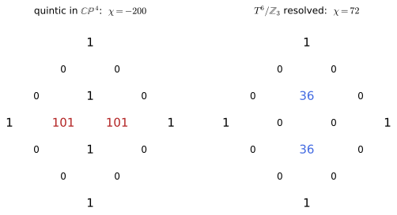
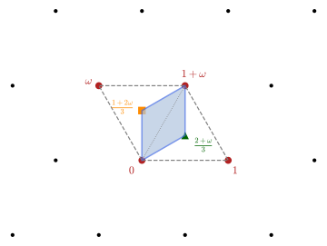
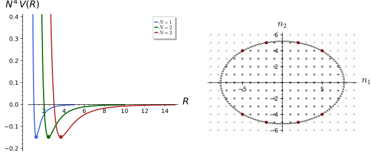
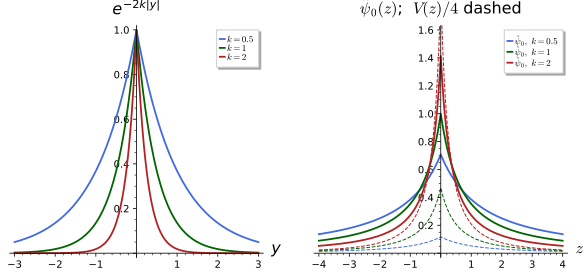
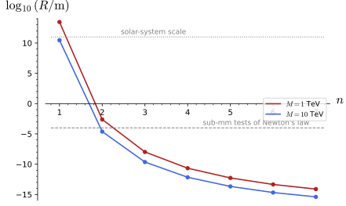
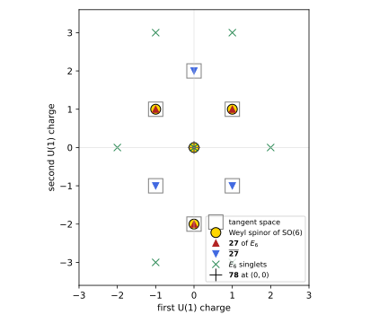
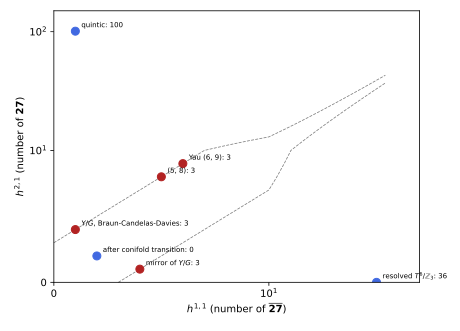

Compactifications
Parts III to V chose the internal space for its isometries: the circle of Kaluza-Klein theory gives a U(1) gauge field and its tower of massive modes (The Kaluza-Klein tower), a sphere or a group manifold gives non-abelian gauge fields (Part IV), and coset space dimensional reduction (CSDR, Part V) makes the internal components of a higher-dimensional gauge field into Higgs fields whose potential is fixed by the geometry. This chapter surveys compactifications chosen for a different purpose, for what they leave behind at low energies: the amount of supersymmetry, the number of chiral generations, the values of the moduli, and the hierarchy between the Planck scale and the electroweak scale. The three sections follow the three main ideas. Special holonomy asks the internal manifold to admit parallel spinors, which leads to Calabi-Yau threefolds, G_2 manifolds and their singular limits, the orbifolds, and to the nearly-Kähler coset spaces in which CSDR and the supersymmetric compactifications meet. Flux compactifications thread the cycles of the internal space with quantised field strengths, whose energy gives the moduli a potential and fixes them, and whose many integer choices make the landscape of vacua. Warped and large extra dimensions give up the product structure of spacetime or the smallness of the internal space, and explain the weakness of gravity by an exponential warp factor (Randall-Sundrum) or by a large volume (Arkani-Hamed, Dimopoulos and Dvali). The chapter is a survey: the higher-dimensional supergravity and string theory behind each construction are cited, not derived. One computation per idea is carried out exactly in Sage: the Hodge numbers and Euler numbers that count generations, the Dirac quantisation of a flux and the minimum of the potential it produces, and the warped solution of the five-dimensional Einstein equations with the hierarchy and the localised graviton it implies. Every statement is followed by three examples and three exercises with hidden solutions. A fourth section, Section 1.4, derives the fermion spectra of these compactifications, the families that the Euler numbers count, from the Dirac operators of Spinors and the Dirac operator.
Special holonomy: Calabi-Yau, G2, nearly-Kähler, orbifolds
A compactification on M_4 \times X preserves supersymmetry when the internal manifold X admits spinors that are constant in the sense of its Levi-Civita connection. Whether such spinors exist is decided by the holonomy group of X, the group of rotations produced by parallel transport around closed loops. This section defines holonomy, states the link with unbroken supersymmetry, and then meets the manifolds of reduced holonomy that string and M-theory use: Calabi-Yau threefolds with their Hodge numbers, G_2 manifolds, the nearly-Kähler coset spaces of CSDR, and toroidal orbifolds. The section ends by counting generations through Euler numbers.
Holonomy and supersymmetry
Parallel transport along a curve maps tangent vectors at its start to tangent vectors at its end, preserving lengths and angles (Definition 60 of Differential geometry). Along a closed loop it returns a rotation of the tangent space at the base point, and the rotations obtained from all loops form a group.
Definition 1 (Holonomy group) Let (X, g) be a connected Riemannian manifold of dimension n and p \in X. For every piecewise smooth loop \gamma based at p, parallel transport with the Levi-Civita connection gives an orthogonal map P_\gamma : T_pX \to T_pX. These maps form a subgroup \operatorname{Hol}_p(g) = \{P_\gamma : \gamma \text{ a loop at } p\} \subset O(n), \tag{1} the holonomy group of g; it lies in SO(n) when X is orientable, and the groups at different points are conjugate. A connected, simply connected, irreducible and non-symmetric X has holonomy SO(n), U(m) or SU(m) (n = 2m), Sp(m) or Sp(m)Sp(1) (n = 4m), G_2 (n = 7) or Spin(7) (n = 8): Berger’s list (Acharya and Gukov 2004, sec. 2.1 and Table 1).
Veriphy. Pending.
Lean. Pending.
Sage. Pending.
The first example is the trivial case. On a flat torus parallel transport is the identity in the standard coordinates, so no loop rotates anything.
Example 1 (The flat torus) On T^n = \mathbb{R}^n/\mathbb{Z}^n with the flat metric the Christoffel symbols vanish, parallel vector fields are the constant ones, and every P_\gamma is the identity: \operatorname{Hol}(T^n) = \{1\}. The torus reductions of Toroidal and Scherk-Schwarz reductions owe their maximal supersymmetry to this.
On the round sphere a loop does rotate vectors, by an angle equal to the enclosed area. All angles occur, so the holonomy is the whole rotation group of the tangent plane.
Example 2 (The two-sphere) Transport around the circle of latitude \theta = \theta_0 on the unit sphere rotates a vector by 2\pi(1 - \cos\theta_0), the area of the enclosed cap (Example 276 of Differential geometry, Exercise 1). As \theta_0 runs over (0, \pi) every angle occurs, so \operatorname{Hol}(S^2) = SO(2), the generic holonomy in two dimensions.
A complex structure that is parallel restricts the holonomy further. For a Kähler manifold the holonomy must commute with it, which cuts SO(2m) down to the unitary group.
Example 3 (Kähler manifolds) On a Kähler manifold of complex dimension m the complex structure J is parallel, so every P_\gamma commutes with J: holomorphic and antiholomorphic components of a vector do not mix under transport, and \operatorname{Hol} \subset U(m) \subset SO(2m) (Greene 1997, sec. 2.8). The complex projective spaces \mathbb{CP}^m with the Fubini-Study metric have holonomy exactly U(m).
The first exercise computes the transport around a circle of latitude with Sage. It turns the statement of Example 2 into a linear differential equation whose solution is a rotation.
Exercise 1 (Transport around a latitude) On the unit sphere, write the parallel transport equations along \gamma(t) = (\theta_0, t), 0 \le t \le 2\pi, solve them with Sage, and show that one loop rotates every vector by -2\pi\cos\theta_0, which equals the enclosed area modulo 2\pi.
With \Gamma^\theta_{\varphi\varphi} = -\sin\theta\cos\theta and \Gamma^\varphi_{\theta\varphi} = \cot\theta the equations \dot V^r = -\Gamma^r_{\varphi s}V^s read, in the orthonormal components a = V^\theta, b = \sin\theta_0\,V^\varphi, \dot a = \cos\theta_0\,b, \dot b = -\cos\theta_0\,a: a rotation at angular speed \cos\theta_0. After t = 2\pi the angle is -2\pi\cos\theta_0 = 2\pi(1 - \cos\theta_0) - 2\pi:
t, th0 = var("t theta0")
assume(0 < th0, th0 < pi)
th, ph = var("theta phi")
g = diagonal_matrix([1, sin(th)**2]); gi = g.inverse(); X = [th, ph]
Gam = [[[sum(gi[r, l] * (diff(g[l, j], X[i]) + diff(g[l, i], X[j]) - diff(g[i, j], X[l])) for l in range(2)) / 2 for j in range(2)] for i in range(2)] for r in range(2)]
print("Christoffel symbols: Gamma^theta_{phi phi} =", Gam[0][1][1], "; Gamma^phi_{theta phi} =", Gam[1][0][1])
# along gamma(t) = (theta0, t): dV^r/dt = -Gamma^r_{phi s} V^s
Mt = matrix(SR, 2, 2, lambda r, s: -Gam[r][1][s]).subs(theta=th0)
print("transport matrix d/dt (V^theta, V^phi) = M (V^theta, V^phi), M =", Mt)
S = diagonal_matrix([1, sin(th0)]) # to orthonormal components (a, b)
Mo = (S * Mt * S.inverse()).simplify_full()
print("in orthonormal components: M =", Mo, "(rotation generator times cos(theta0))")
Rot = matrix([[cos(t * cos(th0)), sin(t * cos(th0))], [-sin(t * cos(th0)), cos(t * cos(th0))]])
print("the rotation Rot(t) by the angle -t cos(theta0) solves dRot/dt = M Rot with Rot(0) = 1:",
bool((diff(Rot, t) - Mo * Rot).simplify_full() == 0) and Rot.subs(t=0) == 1)
print("so after one loop (t = 2 pi) every vector is rotated by -2 pi cos(theta0)")
area = integrate(integrate(sin(th), th, 0, th0), ph, 0, 2 * pi)
print("area of the cap enclosed:", area.simplify_full(), "; -2 pi cos(theta0) = area - 2 pi:", bool(-2 * pi * cos(th0) == area - 2 * pi))
for v in [pi / 6, pi / 3, pi / 2]:
ang = (-2 * pi * cos(v)).n()
print("theta0 =", v, ": rotation angle -2 pi cos(theta0) mod 2 pi =", (ang - 2 * pi.n() * floor(ang / (2 * pi.n()))).n(digits=5), "; enclosed area =", (2 * pi * (1 - cos(v))).n(digits=5))Output:
Christoffel symbols: Gamma^theta_{phi phi} = -cos(theta)*sin(theta) ; Gamma^phi_{theta phi} = cos(theta)/sin(theta)
transport matrix d/dt (V^theta, V^phi) = M (V^theta, V^phi), M = [ 0 cos(theta0)*sin(theta0)]
[-cos(theta0)/sin(theta0) 0]
in orthonormal components: M = [ 0 cos(theta0)]
[-cos(theta0) 0] (rotation generator times cos(theta0))
the rotation Rot(t) by the angle -t cos(theta0) solves dRot/dt = M Rot with Rot(0) = 1: True
so after one loop (t = 2 pi) every vector is rotated by -2 pi cos(theta0)
area of the cap enclosed: 2*pi - 2*pi*cos(theta0) ; -2 pi cos(theta0) = area - 2 pi: True
theta0 = 1/6*pi : rotation angle -2 pi cos(theta0) mod 2 pi = 0.84179 ; enclosed area = 0.84179
theta0 = 1/3*pi : rotation angle -2 pi cos(theta0) mod 2 pi = 3.1416 ; enclosed area = 3.1416
theta0 = 1/2*pi : rotation angle -2 pi cos(theta0) mod 2 pi = 0.00000 ; enclosed area = 6.2832A cone is flat away from its apex, yet a loop around the apex rotates vectors. The second exercise separates the holonomy from the restricted holonomy of contractible loops.
Exercise 2 (The cone) Cut a wedge of angle \beta out of the plane and glue the edges to make a cone. Find the holonomy of a loop around the apex and of a loop that does not enclose it. Which loops are contractible on the cone with its apex removed?
Away from the apex the cone is flat, so a loop that does not enclose the apex bounds a flat disc and has trivial holonomy. Unrolling a loop around the apex onto the plane, a vector transported once around comes back to the cut and is compared with itself across the glued edges, which meet at the angle \beta: it is rotated by \beta. The loops around the apex are not contractible once the apex is removed, so the holonomy group is the cyclic group generated by the rotation by \beta while the restricted holonomy (contractible loops) is trivial. Orbifold singularities (Definition 6) are cones of this kind, with \beta = 2\pi(1 - 1/m).
Holonomy behaves simply under products: transport on X_1 \times X_2 acts on each factor separately. The third exercise uses this to read off the holonomy of some product spaces.
Exercise 3 (Products) Show that \operatorname{Hol}(X_1 \times X_2) \subset \operatorname{Hol}(X_1) \times \operatorname{Hol}(X_2) for the product metric, and find the holonomy of S^2 \times S^2, of T^2 \times S^2 and of T^2 \times K3, where the K3 surface has holonomy SU(2).
The Levi-Civita connection of a product metric is the sum of the two connections, with no mixed Christoffel symbols, so a loop (\gamma_1, \gamma_2) is transported by P_{\gamma_1} \oplus P_{\gamma_2} on T_{p_1}X_1 \oplus T_{p_2}X_2; taking \gamma_2 constant shows that the product is all of \operatorname{Hol}(X_1) \times \operatorname{Hol}(X_2). Hence \operatorname{Hol}(S^2 \times S^2) = SO(2) \times SO(2), \operatorname{Hol}(T^2 \times S^2) = SO(2) acting on the sphere factor, and \operatorname{Hol}(T^2 \times K3) = SU(2) \subset SU(3): a Ricci-flat Kähler threefold whose holonomy is smaller than SU(3), and which therefore preserves more supersymmetry than a Calabi-Yau threefold.
Supersymmetry enters through the gravitino. In a background in which only the metric is non-zero, its variation is the covariant derivative of the supersymmetry parameter, and an unbroken supersymmetry is a parallel spinor on the internal space.
Proposition 1 (Parallel spinors and unbroken supersymmetry) In a compactification M_d \times X of eleven-dimensional supergravity, or of ten-dimensional supergravity, in which all fields but the metric vanish, the Killing spinor equation of Definition 26 of Supersymmetry and supergravity reduces on X to \nabla_m\xi = 0 , \tag{2} and the unbroken supersymmetries are counted by the parallel spinors \xi of X. A parallel spinor is invariant under the holonomy group acting in the spinor representation, so it exists only if \operatorname{Hol}(X) is a proper subgroup of SO(n); a manifold with a parallel spinor is Ricci-flat, so M_d \times X with M_d flat solves the vacuum Einstein equations. The fraction of the supercharges preserved is 1 for the torus, \tfrac14 for holonomy SU(3) (n = 6), \tfrac18 for G_2 (n = 7) and \tfrac1{16} for Spin(7) (n = 8) (Acharya and Gukov 2004, sec. 2.2, eq. 2.10 and Table 2). Quoted, with the spinor counting for SU(3) checked in Exercise 4.
Veriphy. Pending.
Lean. Pending.
Sage. Pending.
The counting of invariant spinors is representation theory: decompose the spinor of SO(n) under the holonomy group and count singlets. The three examples do this for the three cases that matter most.
Example 4 (SU(3) holonomy) SO(6) is locally SU(4), and its two chiral spinors are the \mathbf 4 and \bar{\mathbf 4}. Under SU(3) \subset SU(4), \mathbf 4 = \mathbf 3 + \mathbf 1: one invariant spinor of each chirality, two of the eight spinor components, the fraction \tfrac14. Type II strings on a Calabi-Yau threefold keep 8 of 32 supercharges (N = 2 in four dimensions), the heterotic string 4 of 16 (N = 1).
Seven dimensions have no chirality, and the spinor of Spin(7) is real of dimension 8. The exceptional group G_2 fixes exactly one direction in it.
Example 5 (G_2 holonomy) Under G_2 \subset Spin(7) the spinor decomposes as \mathbf 8 = \mathbf 7 + \mathbf 1 (Acharya and Gukov 2004, sec. 2.2): one parallel spinor, the fraction \tfrac18. M-theory on a G_2 manifold keeps 4 of 32 supercharges, N = 1 in four dimensions, the same amount as the heterotic string on a Calabi-Yau threefold (Acharya and Gukov 2004, sec. 2.2).
In four real dimensions holonomy SU(2) is the Calabi-Yau condition for a complex surface. Because SO(4) splits into two SU(2) factors, the count is particularly transparent.
Example 6 (The K3 surface) SO(4) is locally SU(2) \times SU(2) and its chiral spinors are (\mathbf 2, \mathbf 1) and (\mathbf 1, \mathbf 2). Holonomy SU(2) is one factor, so (\mathbf 1, \mathbf 2) consists of two singlets and (\mathbf 2, \mathbf 1) of none: two of the four spinor components survive, the fraction \tfrac12, and both have the same chirality.
The first exercise checks the SU(3) count of Example 4 by explicit gamma matrices. It also shows that holonomy U(3), a Kähler manifold that is not Ricci-flat, preserves nothing.
Exercise 4 (Invariant spinors with Sage) Build six 8 \times 8 gamma matrices for \mathbb{R}^6, let X \in \mathfrak{so}(6) act on spinors as \tfrac14 X_{ab}\Gamma^a\Gamma^b, find \mathfrak{u}(3) = \{X : [X, J] = 0\} and its traceless part \mathfrak{su}(3), and compute the spinors annihilated by each.
The commutant of J in \mathfrak{so}(6) is 9-dimensional and its subspace with \operatorname{tr}(JX) = 0 is 8-dimensional. The common kernel of \mathfrak{su}(3) is 2-dimensional, one spinor of each chirality, and that of \mathfrak{u}(3) is zero: the U(1) factor rotates both singlets, which is why the Ricci-flat condition (vanishing U(1) part of the holonomy) is needed:
s1 = matrix(QQbar, [[0, 1], [1, 0]]); s2 = matrix(QQbar, [[0, -I], [I, 0]]); s3 = matrix(QQbar, [[1, 0], [0, -1]]); e = identity_matrix(QQbar, 2)
def kron(*ms):
out = ms[0]
for m in ms[1:]:
out = out.tensor_product(m)
return out
Gam = [kron(s1, e, e), kron(s2, e, e), kron(s3, s1, e), kron(s3, s2, e), kron(s3, s3, s1), kron(s3, s3, s2)]
print("Clifford relations {Gamma_a, Gamma_b} = 2 delta_ab:", all(Gam[a] * Gam[b] + Gam[b] * Gam[a] == 2 * (1 if a == b else 0) * identity_matrix(QQbar, 8) for a in range(6) for b in range(6)))
Gam7 = -I * Gam[0] * Gam[1] * Gam[2] * Gam[3] * Gam[4] * Gam[5]
print("chirality Gamma_7^2 = 1:", Gam7 ** 2 == identity_matrix(QQbar, 8))
def E(a, b):
m = matrix(QQ, 6, 6); m[a, b] = 1; m[b, a] = -1; return m
basis = [E(a, b) for a in range(6) for b in range(a + 1, 6)]
J = matrix(QQ, 6, 6)
for i in range(3):
J[2 * i, 2 * i + 1] = -1; J[2 * i + 1, 2 * i] = 1
# u(3): X in so(6) with [X, J] = 0, as a linear system on the 15 coefficients
cvars = vector(SR, var(["c%d" % i for i in range(15)]))
Xg = sum(c * B for c, B in zip(cvars, basis))
eqs = [x == 0 for x in (Xg * J - J * Xg).list()]
Mu = matrix(QQ, [[QQ(eq.lhs().coefficient(c)) for c in cvars] for eq in eqs])
u3 = [sum(cv * B for cv, B in zip(v, basis)) for v in Mu.right_kernel().basis()]
print("dim u(3) =", len(u3))
Tr = matrix(QQ, [[(J * X).trace() for X in u3]])
su3 = [sum(cv * X for cv, X in zip(v, u3)) for v in Tr.right_kernel().basis()]
print("dim su(3) =", len(su3))
def spin(X):
return sum(QQbar(X[a, b]) * Gam[a] * Gam[b] for a in range(6) for b in range(6)) / 4
def invariant(gens):
big = block_matrix([[spin(X)] for X in gens])
return big.right_kernel()
K3 = invariant(su3)
print("spinors annihilated by su(3): dimension", K3.dimension())
print("their chiralities (Gamma_7 eigenvalues):", sorted([(Gam7 * v == v) and 1 or ((Gam7 * v == -v) and -1 or 0) for v in K3.basis()]))
print("spinors annihilated by u(3): dimension", invariant(u3).dimension())
print("fraction of supercharges preserved by SU(3) holonomy: 2 of 8 =", QQ(K3.dimension()) / 8)Output:
Clifford relations {Gamma_a, Gamma_b} = 2 delta_ab: True
chirality Gamma_7^2 = 1: True
dim u(3) = 9
dim su(3) = 8
spinors annihilated by su(3): dimension 2
their chiralities (Gamma_7 eigenvalues): [-1, 1]
spinors annihilated by u(3): dimension 0
fraction of supercharges preserved by SU(3) holonomy: 2 of 8 = 1/4A parallel spinor constrains the curvature through its integrability condition. The second exercise derives the Ricci-flatness stated in Proposition 1. The argument uses only the Clifford algebra and the symmetries of the Riemann tensor.
Exercise 5 (Parallel spinors force Ricci-flatness) From \nabla_m\xi = 0 derive R_{mnab}\Gamma^{ab}\xi = 0, and using \Gamma^n\Gamma^{ab}R_{mnab} = -2R_{ma}\Gamma^a (a consequence of the first Bianchi identity) conclude that R_{ma} = 0.
The commutator of covariant derivatives on spinors is [\nabla_m, \nabla_n]\xi = \tfrac14 R_{mnab}\Gamma^{ab}\xi, which vanishes for a parallel spinor. Multiplying by \Gamma^n and summing, the totally antisymmetric part \Gamma^{nab}R_{mnab} drops out by the Bianchi identity R_{m[nab]} = 0 and what remains is -2R_{ma}\Gamma^a\xi = 0. For a non-zero \xi the vectors \Gamma^a\xi, a = 1, \dots, n, are linearly independent (multiply c_a\Gamma^a\xi = 0 by c_b\Gamma^b to get |c|^2\xi = 0), so R_{ma} = 0 for every m, a.
Different higher-dimensional theories start with different numbers of supercharges. The third exercise turns the fractions of Proposition 1 into four-dimensional N.
Exercise 6 (Four-dimensional supersymmetry) A four-dimensional supersymmetry has 4 real supercharges. Find N for: type IIA or IIB on a Calabi-Yau threefold (32 supercharges in ten dimensions); the heterotic string (16) on a Calabi-Yau threefold; M-theory (32) on a G_2 manifold; type IIB on K3 \times T^2; M-theory on T^7.
Type II on a Calabi-Yau threefold: 32/4 = 8 supercharges, N = 2. Heterotic on a Calabi-Yau threefold: 16/4 = 4, N = 1, the phenomenologically preferred case. M-theory on G_2: 32/8 = 4, N = 1. Type IIB on K3 \times T^2: the holonomy SU(2) keeps half, 16 supercharges, N = 4. M-theory on T^7: all 32, N = 8 (Definition 28 of Supersymmetry and supergravity).
Calabi-Yau threefolds
Holonomy SU(3) in six dimensions is the case that preserves N = 1 for the heterotic string. Manifolds with this holonomy are called Calabi-Yau, and Yau’s theorem makes them easy to recognise from topology alone.
Definition 2 (Calabi-Yau manifold) A Calabi-Yau manifold of complex dimension m is a compact, complex Kähler manifold whose holonomy is SU(m) (Greene 1997, sec. 2.11). Its metric is Ricci-flat, and it carries a nowhere-vanishing holomorphic (m, 0)-form \Omega, parallel like the spinor of Proposition 1. Conversely, by Yau’s theorem a compact Kähler manifold with vanishing first Chern class c_1 admits a unique Ricci-flat Kähler metric in each Kähler class (Greene 1997, sec. 2.11, Theorem 2), so being Calabi-Yau is decided by the topological condition c_1 = 0. No Ricci-flat metric on a compact Calabi-Yau threefold is known explicitly (Greene 1997, sec. 2.11).
Veriphy. Pending.
Lean. Pending.
Sage. Pending.
In complex dimension one the condition is satisfied by the torus. The holomorphic form is dz and the holonomy is trivial, which is SU(1).
Example 7 (Elliptic curves) T^2 = \mathbb{C}/\Lambda for a lattice \Lambda is a compact Kähler manifold with flat metric and the nowhere-vanishing holomorphic one-form dz: the one-dimensional Calabi-Yau manifolds are the elliptic curves. Its lattice, up to rotation and scale, is the complex modulus \tau of Section 1.2.
In complex dimension two there is, up to diffeomorphism, a single compact Calabi-Yau manifold with full SU(2) holonomy, the K3 surface. Its simplest model is a quartic.
Example 8 (The K3 surface) The quartic z_1^4 + z_2^4 + z_3^4 + z_4^4 = 0 in \mathbb{CP}^3 has c(TX) = (1 + J)^4/(1 + 4J) = 1 + 6J^2, so c_1 = 0, and Euler number \int c_2 = 6\int J^2 = 24 (\int J^2 = 4, the degree). It is the unique simply connected two-dimensional Calabi-Yau (Greene 1997, sec. 2.11), with Hodge number h^{1,1} = 20 (Greene 1997, eq. 2.76).
The most studied threefold is the quintic. Its first Chern class vanishes because the degree equals the number of homogeneous coordinates, the computation behind Proposition 2.
Example 9 (The quintic) The quintic X = \{z_1^5 + z_2^5 + z_3^5 + z_4^5 + z_5^5 = 0\} \subset \mathbb{CP}^4 (Greene 1997, eq. 2.65) has c(TX) = (1 + J)^5/(1 + 5J) by adjunction, with J the hyperplane class (Greene 1997, eq. 2.73): c_1 = (5 - 5)J = 0, so X is a Calabi-Yau threefold. Changing the coefficients of the quintic polynomial changes the complex structure; Definition 3 counts those changes.
The first exercise repeats the Chern class computation in every dimension. It finds the Calabi-Yau hypersurfaces of projective spaces and their Euler numbers.
Exercise 7 (Calabi-Yau hypersurfaces) For a hypersurface of degree d in \mathbb{CP}^{m+1}, c(TX) = (1 + J)^{m+2}/(1 + dJ) and \int_X J^m = d. Use Sage to find, for m = 1, \dots, 4, the degrees with c_1 = 0 and the Euler numbers \chi = \int c_m.
c_1 = (m + 2 - d)J, so d = m + 2: the cubic curve (\chi = 0, a torus), the quartic surface (\chi = 24, K3), the quintic threefold (\chi = -200) and the sextic fourfold (\chi = 2610):
R.<J> = PowerSeriesRing(QQ, default_prec=8)
for m in range(1, 5):
cy = [d for d in range(1, 10) if ((1 + J) ** (m + 2) / (1 + d * J))[1] == 0]
d = m + 2
c = (1 + J) ** (m + 2) / (1 + d * J)
print("complex dimension %d: c_1 = 0 only for degree %s in CP^%d; c(TX) = %s; chi = %d * %d = %d"
% (m, cy, m + 1, " + ".join("%s J^%d" % (c[i], i) for i in range(m + 1)), c[m], d, c[m] * d))
print("the cubic curve is a torus (chi = 0), the quartic is K3 (chi = 24), the quintic has chi = -200, the sextic fourfold chi = 2610")Output:
complex dimension 1: c_1 = 0 only for degree [3] in CP^2; c(TX) = 1 J^0 + 0 J^1; chi = 0 * 3 = 0
complex dimension 2: c_1 = 0 only for degree [4] in CP^3; c(TX) = 1 J^0 + 0 J^1 + 6 J^2; chi = 6 * 4 = 24
complex dimension 3: c_1 = 0 only for degree [5] in CP^4; c(TX) = 1 J^0 + 0 J^1 + 10 J^2 + -40 J^3; chi = -40 * 5 = -200
complex dimension 4: c_1 = 0 only for degree [6] in CP^5; c(TX) = 1 J^0 + 0 J^1 + 15 J^2 + -70 J^3 + 435 J^4; chi = 435 * 6 = 2610
the cubic curve is a torus (chi = 0), the quartic is K3 (chi = 24), the quintic has chi = -200, the sextic fourfold chi = 2610Products of lower-dimensional Calabi-Yau manifolds are Ricci-flat and Kähler but have smaller holonomy. The second exercise asks which products qualify under the definition.
Exercise 8 (Products and tori) Are T^6, T^2 \times K3 and K3 \times K3 Calabi-Yau manifolds in the sense of Definition 2? What distinguishes them from the quintic in terms of holomorphic one-forms?
All three are compact, Kähler and Ricci-flat, but their holonomies, \{1\}, SU(2) and SU(2) \times SU(2), are proper subgroups of SU(m), so they are excluded by the definition (which asks for holonomy exactly SU(m), as Greene (1997, sec. 2.8) does). T^6 and T^2 \times K3 have holomorphic one-forms (dz on a torus factor), h^{1,0} \ne 0, while a Calabi-Yau threefold with full SU(3) holonomy has h^{1,0} = 0 (Definition 3). They preserve more supersymmetry (Exercise 3) and are used for that reason in type II compactifications to N = 4.
Yau’s theorem trades a hard analytic problem, finding a Ricci-flat metric, for a topological one. The third exercise explains why the first Chern class is the right obstruction.
Exercise 9 (The Ricci form) On a Kähler manifold the Ricci tensor defines the closed (1, 1)-form \rho = iR_{i\bar j}\,dz^i \wedge d\bar z^j, which is the curvature of the canonical line bundle and represents 2\pi c_1. Explain why holonomy in SU(m) implies \rho = 0, and why c_1 \ne 0 rules out a Ricci-flat Kähler metric.
The Levi-Civita connection of a Kähler metric takes values in \mathfrak{u}(m) = \mathfrak{su}(m) \oplus \mathfrak{u}(1), and the \mathfrak{u}(1) part, the trace of the curvature, is the Ricci form (Greene 1997, sec. 2.11). Holonomy in SU(m) means the \mathfrak{u}(1) part of the curvature vanishes, so \rho = 0. Conversely, if a Ricci-flat Kähler metric existed then \rho = 0 would represent 2\pi c_1, so c_1 = 0 in real cohomology: a manifold with c_1 \ne 0, such as \mathbb{CP}^m with c_1 = (m + 1)J, has no Ricci-flat Kähler metric.
The topology of a Calabi-Yau threefold is summarised by its Hodge numbers. Two of them are free and the rest are fixed by the holonomy; the free ones count both the moduli and the generations.
Definition 3 (Hodge number) On a compact Kähler manifold the Hodge number h^{p,q} is the dimension of the space of harmonic (p, q)-forms, equivalently of the Dolbeault cohomology H^{p,q}_{\bar\partial}(X). They satisfy h^{p,q} = h^{q,p} = h^{m-p,m-q} and b_k = \sum_{p+q=k}h^{p,q} (Greene 1997, eqs. 2.55-2.57), and the Euler number is \chi = \sum_{p,q}(-1)^{p+q}h^{p,q} (Greene 1997, eq. 2.75). On a Calabi-Yau threefold h^{0,0} = h^{3,0} = 1 and h^{1,0} = h^{2,0} = 0 (Greene 1997, sec. 2.11), so the Hodge diamond depends on h^{1,1} and h^{2,1} only and \chi = 2\left(h^{1,1} - h^{2,1}\right) . \tag{3} Ricci-flat deformations of the metric are counted by h^{1,1} (real Kähler moduli) and h^{2,1} (complex complex-structure moduli) (Greene 1997, sec. 2.12).
Veriphy. Pending.
Lean. Pending.
Sage. Pending.

figures/hodge_diamond.sage.
The quintic is the standard example. Its Hodge numbers follow from the Euler number and from counting the coefficients of the defining polynomial, as Proposition 2 checks.
Example 10 (The quintic) The quintic has h^{1,1} = 1 (the hyperplane class, inherited from \mathbb{CP}^4) and h^{2,1} = 101, so \chi = 2(1 - 101) = -200 (Greene 1997, sec. 2.12), in agreement with the Chern class computation of Example 9 (Figure 1). Its third Betti number is b_3 = 2 + 2h^{2,1} = 204.
Calabi-Yau threefolds come in mirror pairs whose Hodge diamonds are reflections of each other. The two kinds of moduli are exchanged, and with them the sign of the Euler number.
Example 11 (Mirror symmetry) The mirror quintic has (h^{1,1}, h^{2,1}) = (101, 1) and \chi = +200 (Greene 1997, Table 1). In general mirror pairs satisfy h^{1,1}(M) = h^{2,1}(\tilde M) and h^{2,1}(M) = h^{1,1}(\tilde M) (Greene 1997, eq. 6.2) and define the same string theory, with Kähler and complex-structure deformations exchanged.
The Hodge numbers count the massless scalars of a compactification. For the quintic the numbers are already large, which is the moduli problem of Section 1.2.
Example 12 (Moduli of the quintic) The quintic has 1 Kähler modulus (its overall size) and 101 complex-structure moduli, a moduli space of real dimension 2 \cdot 101 + 1 = 203 (Greene 1997, sec. 2.12). In a type II compactification each becomes a massless four-dimensional scalar, together with partners from the other higher-dimensional fields; none has a potential until fluxes are switched on (Definition 9).
The Betti numbers follow from the diamond by summing rows. The first exercise does this for three threefolds and checks Poincaré duality.
Exercise 10 (Betti numbers from the diamond) Compute b_0, \dots, b_6 for the quintic, the mirror quintic and the resolved T^6/\mathbb{Z}_3 from their Hodge numbers with Sage, and check b_k = b_{6-k} and \sum(-1)^kb_k = 2(h^{1,1} - h^{2,1}).
The quintic has (b_0, \dots, b_6) = (1, 0, 1, 204, 1, 0, 1), the mirror (1, 0, 101, 4, 101, 0, 1) and T^6/\mathbb{Z}_3 (1, 0, 36, 2, 36, 0, 1); all are palindromic and their alternating sums are -200, 200 and 72:
def diamond(h11, h21):
h = {(p, q): 0 for p in range(4) for q in range(4)}
for pq in [(0, 0), (3, 0), (0, 3), (3, 3)]: h[pq] = 1
for pq in [(1, 1), (2, 2)]: h[pq] = h11
for pq in [(2, 1), (1, 2)]: h[pq] = h21
return h
for name, (h11, h21) in [("quintic", (1, 101)), ("mirror quintic", (101, 1)), ("T^6/Z_3 resolved", (36, 0))]:
h = diamond(h11, h21)
b = [sum(h[(p, k - p)] for p in range(4) if 0 <= k - p <= 3) for k in range(7)]
chi = sum((-1) ** k * b[k] for k in range(7))
print(name, ": Betti numbers", b, "; Poincare duality:", b == b[::-1], "; chi =", chi, "= 2(h11 - h21):", chi == 2 * (h11 - h21))Output:
quintic : Betti numbers [1, 0, 1, 204, 1, 0, 1] ; Poincare duality: True ; chi = -200 = 2(h11 - h21): True
mirror quintic : Betti numbers [1, 0, 101, 4, 101, 0, 1] ; Poincare duality: True ; chi = 200 = 2(h11 - h21): True
T^6/Z_3 resolved : Betti numbers [1, 0, 36, 2, 36, 0, 1] ; Poincare duality: True ; chi = 72 = 2(h11 - h21): TrueThe number h^{2,1} = 101 of the quintic can be found without any cohomology. The second exercise counts the deformations of the defining polynomial.
Exercise 11 (Counting deformations) The quintics form a projective space of homogeneous polynomials of degree 5 in five variables, and two of them related by a linear change of coordinates define the same manifold. Count the monomials with Sage and subtract \dim GL(5) to recover h^{2,1} = 101 (Greene 1997, sec. 2.12); do the same for the quartic K3 surface.
There are \binom{9}{4} = 126 quintic monomials and \dim GL(5) = 25, leaving 101 parameters, the complex-structure moduli. For quartics in \mathbb{CP}^3, \binom{7}{3} = 35 monomials minus 16 leave 19, the algebraic deformations of K3 (its h^{1,1} = 20 includes the polarisation class):
for name, n, d in [("quintic in CP^4", 5, 5), ("quartic in CP^3", 4, 4)]:
P = PolynomialRing(QQ, n, "z")
mons = [m for m in P.monomials_of_degree(d)]
print(name, ": monomials of degree", d, "=", len(mons), "= binomial:", len(mons) == binomial(n + d - 1, d), "; deformations", len(mons), "-", n ** 2, "=", len(mons) - n ** 2)Output:
quintic in CP^4 : monomials of degree 5 = 126 = binomial: True ; deformations 126 - 25 = 101
quartic in CP^3 : monomials of degree 4 = 35 = binomial: True ; deformations 35 - 16 = 19The formula Equation 3 uses all the symmetries of the diamond at once. The third exercise derives it by hand. Only the symmetries of the diamond are needed.
Exercise 12 (The Euler number of a threefold) Write out \chi = \sum(-1)^{p+q}h^{p,q} for a Calabi-Yau threefold using h^{p,q} = h^{q,p} = h^{3-p,3-q} and the values fixed by the holonomy, and derive Equation 3.
The even rows contribute h^{0,0} + (h^{2,0} + h^{1,1} + h^{0,2}) + (h^{3,1} + h^{2,2} + h^{1,3}) + h^{3,3} = 1 + h^{1,1} + h^{1,1} + 1, using h^{2,0} = h^{3,1} = 0 and h^{2,2} = h^{1,1}. The odd rows contribute -(h^{1,0} + h^{0,1}) - (h^{3,0} + h^{2,1} + h^{1,2} + h^{0,3}) - (h^{3,2} + h^{2,3}) = -(2 + 2h^{2,1}). The sum is 2h^{1,1} - 2h^{2,1}.
G_2 manifolds
In seven dimensions the group that fixes a spinor is the exceptional group G_2. It is defined by a three-form, and manifolds with this holonomy are the internal spaces of M-theory with four-dimensional N = 1 supersymmetry.
Definition 4 (G_2 manifold) On \mathbb{R}^7 with coordinates x_1, \dots, x_7 let \Phi = \sum dx_i \wedge dx_j \wedge dx_k, summed over the seven triples (ijk) = (123), (147), (165), (246), (257), (354), (367); its stabiliser in GL(7, \mathbb{R}) is the fourteen-dimensional group G_2, the automorphism group of the octonions (Acharya and Gukov 2004, eqs. 2.6-2.8). A G_2 manifold is a seven-manifold with a three-form \Phi that has this form at every point in a suitable frame and satisfies d\Phi = 0, \qquad d{*\Phi} = 0 ; \tag{4} then \Phi determines a metric whose holonomy lies in G_2 (Acharya and Gukov 2004, eqs. 2.14, 2.17). The metric is Ricci-flat and has a parallel spinor.
Veriphy. Pending.
Lean. Pending.
Sage. Pending.
The flat model is the definition itself. The dimension count shows why a generic three-form in seven dimensions has the G_2 form.
Example 13 (The flat model) On \mathbb{R}^7 the constant form \Phi is closed and coclosed, with holonomy trivial. Its orbit under GL(7) has dimension 49 - 14 = 35 = \dim\Lambda^3\mathbb{R}^7, so the orbit is open: a generic three-form is of G_2 type (Exercise 13), which is why a G_2 structure is defined by a single form.
A Calabi-Yau threefold times a circle is a G_2 manifold with smaller holonomy. The three-form is built from the Kähler form and the holomorphic three-form.
Example 14 (Calabi-Yau times a circle) On CY_3 \times S^1 with Kähler form J and holomorphic three-form \Omega, the form \Phi = J \wedge d\theta + \operatorname{Re}\Omega satisfies Equation 4 because dJ = 0 and d\Omega = 0. The holonomy is SU(3) \subset G_2, two parallel spinors survive, and M-theory on it is type IIA on the Calabi-Yau with N = 2 (Exercise 15).
Compact manifolds with full G_2 holonomy are hard to construct. The first examples were resolved orbifolds of the seven-torus, and their Betti numbers fix the spectrum.
Example 15 (Joyce’s orbifold) Joyce resolved the orbifold T^7/\mathbb{Z}_2^3, with three commuting involutions acting by sign changes and half shifts of the coordinates, to a compact G_2 manifold with b_2 = 12 and b_3 = 43 (Acharya and Gukov 2004, eqs. 3.22-3.24). M-theory on a smooth G_2 manifold gives four-dimensional N = 1 supergravity with b_2 abelian vector multiplets and b_3 neutral chiral multiplets (Acharya and Gukov 2004, sec. 4): here 12 and 43.
The first exercise computes the dimension of G_2 from its definition. It solves the linear conditions for an infinitesimal transformation to preserve \Phi.
Exercise 13 (The Lie algebra of G_2 with Sage) A matrix X \in \mathfrak{gl}(7) acts on three-forms by (X\cdot\Phi)_{ijk} = X^l{}_i\Phi_{ljk} + X^l{}_j\Phi_{ilk} + X^l{}_k\Phi_{ijl}. Solve X\cdot\Phi = 0 with Sage, find its dimension, and show that its solutions are antisymmetric.
The 35 conditions have rank 35, so the stabiliser has dimension 49 - 35 = 14, and every solution is antisymmetric: \mathfrak g_2 \subset \mathfrak{so}(7), so \Phi also fixes a metric:
triples = [(1, 2, 3), (1, 4, 7), (1, 6, 5), (2, 4, 6), (2, 5, 7), (3, 5, 4), (3, 6, 7)]
Phi = {}
for (i, j, k) in triples:
i, j, k = i - 1, j - 1, k - 1
for (p, sgn) in [((i, j, k), 1), ((j, k, i), 1), ((k, i, j), 1), ((j, i, k), -1), ((i, k, j), -1), ((k, j, i), -1)]:
Phi[p] = sgn
def phi(i, j, k): return Phi.get((i, j, k), 0)
xs = var(["x%d_%d" % (a, b) for a in range(7) for b in range(7)])
X = matrix(SR, 7, 7, xs)
eqs = []
for i in range(7):
for j in range(i + 1, 7):
for k in range(j + 1, 7):
eqs.append(sum(X[l, i] * phi(l, j, k) + X[l, j] * phi(i, l, k) + X[l, k] * phi(i, j, l) for l in range(7)))
A = matrix(QQ, [[QQ(e.coefficient(x)) for x in xs] for e in eqs])
ker = A.right_kernel()
print("number of linear conditions:", A.nrows(), "; rank:", A.rank(), "; dim of stabiliser:", ker.dimension())
antisym = all(matrix(QQ, 7, 7, list(v)).transpose() == -matrix(QQ, 7, 7, list(v)) for v in ker.basis())
print("every element of the stabiliser is antisymmetric (g_2 in so(7)):", antisym)
print("orbit dimension 49 - 14 =", 49 - ker.dimension(), "= dim Lambda^3 R^7 =", binomial(7, 3))Output:
number of linear conditions: 35 ; rank: 35 ; dim of stabiliser: 14
every element of the stabiliser is antisymmetric (g_2 in so(7)): True
orbit dimension 49 - 14 = 35 = dim Lambda^3 R^7 = 35The spectrum of M-theory on a smooth G_2 manifold contains only abelian vectors and neutral scalars. The second exercise counts the fields of Joyce’s example and asks where non-abelian gauge groups could come from.
Exercise 14 (The spectrum of a smooth G_2 compactification) For b_2 = 12, b_3 = 43, count the real scalars and the vectors of the four-dimensional theory, explaining which come from the metric and which from the three-form potential C of eleven-dimensional supergravity. Why is there no non-abelian gauge symmetry, unlike in Part IV?
C = \sum\phi_I\omega^I with \omega^I the harmonic three-forms gives b_3 = 43 real scalars, and the deformations of \Phi (equivalently of the metric) another 43; they pair into 43 complex scalars \int_{\alpha_I}(\Phi + iC), the chiral multiplets. C = \sum A_\alpha\wedge\beta^\alpha with \beta^\alpha the harmonic two-forms gives b_2 = 12 abelian vectors (Acharya and Gukov 2004, sec. 4). A compact manifold with full G_2 holonomy has b_1 = 0 and no continuous isometries, so no Kaluza-Klein gauge fields arise; non-abelian gauge groups and charged chiral matter come only from singularities of the G_2 manifold (Acharya and Gukov 2004, sec. 4).
The amount of supersymmetry preserved on CY_3 \times S^1 follows from branching the spinor through the chain SU(3) \subset G_2 \subset Spin(7). The third exercise performs the branching.
Exercise 15 (Spinors on CY_3 \times S^1) Under SU(3) \subset G_2 the vector of G_2 decomposes as \mathbf 7 = \mathbf 3 + \bar{\mathbf 3} + \mathbf 1. Use \mathbf 8 = \mathbf 7 + \mathbf 1 to count the spinors of Spin(7) invariant under SU(3), and deduce the four-dimensional N of M-theory on CY_3 \times S^1.
\mathbf 8 = \mathbf 7 + \mathbf 1 = \mathbf 3 + \bar{\mathbf 3} + \mathbf 1 + \mathbf 1: two singlets, the fraction \tfrac14, so 32/4 = 8 supercharges and N = 2, the same as type IIA on the Calabi-Yau threefold, which is what M-theory on a circle becomes.
Nearly-Kähler coset spaces
Relaxing parallel to almost parallel gives manifolds with a G-structure and torsion. In six dimensions the most symmetric of them are coset spaces, which is where CSDR and supersymmetric compactifications meet.
Definition 5 (Nearly-Kähler manifold) A six-manifold with an SU(3)-structure, a real two-form J and a complex three-form \Omega obtained from a nowhere-vanishing spinor, has dJ and d\Omega decomposed into five torsion classes \mathcal W_1, \dots, \mathcal W_5 (Chatzistavrakidis and Zoupanos 2009, eq. 2.4): dJ = \tfrac32 i\left(\mathcal W_1\Omega^* - \mathcal W_1^*\Omega\right) + \mathcal W_4 \wedge J + \mathcal W_3, \qquad d\Omega = \mathcal W_1 J \wedge J + \mathcal W_2 \wedge J + \mathcal W_5^* \wedge \Omega . \tag{5} A Calabi-Yau manifold has all five zero. A nearly-Kähler manifold has only \mathcal W_1 \ne 0: it is neither Kähler nor complex (Chatzistavrakidis and Zoupanos 2009, sec. 2.2.2). The homogeneous nearly-Kähler six-manifolds are the three non-symmetric coset spaces of equal rank, G_2/SU(3), Sp(4)/(SU(2) \times U(1)) and SU(3)/(U(1) \times U(1)), and the group manifold SU(2) \times SU(2) (Chatzistavrakidis and Zoupanos 2009, sec. 2.2.2).
Veriphy. Pending.
Lean. Pending.
Sage. Pending.
The six-sphere is the simplest example. It is a coset of the exceptional group, and its nearly-Kähler structure comes from the octonions.
Example 16 (G_2/SU(3) = S^6) G_2/SU(3) is the six-sphere with a G_2-invariant almost complex structure. With radius R_1, J = R_1^2\omega_1 and \Omega = R_1^3(\rho_2 + i\rho_1) for the invariant forms \omega_1, \rho_{1,2}, and \mathcal W_1 = -2i/(\sqrt3R_1) is the only torsion class (Chatzistavrakidis and Zoupanos 2009, eqs. B.5-B.9): nearly-Kähler for every radius.
With more than one invariant two-form the coset has several radii, and only a special ratio is nearly-Kähler. The flag manifold is the important case.
Example 17 (SU(3)/(U(1) \times U(1))) The flag manifold has three invariant two-forms and three radii R_1, R_2, R_3, with J = \sum_iR_i^2\omega_i and \Omega = R_1R_2R_3(\rho_2 + i\rho_1); the class \mathcal W_2 is non-zero unless R_1 = R_2 = R_3 (Chatzistavrakidis and Zoupanos 2009, eqs. 2.5-2.6, B.30-B.31), and only at equal radii is the coset nearly-Kähler, and then Einstein (Exercise 16).
These cosets are the internal spaces of CSDR models with realistic gauge groups. The flag manifold gives three generations, as the counting of Proposition 2 shows.
Example 18 (CSDR over the flag manifold) Reducing ten-dimensional E_8 super-Yang-Mills over SU(3)/(U(1) \times U(1)) with the CSDR rules of Symmetric fields and their constraints gives a four-dimensional E_6 gauge theory (with two global U(1)s) and three chiral multiplets in the \mathbf{27}: an N = 1 E_6 grand unified theory with three families, softly broken by terms the geometry supplies (Manolakos and Zoupanos 2016, sec. 2; Chatzistavrakidis and Zoupanos 2009, sec. 4.3). Over G_2/SU(3) the same gives one family and over Sp(4)/(SU(2) \times U(1)) two (Chatzistavrakidis and Zoupanos 2009, secs. 4.1–4.2).
The torsion classes of the flag manifold depend on the three radii through explicit polynomials. The first exercise finds where \mathcal W_2 vanishes.
Exercise 16 (The nearly-Kähler point with Sage) The class \mathcal W_2 of SU(3)/(U(1) \times U(1)) has the three coefficients R_i^2(2R_i^2 - R_j^2 - R_k^2), and \mathcal W_1 = -\tfrac{2i}{3}(R_1^2 + R_2^2 + R_3^2)/(R_1R_2R_3) (Chatzistavrakidis and Zoupanos 2009, eqs. B.30-B.31). Solve \mathcal W_2 = 0 for positive radii with Sage, evaluate \mathcal W_1 there, and repeat for Sp(4)/(SU(2) \times U(1)), whose \mathcal W_2 has coefficients proportional to R_1^2 - R_2^2 (Chatzistavrakidis and Zoupanos 2009, eq. B.20).
The only positive solution is R_1 = R_2 = R_3 = R, where \mathcal W_1 = -2i/R; for Sp(4)/(SU(2) \times U(1)) it is R_1 = R_2 = R, with the same \mathcal W_1 = -2i/R. At any other radii the coset has an SU(3)-structure that is not nearly-Kähler:
R1, R2, R3, Rr = var("R1 R2 R3 R", domain="positive")
c = [R1**2 * (2 * R1**2 - R2**2 - R3**2), R2**2 * (2 * R2**2 - R1**2 - R3**2), R3**2 * (2 * R3**2 - R1**2 - R2**2)]
sol = solve([x == 0 for x in c], R2, R3)
print("SU(3)/U(1)^2: solutions of W_2 = 0 with positive radii:", [s for s in sol if all(bool(e.rhs() > 0) for e in s)] if sol else sol)
W1 = -2 * I / 3 * (R1**2 + R2**2 + R3**2) / (R1 * R2 * R3)
print("W_1 at R1 = R2 = R3 = R:", W1.subs(R1=Rr, R2=Rr, R3=Rr).simplify_full())
print("W_2 coefficients at R1 = R2 = R3:", [x.subs(R2=R1, R3=R1) for x in c])
print("W_2 at R1 = 1, R2 = 1, R3 = 2 (not nearly-Kahler):", [x.subs(R1=1, R2=1, R3=2) for x in c])
csp = [R1**2 * (R1**2 - R2**2), -2 * R2**2 * (R2**2 - R1**2)]
print("Sp(4)/(SU(2) x U(1)): W_2 coefficients", csp, "vanish iff R1 = R2:", bool(all(x.subs(R2=R1) == 0 for x in csp)), "; W_1 at R1 = R2 = R:",
(-2 * I / 3 * (2 * R1**2 + R2**2) / (R1**2 * R2)).subs(R1=Rr, R2=Rr).simplify_full())Output:
SU(3)/U(1)^2: solutions of W_2 = 0 with positive radii: [[R2 == R1, R3 == R1]]
W_1 at R1 = R2 = R3 = R: -2*I/R
W_2 coefficients at R1 = R2 = R3: [0, 0, 0]
W_2 at R1 = 1, R2 = 1, R3 = 2 (not nearly-Kahler): [-3, -3, 24]
Sp(4)/(SU(2) x U(1)): W_2 coefficients [(R1^2 - R2^2)*R1^2, 2*(R1^2 - R2^2)*R2^2] vanish iff R1 = R2: True ; W_1 at R1 = R2 = R: -2*I/RThe rank condition in Definition 5 is not decoration. The second exercise relates it to chirality and to the Euler number.
Exercise 17 (Why equal rank) The Euler number of a compact coset G/H is |W_G|/|W_H| when \operatorname{rank}G = \operatorname{rank}H and 0 otherwise. Use this to explain why the group manifold SU(2) \times SU(2), although nearly-Kähler, gives no chiral generations, while the three equal-rank cosets do.
The number of net generations is half the Euler number of the internal space (Chatzistavrakidis and Zoupanos 2009, sec. 4.1). A group manifold has a nowhere-vanishing left-invariant vector field, so its Euler number is zero and it gives no net chirality; the authors exclude it for this reason (Chatzistavrakidis and Zoupanos 2009, sec. 6). The equal-rank cosets have \chi = 12/6 = 2, 8/2 = 4 and 6/1 = 6 (Proposition 2), hence one, two and three generations.
A nearly-Kähler manifold is Einstein with positive curvature, so it cannot be the internal space of a vacuum with flat spacetime and nothing else switched on. The third exercise quantifies this for the six-sphere.
Exercise 18 (Positive curvature) The round S^6 of radius R has R_{mn} = \tfrac{5}{R^2}\gamma_{mn}. Explain why \mathbb{R}^4 \times S^6 is not a solution of the ten-dimensional vacuum Einstein equations, and what the dimensional reduction produces instead.
The vacuum equations ask for R_{MN} = 0, while the sphere has R_{mn} \ne 0: the internal curvature acts as a source. After reduction it appears as a negative contribution to the four-dimensional potential, proportional to the internal scalar curvature with a minus sign (Definition 8 of General relativity); for G_2/SU(3) the reduced gravitational potential is V_{\rm grav} = -15e^{-\tilde\phi}/(\kappa^2R_1^2) (Chatzistavrakidis and Zoupanos 2009, eq. 4.2), which must be balanced by fluxes or condensates, or accepted as an anti-de Sitter vacuum. This is the same competition as in the flux potential of Definition 9.
Orbifolds
A torus has trivial holonomy, but its quotient by a finite group of rotations has holonomy that finite group, at least away from the fixed points. Toroidal orbifolds are therefore the simplest compact spaces with reduced holonomy, and the only ones on which everything can be computed.
Definition 6 (Toroidal orbifold) Let \Lambda \subset \mathbb{C}^m be a lattice and \Gamma a finite group of unitary maps of \mathbb{C}^m preserving \Lambda. The toroidal orbifold T^{2m}/\Gamma is the quotient of the torus \mathbb{C}^m/\Lambda by the induced action of \Gamma. Points fixed by a non-trivial element are conical singularities; away from them the quotient is a flat manifold with holonomy \Gamma. If \Gamma \subset SU(m) the holomorphic m-form dz^1 \wedge \dots \wedge dz^m is invariant and the singularities can be resolved to a Calabi-Yau manifold. The standard example is T^6/\mathbb{Z}_3: the hexagonal lattice \mathbb{Z} + \mathbb{Z}\omega, \omega = e^{2\pi i/3}, in each of three complex planes, with \mathbb{Z}_3 acting by z^i \mapsto \omega z^i.
Veriphy. Pending.
Lean. Pending.
Sage. Pending.

figures/z3_orbifold.sage.
Interactive figure (drag to rotate or zoom); the static version is above.
The circle with a reflection is the simplest orbifold, an interval with two fixed endpoints. It is the fifth dimension of the Randall-Sundrum model.
Example 19 (S^1/\mathbb{Z}_2) The circle of radius r_c with y \mapsto -y has the fixed points y = 0 and y = \pi r_c, and the quotient is the interval [0, \pi r_c]. Fields are even or odd under the reflection, and the odd ones vanish at the fixed points. The two fixed points are where the branes of Definition 11 sit (Randall and Sundrum 1999a, sec. 2).
On the hexagonal torus the rotation by 120° fixes three points. The quotient is a sphere with three cone points (Figure 2).
Example 20 (T^2/\mathbb{Z}_3) In lattice coordinates z = x + y\omega the rotation is M = \begin{pmatrix}0 & -1\\ 1 & -1\end{pmatrix}, and z is fixed modulo \Lambda when (M - 1)(x, y)^T \in \mathbb{Z}^2: the three points 0, (2 + \omega)/3, (1 + 2\omega)/3, as many as \det(1 - M) = 3 (Proposition 2). The fundamental domain has a third of the area of the cell.
Taking three copies gives the six-dimensional orbifold. The holomorphic three-form is invariant because \omega^3 = 1, so the group lies in SU(3).
Example 21 (T^6/\mathbb{Z}_3) On T^6 = (T^2)^3 with z^i \mapsto \omega z^i there are 3^3 = 27 fixed points, and dz^1 \wedge dz^2 \wedge dz^3 \mapsto \omega^3\,dz^1 \wedge dz^2 \wedge dz^3 is invariant: \mathbb{Z}_3 \subset SU(3) and one quarter of the supersymmetry survives. The invariant forms dz^i \wedge d\bar z^j give h^{1,1} = 9, no (2, 1)-form is invariant, and each fixed point contributes one more (1, 1)-class: h^{1,1} = 36, h^{2,1} = 0 (Figure 1).
Other lattices allow other rotations. The first exercise finds the fixed points of the \mathbb{Z}_4 rotation of the square torus.
Exercise 19 (T^2/\mathbb{Z}_4 with Sage) On \mathbb{C}/(\mathbb{Z} + i\mathbb{Z}) find with Sage the points fixed by z \mapsto iz, by z \mapsto -z and by z \mapsto -iz modulo the lattice, compare their numbers with \det(1 - M^k), and identify the cone points of the quotient.
z \mapsto \pm iz fixes 0 and (1 + i)/2 (\det(1 - M) = 2); z \mapsto -z fixes the four half-periods (\det(1 - M^2) = 4), of which 1/2 and i/2 are exchanged by z \mapsto iz. The quotient has cone points of angles 2\pi/4, 2\pi/4 (from 0 and (1 + i)/2) and 2\pi/2 (the orbit \{1/2, i/2\}), and the Riemann-Hurwitz count 0/4 + \tfrac34 + \tfrac34 + \tfrac12 = 2 shows that it is a sphere:
M = matrix(ZZ, [[0, -1], [1, 0]])
for k, name in [(1, "z -> i z"), (2, "z -> -z"), (3, "z -> -i z")]:
Mk = M ** k
pts = [vector(QQ, [a / 4, b / 4]) for a in range(4) for b in range(4)]
fixed = [tuple(v) for v in pts if all(x in ZZ for x in (Mk - 1) * v)]
print(name, ": det(1 - M^k) =", (1 - Mk).det(), "; fixed points (lattice coordinates):", fixed)
# orbit of the half-period points under z -> i z
print("i * (1/2) = i/2: the points 1/2 and i/2 form one orbit of length 2:", M * vector(QQ, [1/2, 0]) == vector(QQ, [0, 1/2]))
# Riemann-Hurwitz: chi(T^2) = 0 = 4 (chi(S) - sum over cone points (1 - 1/m_i)) with m = (4, 4, 2)
chiS = sum(1 - 1 / QQ(m) for m in [4, 4, 2])
print("Riemann-Hurwitz: chi(quotient) = chi(T^2)/4 + sum (1 - 1/m_i) =", chiS, "= 2, a sphere:", chiS == 2)Output:
z -> i z : det(1 - M^k) = 2 ; fixed points (lattice coordinates): [(0, 0), (1/2, 1/2)]
z -> -z : det(1 - M^k) = 4 ; fixed points (lattice coordinates): [(0, 0), (0, 1/2), (1/2, 0), (1/2, 1/2)]
z -> -i z : det(1 - M^k) = 2 ; fixed points (lattice coordinates): [(0, 0), (1/2, 1/2)]
i * (1/2) = i/2: the points 1/2 and i/2 form one orbit of length 2: True
Riemann-Hurwitz: chi(quotient) = chi(T^2)/4 + sum (1 - 1/m_i) = 2 = 2, a sphere: TrueOrbifolds can act on the internal indices of fields as well as on space. The second exercise follows the \mathbb{Z}_3 projection of a gauge theory, which produces three chiral generations in the same way as T^6/\mathbb{Z}_3.
Exercise 20 (The \mathbb{Z}_3 projection of a gauge theory) Take N = 4 super-Yang-Mills with gauge group SU(3N) and let \mathbb{Z}_3 act on the three adjoint chiral multiplets \Phi^i by \omega (embedded in SU(3) of the R-symmetry) and on gauge indices by \gamma_3 = \operatorname{diag}(1_N, \omega1_N, \omega^21_N). Find the surviving gauge group and chiral multiplets.
Gauge fields must commute with \gamma_3, leaving SU(N)^3. A component \Phi^i_{IJ} between blocks I and J picks up \omega^{I - J + 1} and survives when J = I + 1 \bmod 3: for each i the bifundamentals (N, \bar N, 1) + (1, N, \bar N) + (\bar N, 1, N), three copies in all. They are chiral (no conjugates appear), anomaly free, and the three copies are three generations (Chatzistavrakidis et al. 2010, sec. 2).
The quotient of a surface by a finite group has an Euler number computable from the fixed points. The third exercise identifies T^2/\mathbb{Z}_3 topologically.
Exercise 21 (The topology of T^2/\mathbb{Z}_3) Use the Riemann-Hurwitz formula \chi(T^2) = |\Gamma|\left(\chi(Q) - \sum_i(1 - 1/m_i)\right), where Q is the quotient and m_i the orders of the stabilisers of the cone points, to identify T^2/\mathbb{Z}_3. Check it against the gluing of the rhombus in Figure 2.
0 = 3(\chi(Q) - 3 \cdot \tfrac23) gives \chi(Q) = 2: a sphere. Gluing the rhombus, the two edges at the vertex 0 are identified by the rotation through 120° about 0, and the two edges at each centre by the rotation about that centre, so each of the three points becomes a cone point of angle 2\pi/3 and the result is a sphere, a “triangular pillow”.
Every count of this section reduces to arithmetic with Chern classes, Hodge numbers, Weyl groups and fixed points. The proposition collects the computations, which are checked exactly in Sage.
Proposition 2 (Euler numbers and generations)
- A degree-t hypersurface in \mathbb{CP}^4 has c_1 = (5 - t)J; for the quintic c(TX) = 1 + 10J^2 - 40J^3, so \chi = -40\int J^3 = -200, and h^{2,1} = \binom94 - 25 = 101, h^{1,1} = 1, \chi = 2(h^{1,1} - h^{2,1}).
- The resolved T^6/\mathbb{Z}_3 has 27 fixed points (\det(1 - M) = 3 in each plane), h^{1,1} = 9 + 27 = 36, h^{2,1} = 0 and orbifold Euler number \tfrac13 \cdot 8 \cdot 27 = 72 = 2(36 - 0).
- The nearly-Kähler cosets have \chi = |W_G|/|W_H|: \chi(G_2/SU(3)) = 2, \chi(Sp(4)/(SU(2) \times U(1))) = 4, \chi(SU(3)/(U(1) \times U(1))) = 6. With the rule that the net number of chiral generations is |\chi|/2 (Chatzistavrakidis and Zoupanos 2009, sec. 4.1), which for a Calabi-Yau threefold in the heterotic string with the spin connection embedded in the gauge group reads |h^{1,1} - h^{2,1}| (quoted, not derived), the quintic gives 100 generations, T^6/\mathbb{Z}_3 gives 36 and the three cosets give 1, 2, 3.
Veriphy. Pending.
Lean. Pending.
Sage. Checked by exact computation in figures/hodge_diamond.sage and figures/z3_orbifold.sage: the Chern classes as power series, the monomial count, the alternating sums of the diamonds, the Weyl group orders, and the fixed points by exhaustive search over \tfrac13\Lambda. The generation rule is quoted, not derived.
The quintic gives far too many generations. Dividing by a freely acting group divides the Euler number, which is how models with few generations were first built.
Example 22 (Free quotients) If a finite group G acts freely on X, then \chi(X/G) = \chi(X)/|G|. Special quintics admit a free action of \mathbb{Z}_5 \times \mathbb{Z}_5, giving \chi = -200/25 = -8 and 4 net generations (Exercise 22). Three generations need |\chi| = 6, which requires other constructions.
The orbifold has positive Euler number and no complex-structure moduli. Its 36 generations are counted with the opposite chirality to those of the quintic.
Example 23 (T^6/\mathbb{Z}_3) With h^{1,1} = 36 and h^{2,1} = 0 the resolved orbifold has \chi = 72 and 36 net generations (Figure 1), the sign of \chi distinguishing the \mathbf{27} from the \overline{\mathbf{27}} of E_6. Its 27 fixed points carry the twisted-sector states: in the string they are where most of the charged matter sits.
For the cosets the counting is in agreement with the explicit CSDR spectra. Each \mathbf{27} of E_6 that survives the reduction is one generation.
Example 24 (The CSDR spectra) The CSDR reductions of Example 18 give one, two and three chiral multiplets in the \mathbf{27} of E_6 over G_2/SU(3), Sp(4)/(SU(2) \times U(1)) and SU(3)/(U(1) \times U(1)), matching \chi/2 = 1, 2, 3 (Chatzistavrakidis and Zoupanos 2009, secs. 4.1–4.3). The flag manifold is the only homogeneous nearly-Kähler space with three families.
The first exercise checks the Chern classes of the quintic to third order and the effect of free quotients. It uses Sage’s power series.
Exercise 22 (Chern classes with Sage) Expand (1 + J)^5/(1 + 5J) with Sage, compute \int c_2 \wedge J and \int c_3 using \int J^3 = 5, and tabulate the Euler number and the number of generations of free quotients by groups of order 5 and 25.
c(TX) = 1 + 10J^2 - 40J^3, \int c_2J = 50, \int c_3 = -200; free quotients of order 5 and 25 have \chi = -40 and -8, that is 20 and 4 generations:
R.<J> = PowerSeriesRing(QQ, default_prec=5)
c = (1 + J) ** 5 / (1 + 5 * J)
print("c(TX) =", c.add_bigoh(4))
print("int c_2 J =", c[2] * 5, "; int c_3 =", c[3] * 5)
for order in [1, 5, 25]:
chi = c[3] * 5 / order
print("free quotient by a group of order", order, ": chi =", chi, ", net generations", abs(chi) / 2)Output:
c(TX) = 1 + 10*J^2 - 40*J^3 + O(J^4)
int c_2 J = 50 ; int c_3 = -200
free quotient by a group of order 1 : chi = -200 , net generations 100
free quotient by a group of order 5 : chi = -40 , net generations 20
free quotient by a group of order 25 : chi = -8 , net generations 4The Weyl group formula for the Euler number applies to every equal-rank coset. The second exercise checks it on spaces whose Euler numbers are known independently.
Exercise 23 (Euler numbers of cosets with Sage) Compute |W_G|/|W_H| with Sage for SU(2)/U(1), SU(3)/U(2) and the three nearly-Kähler cosets, and compare with \chi(S^2) = 2, \chi(\mathbb{CP}^2) = 3 and \chi(S^6) = 2.
2/1 = 2, 6/2 = 3, 12/6 = 2, 8/2 = 4 and 6/1 = 6, in agreement with the known values; half of the last three are the generation numbers:
W = lambda ct: WeylGroup(ct).order() if ct else 1
cases = [("S^2 = SU(2)/U(1)", ["A", 1], None), ("CP^2 = SU(3)/U(2)", ["A", 2], ["A", 1]),
("G_2/SU(3) = S^6", ["G", 2], ["A", 2]), ("Sp(4)/(SU(2) x U(1))", ["C", 2], ["A", 1]), ("SU(3)/(U(1) x U(1))", ["A", 2], None)]
for name, G, H in cases:
print(name, ": |W_G| =", W(G), ", |W_H| =", W(H), ", chi =", W(G) // W(H))
print("nearly-Kahler cosets: chi/2 =", [W(G) // W(H) // 2 for name, G, H in cases[2:]], "generations")
print("SU(2) x SU(2) (rank 2) has no torus quotient of equal rank here; as a group manifold its Euler number is 0 (it has a nowhere-vanishing vector field)")Output:
S^2 = SU(2)/U(1) : |W_G| = 2 , |W_H| = 1 , chi = 2
CP^2 = SU(3)/U(2) : |W_G| = 6 , |W_H| = 2 , chi = 3
G_2/SU(3) = S^6 : |W_G| = 12 , |W_H| = 6 , chi = 2
Sp(4)/(SU(2) x U(1)) : |W_G| = 8 , |W_H| = 2 , chi = 4
SU(3)/(U(1) x U(1)) : |W_G| = 6 , |W_H| = 1 , chi = 6
nearly-Kahler cosets: chi/2 = [1, 2, 3] generations
SU(2) x SU(2) (rank 2) has no torus quotient of equal rank here; as a group manifold its Euler number is 0 (it has a nowhere-vanishing vector field)The orbifold Euler number is not the Euler number of the singular quotient space. The third exercise compares the two and explains why the orbifold formula is the physically relevant one.
Exercise 24 (Two Euler numbers of T^6/\mathbb{Z}_3) The topological Euler number of the quotient space is \chi(T^6/\mathbb{Z}_3) = \tfrac13(\chi(T^6) - 27) + 27. Compute it, compare with the orbifold Euler number 72, and explain the difference in terms of the resolution of the 27 singularities.
\tfrac13(0 - 27) + 27 = 18. Resolving each singularity \mathbb{C}^3/\mathbb{Z}_3 replaces a point by a copy of \mathbb{CP}^2, with Euler number 3, so the resolved manifold has \chi = 18 - 27 + 27 \cdot 3 = 72, the orbifold Euler number: the string computes on the orbifold the topology of its smooth resolution, the twisted sectors supplying the 27 extra classes.
Flux compactifications
A Calabi-Yau compactification solves the vacuum equations for every value of its Kähler and complex-structure parameters, so each parameter becomes a massless scalar in four dimensions, hundreds of them for the quintic. Such scalars would mediate long-range forces and let the constants of nature drift. Fluxes, quantised field strengths threading the cycles of the internal space, cost an energy that depends on the shape and size of the cycles and so give the moduli a potential. This section defines moduli and fluxes, proves the Dirac quantisation that makes fluxes integers, finds the minimum of the flux potential in a one-modulus model, and sketches the landscape of vacua that the many integer choices produce.
Moduli
The vacuum equations of higher-dimensional gravity rarely fix the internal geometry completely. A family of solutions labelled by continuous parameters gives, after reduction, scalars whose expectation values can be anything.
Definition 7 (Modulus) A modulus of a compactification is a parameter of a continuous family of vacuum solutions M_4 \times X_t, t \in \mathcal M; the parameter space \mathcal M is the moduli space. Promoting t to a function of the four-dimensional coordinates gives a massless scalar with no potential, a flat direction of the reduced theory. Ricci-flat metrics always come in families with at least one parameter, their overall scale, and moduli exist without any symmetry behind them, unlike Goldstone bosons (Douglas and Kachru 2006, sec. II.B). Massless moduli coupled with gravitational strength are excluded by tests of Newton’s law, which bound their masses from below by about 10^{-3} eV (Douglas and Kachru 2006, sec. I).
Veriphy. Pending.
Lean. Pending.
Sage. Pending.
The radius of the Kaluza-Klein circle is the first modulus. Nothing in the five-dimensional vacuum equations prefers one radius over another.
Example 25 (The Kaluza-Klein radius) M_4 \times S^1_R is a solution of the five-dimensional vacuum Einstein equations for every R, because the Einstein equations are invariant under constant rescalings of the metric. The scalar \phi of Definition 2 of The Kaluza-Klein reduction is the modulus R promoted to a field, massless and coupled to all matter (Douglas and Kachru 2006, sec. I).
A flat torus has as many moduli as there are constant metrics on it. In two dimensions they are the area and the complex structure of the torus.
Example 26 (Moduli of a torus) Every constant positive-definite metric g_{mn} on T^n = \mathbb{R}^n/\mathbb{Z}^n is flat, which gives n(n + 1)/2 moduli. For T^2 these are the area A = \sqrt{\det g} and the complex modulus \tau = (g_{12} + i\sqrt{\det g})/g_{11} in the upper half-plane, the shape of the lattice \mathbb{Z} + \tau\mathbb{Z} (Example 7).
The moduli of a Calabi-Yau threefold are counted by its Hodge numbers. In type IIB string theory the dilaton and the Ramond-Ramond axion add one more complex modulus.
Example 27 (Moduli of a Calabi-Yau compactification) The quintic has h^{1,1} = 1 Kähler and h^{2,1} = 101 complex-structure moduli (Example 12). Type IIB string theory adds the axio-dilaton \tau = C_0 + ie^{-\phi} (Graña 2005, eq. 5.25), whose imaginary part is the inverse string coupling: the strength of the interactions is itself a modulus.
The overall scale of a Ricci-flat metric is a modulus because rescaling preserves Ricci-flatness. The first exercise checks the scaling of the curvature with Sage.
Exercise 25 (Rescaling the metric with Sage) Show with Sage that g \mapsto \lambda g leaves the Ricci tensor unchanged and divides the scalar curvature by \lambda, on the sphere of radius r and on a flat torus with a constant non-diagonal metric. Why is the size of a sphere not a modulus of the vacuum equations, while the size of a torus is?
The Christoffel symbols are invariant under constant rescaling, hence so are the Riemann and Ricci tensors, and R = g^{mn}R_{mn} scales as 1/\lambda. On the sphere R_{mn} \ne 0, so the sphere does not solve R_{mn} = 0 for any radius, and in a theory where it does solve the equations (with flux, Proposition 4) the radius is fixed. On the torus R_{mn} = 0 for every \lambda:
th, ph, x, y, r, lam = var("theta phi x y r lam", domain="positive")
def curv(g, X):
n = len(X); gi = g.inverse()
Gam = [[[sum(gi[a, l] * (diff(g[l, j], X[i]) + diff(g[l, i], X[j]) - diff(g[i, j], X[l])) for l in range(n)) / 2 for j in range(n)] for i in range(n)] for a in range(n)]
def riem(a, s, m, v):
return diff(Gam[a][v][s], X[m]) - diff(Gam[a][m][s], X[v]) + sum(Gam[a][m][l] * Gam[l][v][s] - Gam[a][v][l] * Gam[l][m][s] for l in range(n))
Ric = matrix(SR, n, n, lambda s, v: sum(riem(a, s, a, v) for a in range(n)).simplify_full())
return Ric, sum(gi[i, j] * Ric[i, j] for i in range(n) for j in range(n)).simplify_full()
g = diagonal_matrix([r**2, r**2 * sin(th)**2])
Ric1, R1 = curv(g, [th, ph]); Ric2, R2 = curv(lam * g, [th, ph])
print("sphere of radius r: Ricci =", Ric1.list(), "; R =", R1)
print("after g -> lam g: Ricci unchanged:", bool((Ric1 - Ric2).simplify_full() == 0), "; R ->", R2, "= R/lam:", bool((R2 - R1 / lam).simplify_full() == 0))
gt = matrix(SR, [[1, 1/2], [1/2, 2]])
Ric3, R3 = curv(lam * gt, [x, y])
print("flat torus with constant metric lam [[1, 1/2], [1/2, 2]]: Ricci =", Ric3.list(), "for every lam > 0: the size is a modulus")Output:
sphere of radius r: Ricci = [1, 0, 0, sin(theta)^2] ; R = 2/r^2
after g -> lam g: Ricci unchanged: True ; R -> 2/(lam*r^2) = R/lam: True
flat torus with constant metric lam [[1, 1/2], [1/2, 2]]: Ricci = [0, 0, 0, 0] for every lam > 0: the size is a modulusA torus compactification of string theory has moduli from the metric and from the antisymmetric tensor field B_{mn}. The second exercise counts them.
Exercise 26 (Moduli of T^6) Count the moduli of a string compactification on T^6 from the constant metric and the constant two-form B_{mn}, and explain why a constant B is a flat direction.
The metric gives 6 \cdot 7/2 = 21 moduli and B_{mn} gives \binom62 = 15, together 36. The action depends on B only through H = dB, which vanishes for constant B, so constant values of B cost no energy: they are flat directions, the axions. Together they parametrise SO(6, 6)/(SO(6) \times SO(6)), of dimension 66 - 30 = 36.
A light modulus is a new long-range force. The third exercise converts a range into a mass bound. The answer is the origin of the bound in Definition 7.
Exercise 27 (A fifth force) A scalar of mass m coupled to matter with gravitational strength changes Newton’s potential to -\frac{Gm_1m_2}{r}(1 + \alpha e^{-mr}) with \alpha of order one. If Newton’s law holds down to r = 0.1 mm, what is the smallest allowed m? Compare with the bound quoted in Definition 7.
The correction is invisible when e^{-mr} is small at the shortest distance tested, m \gtrsim 1/r. With \hbar c = 1. 97 \times 10^{-7} eV m, 1/(0.1\text{ mm}) = 1.97 \times 10^{-7}/10^{-4} eV \approx 2 \times 10^{-3} eV, the order of magnitude of the bound 10^{-3} eV (Douglas and Kachru 2006, sec. I). Moduli with a potential of the size produced by fluxes are far heavier.
Flux quantisation
A field strength whose integral over a closed surface is non-zero cannot be written as dA with a global potential, just as the field of a magnetic monopole cannot. Quantum mechanics then forces the integral to be a multiple of a fixed unit.
Definition 8 (Flux quantum) Let F be a closed p-form field strength on the internal space X (locally F = dA) and \Sigma \subset X a closed p-dimensional submanifold, a p-cycle. The flux of F through \Sigma is \int_\Sigma F, which depends only on the homology class of \Sigma. For a two-form coupled to particles of charge q, consistency of the wave functions requires \int_\Sigma F \in \frac{2\pi}{q}\mathbb{Z} , \tag{6} and the integer is the number of flux quanta. In string theory every flux with a standard Bianchi identity obeys \frac{1}{(2\pi\sqrt{\alpha'})^{p-1}}\int_\Sigma F_p \in \mathbb{Z} (Graña 2005, eq. 2.5), so a flux configuration is a vector of integers n_i = \int_{\Sigma_i}F over a basis of cycles (Douglas and Kachru 2006, eqs. 11-12).
Veriphy. Pending.
Lean. Pending.
Sage. Pending.
The magnetic monopole on the sphere is the prototype. Its flux is quantised by Dirac’s argument, which the proposition below repeats on a sphere of any radius.
Example 28 (The monopole) The potential A = g\cos\theta\,d\varphi on S^2 has \int F = 4\pi g in magnitude, and a field of charge q is single valued only if 2qg \in \mathbb{Z} (Exercise 12 of Gauge theories): the flux is 2\pi N/q with N = 2qg, as in Equation 6.
A constant field on a torus is the simplest flux on a flat space. It is quantised by the same argument applied to the periodicity of the torus.
Example 29 (Flux on a torus) On the torus [0, L_1] \times [0, L_2] with periodic identifications, F = f\,dx \wedge dy with constant f is closed, and \int_{T^2}F = fL_1L_2. Quantisation demands qfL_1L_2 = 2\pi N (Exercise 28): the field strength of N flux quanta falls as the inverse area.
Type IIB string theory has two three-form field strengths, and a Calabi-Yau threefold has b_3 = 2h^{2,1} + 2 independent three-cycles. Each choice of fluxes is a vector of integers.
Example 30 (Three-form fluxes) The fluxes of H_3 and F_3 through a symplectic basis A_K, B^K of three-cycles are integers (m^K, e_K) and (m^K_{RR}, e_{RR\,K}), K = 1, \dots, h^{2,1} + 1 (Graña 2005, eq. 2.6). They carry the charge of D3-branes, N_{\rm flux} = e_Km^K_{RR} - m^Ke_{RR\,K}, which must cancel against branes and orientifold planes (Graña 2005, eqs. 4.21-4.22): the integers are bounded.
The first exercise derives Example 29 from the periodicity of the gauge potential. It is the torus version of the Dirac argument.
Exercise 28 (Quantisation on a torus with Sage) With A = fx\,dy on the torus, compute A(x + L_1) - A(x), write it as the derivative of a gauge function, and show with Sage that the gauge transformation is single valued in y exactly when qfL_1L_2 \in 2\pi\mathbb{Z}.
A(x + L_1) - A(x) = fL_1\,dy = d(fL_1y), a gauge transformation by e^{iqfL_1y}, which must return to itself under y \mapsto y + L_2: e^{iqfL_1L_2} = 1. The flux is then 2\pi N/q; for N = \tfrac12 the transition function flips sign:
x, y, f, q, L1, L2 = var("x y f q L1 L2", domain="positive")
A = f * x
print("dA = d(f x dy) = (dA_y/dx) dx^dy with dA_y/dx =", diff(A, x))
print("A(x + L1) - A(x) =", (A.subs(x=x + L1) - A).simplify_full(), "= d/dy of", f * L1 * y)
print("periodicity of exp(i q f L1 y) under y -> y + L2 requires q f L1 L2 in 2 pi Z")
for N in range(-2, 3):
fN = 2 * pi * N / (q * L1 * L2)
print("N =", N, ": f =", fN, ", flux int F =", (fN * L1 * L2).simplify_full(), ", transition single valued:", bool(exp(I * q * fN * L1 * L2) == 1))
fh = pi / (q * L1 * L2)
print("half-integer N = 1/2: exp(i q f L1 L2) =", exp(I * q * fh * L1 * L2), ": not allowed")Output:
dA = d(f x dy) = (dA_y/dx) dx^dy with dA_y/dx = f
A(x + L1) - A(x) = L1*f = d/dy of L1*f*y
periodicity of exp(i q f L1 y) under y -> y + L2 requires q f L1 L2 in 2 pi Z
N = -2 : f = -4*pi/(L1*L2*q) , flux int F = -4*pi/q , transition single valued: True
N = -1 : f = -2*pi/(L1*L2*q) , flux int F = -2*pi/q , transition single valued: True
N = 0 : f = 0 , flux int F = 0 , transition single valued: True
N = 1 : f = 2*pi/(L1*L2*q) , flux int F = 2*pi/q , transition single valued: True
N = 2 : f = 4*pi/(L1*L2*q) , flux int F = 4*pi/q , transition single valued: True
half-integer N = 1/2: exp(i q f L1 L2) = -1 : not allowedFlux quanta are topological invariants of a line bundle. The second exercise makes the connection with the Chern number of Part I.
Exercise 29 (Flux as a Chern number) Explain why the integer N in Equation 6 is the first Chern number of the line bundle on which the charged fields live (Definition 24 of Homogeneous spaces and fibre bundles), and identify the bundle for N = 1 on the sphere.
A charged field is a section of a complex line bundle whose transition functions are the gauge transformations relating the potentials on overlapping patches. The curvature of the connection d + iqA is iqF, so the first Chern number is \frac{q}{2\pi}\int F = N, an integer that cannot change under continuous deformations. For N = 1 on S^2 the bundle is the one associated with the Hopf fibration S^3 \to S^2 (Example 92 of Homogeneous spaces and fibre bundles); in Kaluza-Klein language the flux counts how many times the circle is twisted over the sphere.
Integers bounded by a tadpole condition make a large but finite set. The third exercise estimates its size for the quintic.
Exercise 30 (How many flux integers) For type IIB on the quintic, how many integers specify H_3 and F_3? The tadpole condition reads N_{\rm flux} \le L for some L fixed by the orientifold. Is the set of allowed fluxes finite?
b_3 = 204, so H_3 and F_3 give 408 integers. The condition N_{\rm flux} \le L is a single quadratic inequality in them, and the quadratic form e_Km^K_{RR} - m^Ke_{RR\,K} is indefinite, so by itself it does not bound the integers. Finiteness comes from combining it with the minimisation conditions and the identification of fluxes related by duality transformations, as in the rigid example of Example 42, where the count is 2\sigma(L); the estimates of Definition 10 follow (Douglas and Kachru 2006, sec. V).
The sphere is the internal space of the one-modulus model below. On it Dirac’s argument is a short computation with the two patch potentials.
Proposition 3 (Dirac quantisation on a two-sphere) On the sphere of radius R let F = \frac{N}{2qR^2}\,\mathrm{vol}, \mathrm{vol} = R^2\sin\theta\,d\theta \wedge d\varphi. Then \int_{S^2}F = 2\pi N/q; the potentials A_\pm = \frac{N}{2q}(\pm1 - \cos\theta)\,d\varphi, regular at the north and south pole, both satisfy dA_\pm = F and differ by A_+ - A_- = \frac Nq\,d\varphi; the transition function e^{iN\varphi} is single valued exactly for N \in \mathbb{Z}.
Veriphy. Pending.
Lean. Pending.
Sage. Checked by exact computation in figures/flux_potential.sage.
The smallest flux is a single quantum. Its bundle is the one that turns the sphere into the three-sphere. It is also the simplest example of a non-trivial bundle.
Example 31 (One quantum) N = 1 is the Hopf monopole: the circle bundle with transition function e^{i\varphi} is S^3 \to S^2 (Definition 23 of Homogeneous spaces and fibre bundles), and a charge-q field on the sphere is a section of the associated line bundle. N = 0 is the trivial bundle, S^2 \times S^1.
The same integer appears in Kaluza-Klein charge quantisation. There the charges of the modes on a circle are multiples of a unit fixed by the radius.
Example 32 (Relation with Kaluza-Klein charges) In Part III the charges of the Kaluza-Klein modes are multiples of a unit fixed by the radius (Definition 7 of Gauge symmetry and the Kaluza-Klein tower), because e^{iny/R} must be periodic. Dirac quantisation is the same requirement of single valuedness applied to the transition functions of a bundle, and a monopole background on the base of a Kaluza-Klein circle bundle is exactly a twisted circle with N quanta of twist.
The field strength of a fixed number of quanta decreases as the sphere grows. Its energy therefore depends on the radius, which is how fluxes act on moduli.
Example 33 (Dilution) The magnitude \frac{N}{2qR^2} of the field falls as R^{-2} while the area grows as R^2, so the Maxwell energy \tfrac14\int F_{mn}F^{mn}\,\mathrm{vol} = \frac{\pi N^2}{2q^2R^2} (Exercise 31) decreases as the sphere grows: the flux pushes the radius outwards, and something else (the curvature, Proposition 4) must pull it back.
The first exercise computes the energy of the flux. The answer is the flux term of the potential before the conversion to four-dimensional Einstein frame.
Exercise 31 (The energy of the flux with Sage) For F as in Proposition 3 compute F_{mn}F^{mn} and \tfrac14\int_{S^2}F_{mn}F^{mn}\,\mathrm{vol} with Sage.
F_{mn}F^{mn} = N^2/(2q^2R^4), constant on the sphere, and the energy is \pi N^2/(2q^2R^2), quadratic in the number of quanta:
th, ph, N, q, R = var("theta phi N q R", domain="positive")
Fthph = N / (2 * q * R**2) * R**2 * sin(th) # component F_{theta phi}
ginv = diagonal_matrix([1 / R**2, 1 / (R**2 * sin(th)**2)])
F2 = 2 * Fthph**2 * ginv[0, 0] * ginv[1, 1] # F_{mn} F^{mn}
print("F_{mn} F^{mn} =", F2.simplify_full())
E = integrate(integrate(F2 / 4 * R**2 * sin(th), th, 0, pi), ph, 0, 2 * pi)
print("(1/4) int F_{mn} F^{mn} vol =", E.simplify_full())
print("flux int F =", integrate(integrate(Fthph, th, 0, pi), ph, 0, 2 * pi))Output:
F_{mn} F^{mn} = 1/2*N^2/(R^4*q^2)
(1/4) int F_{mn} F^{mn} vol = 1/2*pi*N^2/(R^2*q^2)
flux int F = 2*pi*N/qHalf-integer fluxes are not allowed for charge-q fields, but they can be for fields of other charges. The second exercise examines what goes wrong.
Exercise 32 (Half a quantum) Take N = \tfrac12 in Proposition 3. What happens to a field of charge q, and to one of charge 2q? What does this say about the relation between the smallest charge in a theory and the allowed fluxes?
For charge q the transition function is e^{i\varphi/2}, which changes sign under \varphi \to \varphi + 2\pi: the field cannot be defined on the overlap and the configuration is inconsistent. For charge 2q it is e^{i\varphi}, single valued. The allowed fluxes are fixed by the smallest charge present: a single field of charge q is enough to forbid N \notin \mathbb{Z}, Dirac’s argument for charge quantisation run in reverse.
Fluxes of higher-degree forms are quantised the same way with the string-theory normalisation. The third exercise computes a three-form flux on a three-sphere.
Exercise 33 (A three-form flux) A uniform three-form H = h\,\mathrm{vol}_{S^3} on the three-sphere of radius R, of volume 2\pi^2R^3, obeys \frac{1}{(2\pi\sqrt{\alpha'})^2}\int_{S^3}H \in \mathbb{Z} (Graña 2005, eq. 2.5). Find h for N quanta and the radius dependence of the energy \int H \wedge *H.
2\pi^2R^3h = 4\pi^2\alpha'N gives h = 2\alpha'N/R^3, and \int H \wedge *H = h^2 \cdot 2\pi^2R^3 = 8\pi^2\alpha'^2N^2/R^3: again quadratic in N and decreasing with the radius, faster than the two-form energy because the field spreads over three dimensions.
The flux potential
After reduction the flux energy becomes a term in the four-dimensional potential of the moduli. Combined with the curvature of the internal space it can have a minimum, which fixes the moduli.
Definition 9 (Flux potential) The flux potential is the energy of the fluxes, V_{\rm flux} \propto \int_X F \wedge *F (Douglas and Kachru 2006, eq. 13), regarded as a function of the moduli: the fluxes are fixed integers, so the field strengths, and their energy, depend on the metric of X. In four-dimensional Einstein frame (Definition 14 of The Kaluza-Klein reduction) it adds to the potential produced by the internal curvature. For six-dimensional Einstein-Maxwell theory on M_4 \times S^2 with N flux quanta and sphere radius R the result is the one-modulus potential V(R) = \frac{aN^2}{R^6} - \frac{b}{R^4}, \qquad a, b > 0 \tag{7} (Douglas and Kachru 2006, eq. 17), the first term from the flux and the second from the positive curvature of the sphere.
Veriphy. Pending.
Lean. Pending.
Sage. Pending.

figures/flux_potential.sage.
Interactive figure (drag to rotate or zoom); the static version is above.
The powers of R in Equation 7 come from three sources. The example traces them. Two of them are geometric and one comes from the change of frame.
Example 34 (Where the powers come from) The flux energy density \propto N^2/R^4 (Example 33) integrates over the area 4\pi R^2 to \propto N^2/R^2; the curvature term -\int\sqrt\gamma\,R_{\rm int} = -4\pi R^2 \cdot 2/R^2 is independent of R. Rescaling the four-dimensional metric to Einstein frame, to remove the factor R^2 multiplying the four-dimensional curvature, divides every potential term by (R^2)^2: hence N^2/R^6 and -1/R^4.
Veriphy. Pending.
Lean. Pending.
Sage. The scalings are checked in figures/flux_potential.sage.
In type IIB string theory the three-form fluxes produce a superpotential. It depends on some moduli and not on others, which decides what is stabilised.
Example 35 (The flux superpotential) Type IIB fluxes give the superpotential W = \int_X G_3 \wedge \Omega, G_3 = F_3 - \tau H_3 (Graña 2005, eq. 5.43; Douglas and Kachru 2006, eq. 59), which depends on the complex-structure moduli through \Omega and on the axio-dilaton \tau, but not on the Kähler moduli. The resulting potential is positive semi-definite and vanishes at its minima, fixing the complex structure and \tau while the overall volume stays a flat direction (Graña 2005, eq. 5.46; Douglas and Kachru 2006, eqs. 62-63).
The volume needs an effect beyond fluxes. Non-perturbative effects add an exponential to the superpotential, the KKLT construction. The result is the simplest model in which every modulus is fixed.
Example 36 (KKLT) With one Kähler modulus T, Kähler potential K = -3\log(T + \bar T) and superpotential W = W_0 + Be^{-2\pi T} (W_0 the flux superpotential at its minimum), the condition D_TW = 0 at real T = \sigma gives W_0 = -Be^{-2\pi\sigma}(1 + \tfrac{4\pi}{3}\sigma) and an anti-de Sitter minimum V = -\frac{2\pi^2B^2e^{-4\pi\sigma}}{3\sigma} (Graña 2005, eqs. 7. 7-7.9), at large volume when |W_0| is small (Exercise 34). Anti-D3 branes add D/\sigma^3 and can lift the minimum to a metastable de Sitter vacuum (Graña 2005, eqs. 7.10-7.11).
The first exercise solves the KKLT condition. It is an equation in one real variable once the axion is set to zero.
Exercise 34 (The KKLT minimum with Sage) With K and W as in Example 36, compute D_TW = \partial_TW + (\partial_TK)W at T = \sigma with Sage, solve D_TW = 0 for W_0, check V = -3e^K|W|^2 at the solution, and find \sigma for B = 1 and W_0 = -10^{-4}, -10^{-8}, - 10^{-12}.
\partial_TK = -3/(2\sigma) gives W_0 = -Be^{-2\pi\sigma}(1 + 4\pi\sigma/3) and V = -2\pi^2B^2e^{-4\pi\sigma}/(3\sigma). The solutions \sigma \approx 1.8, 3.4, 4.9 grow like \log(1/|W_0|): a small flux superpotential gives a large volume, which is what makes the approximation trustworthy:
s, W0, B = var("sigma W0 B", domain="real")
K = -3 * log(2 * s)
W = W0 + B * exp(-2 * pi * s)
DW = diff(W, s) + diff(K, s) / 2 * W # d/dT of K(T + Tbar) at real T: d_T K = -3/(T + Tbar) = -3/(2 sigma)
sol = solve(DW == 0, W0)[0].rhs()
print("D_T W = 0 => W0 =", sol.simplify_full())
print("agrees with W0 = -B e^{-2 pi sigma}(1 + 4 pi sigma/3):", bool((sol + B * exp(-2 * pi * s) * (1 + 4 * pi * s / 3)).simplify_full() == 0))
Vads = (-3 * exp(K) * W**2).subs(W0=sol).simplify_full()
print("V = -3 e^K W^2 at the minimum =", Vads, "; equals -2 pi^2 B^2 e^{-4 pi sigma}/(3 sigma):",
bool((Vads + 2 * pi**2 * B**2 * exp(-4 * pi * s) / (3 * s)).simplify_full() == 0))
sc = find_root(sol.subs(B=1) + 1e-4, 0.1, 10)
print("W0 = -1e-4, B = 1: sigma_cr = %.4f ; V_min = %.3e" % (sc, -2 * RR(pi)**2 * RR(exp(-4 * RR(pi) * RR(sc))) / (3 * RR(sc))))
for w0 in [-1e-4, -1e-8, -1e-12]:
print("W0 =", w0, ": sigma_cr =", "%.3f" % find_root(sol.subs(B=1) - w0, 0.01, 50), "(grows like log 1/|W0|)")Output:
D_T W = 0 => W0 = -1/3*(4*pi*B*sigma + 3*B)*e^(-2*pi*sigma)
agrees with W0 = -B e^{-2 pi sigma}(1 + 4 pi sigma/3): True
V = -3 e^K W^2 at the minimum = -2/3*pi^2*B^2*e^(-4*pi*sigma)/sigma ; equals -2 pi^2 B^2 e^{-4 pi sigma}/(3 sigma): True
W0 = -1e-4, B = 1: sigma_cr = 1.8078 ; V_min = -4.953e-10
W0 = -0.000100000000000000 : sigma_cr = 1.808 (grows like log 1/|W0|)
W0 = -1.00000000000000e-8 : sigma_cr = 3.364 (grows like log 1/|W0|)
W0 = -1.00000000000000e-12 : sigma_cr = 4.886 (grows like log 1/|W0|)The flatness of the volume direction in Example 35 is an exact cancellation in supergravity. The second exercise exhibits it. It explains why fluxes alone leave the volume undetermined.
Exercise 35 (No-scale structure with Sage) For K = -3\log(T + \bar T) show with Sage that K^{T\bar T}K_TK_{\bar T} = 3, and conclude that V = e^K(K^{T\bar T}|D_TW|^2 - 3|W|^2) vanishes identically for any constant W.
K_T = -3/(T + \bar T) and K_{T\bar T} = 3/(T + \bar T)^2, so K^{T\bar T}K_TK_{\bar T} = 3; for constant W, D_TW = K_TW and the two terms cancel. A constant flux superpotential leaves the volume exactly flat, the no-scale property (Graña 2005, sec. 5.2):
T, Tb, W = var("T Tb W")
K = -3 * log(T + Tb)
KT, KTb, KTTb = diff(K, T), diff(K, Tb), diff(K, T, Tb)
print("K_T =", KT, "; K_{T Tbar} =", KTTb)
print("K^{T Tbar} K_T K_Tbar =", (KT * KTb / KTTb).simplify_full())
V = exp(K) * ((KT * W) * (KTb * W) / KTTb - 3 * W**2)
print("V for constant W:", V.simplify_full())Output:
K_T = -3/(T + Tb) ; K_{T Tbar} = 3/(T + Tb)^2
K^{T Tbar} K_T K_Tbar = 3
V for constant W: 0Not every internal space can be stabilised by flux alone. The third exercise shows what happens without the curvature term.
Exercise 36 (Runaway on a torus) Repeat the derivation of Equation 7 for T^2 instead of S^2, and for a Riemann surface of genus g \ge 2 with its constant negative curvature metric. Does the radius have a minimum?
On T^2 the curvature vanishes, b = 0, and V = aN^2/R^6 decreases monotonically: the torus decompactifies. On a surface of genus g \ge 2 the Gauss-Bonnet integral \int\sqrt\gamma R_{\rm int} = 4\pi\chi = 8\pi(1 - g) is negative, so the curvature term changes sign, b < 0, and V = aN^2/R^6 + |b|/R^4 again decreases monotonically. Only positive curvature, \chi > 0, gives the competition that produces a minimum.
The minimum of the one-modulus potential can be found in closed form. The proposition records it together with the sign of the second derivative.
Proposition 4 (Stabilisation of the radius) For a, b, N > 0 the potential Equation 7 has exactly one critical point on R > 0, R_{\min}^2 = \frac{3aN^2}{2b}, \qquad V(R_{\min}) = -\frac{4b^3}{27a^2N^4} < 0, \qquad V''(R_{\min}) = \frac{64b^4}{27a^3N^6} > 0 , \tag{8} and it is the global minimum, since V \to +\infty as R \to 0 and V \to 0^- as R \to \infty. The flux fixes the radius at a value proportional to N, in an anti-de Sitter vacuum.
Veriphy. Pending.
Lean. Pending.
Sage. Checked by exact computation in figures/flux_potential.sage, together with the scalings of the two terms.
Large fluxes give large radii. That is the regime in which the supergravity approximation is valid. It is the regime in which the computation can be trusted.
Example 37 (Large flux, large radius) R_{\min} = \sqrt{3a/2b}\,N grows linearly with the number of quanta, so moderately large N produces a radius large in fundamental units and small curvatures, “justifying the use of supergravity” (Douglas and Kachru 2006, sec. II.D.1). The depth of the minimum falls as N^{-4} (Figure 3).
The vacuum energy at the minimum is negative. Its size is comparable to the internal curvature, which limits the use of the model as a four-dimensional effective theory.
Example 38 (Anti-de Sitter and scale separation) V(R_{\min}) < 0 is a negative cosmological constant (Definition 8 of General relativity): spacetime is anti-de Sitter, as in the Freund-Rubin solutions of Definition 27 of Supersymmetry and supergravity. Its curvature radius is of the same order as the radius of the sphere, so there is no regime in which the four-dimensional curvature is small compared to the Kaluza-Klein masses (Douglas and Kachru 2006, sec. II.D.1) (Exercise 38).
Adding a positive constant lifts the minimum without moving it. This is a cartoon of the uplift that turns the KKLT minimum into a de Sitter vacuum.
Example 39 (Uplift) V + \epsilon with a constant \epsilon > 0 has the same minimum at R_{\min} and the value \epsilon - 4b^3/(27a^2N^4), positive for \epsilon > 4b^3/(27a^2N^4): a de Sitter vacuum. In this cartoon the potential tends to \epsilon at large R, above the minimum, so the vacuum is stable. A realistic uplift decays with the volume, like the D/\sigma^3 of KKLT; the potential then tends to zero at large volume, below the de Sitter minimum, which is therefore only metastable, with decompactification as the decay channel (Graña 2005, sec. 7.4).
The structure of Proposition 4 does not depend on the precise exponents. The first exercise proves the general version. Any pair of powers with the flux term falling faster gives a minimum.
Exercise 37 (Other exponents with Sage) Let V = aN^2/R^p - b/R^q with p > q > 0. Find the critical point with Sage, show that it is a minimum with V''(R_m) = qb(p - q)R_m^{-q-2} and V(R_m) = -b(1 - q/p)R_m^{-q}, and evaluate it for (p, q) = (6, 4), (4, 2), (3, 1).
R_m^{p-q} = paN^2/(qb). At this point paN^2R_m^{-p} = qbR_m^{-q}, which gives both formulas; for (6, 4) they reproduce Equation 8:
R, a, b, N, p, q = var("R a b N p q", domain="positive")
assume(p > q)
V = a * N**2 / R**p - b / R**q
Rm = (p * a * N**2 / (q * b))**(1 / (p - q))
print("V'(R_m) =", diff(V, R).subs(R=Rm).canonicalize_radical().simplify_full())
V2 = diff(V, R, 2)
for (pp, qq) in [(6, 4), (4, 2), (3, 1), (5, 2)]:
Rmn = Rm.subs(p=pp, q=qq)
print("p, q =", (pp, qq), ": V''(R_m) = q b (p - q) R_m^{-q-2} > 0:", bool((V2.subs(p=pp, q=qq).subs(R=Rmn) - qq * b * (pp - qq) * Rmn**(-qq - 2)).canonicalize_radical().simplify_full() == 0))
Vm = V.subs(R=Rm)
print("V(R_m) = -b (1 - q/p) R_m^{-q}:", bool((Vm + b * (1 - q / p) * Rm**(-q)).canonicalize_radical().simplify_full() == 0))
for (pp, qq) in [(6, 4), (4, 2), (3, 1)]:
print("p, q =", (pp, qq), ": R_m =", Rm.subs(p=pp, q=qq).canonicalize_radical(), "; V(R_m) =", Vm.subs(p=pp, q=qq).canonicalize_radical().simplify_full())Output:
V'(R_m) = 0
p, q = (6, 4) : V''(R_m) = q b (p - q) R_m^{-q-2} > 0: True
p, q = (4, 2) : V''(R_m) = q b (p - q) R_m^{-q-2} > 0: True
p, q = (3, 1) : V''(R_m) = q b (p - q) R_m^{-q-2} > 0: True
p, q = (5, 2) : V''(R_m) = q b (p - q) R_m^{-q-2} > 0: True
V(R_m) = -b (1 - q/p) R_m^{-q}: True
p, q = (6, 4) : R_m = 1/2*sqrt(3)*sqrt(2)*N*sqrt(a)/sqrt(b) ; V(R_m) = -4/27*b^3/(N^4*a^2)
p, q = (4, 2) : R_m = sqrt(2)*N*sqrt(a)/sqrt(b) ; V(R_m) = -1/4*b^2/(N^2*a)
p, q = (3, 1) : R_m = sqrt(3)*N*sqrt(a)/sqrt(b) ; V(R_m) = -2/9*sqrt(3)*b^(3/2)/(N*sqrt(a))The mass of the stabilised modulus can be compared with the Kaluza-Klein masses. The second exercise does the comparison by powers of N.
Exercise 38 (Modulus mass and Kaluza-Klein scale) The Einstein-frame kinetic term of the radius is c\,(\partial\log R)^2 with c of order one. Show that the modulus mass satisfies m_R^2 \sim R^2V''(R_{\min}), and compare its dependence on N with |V(R_{\min})| and with the Kaluza-Klein masses m_{KK}^2 \sim R^{-2} in six-dimensional units, which become R^{-4} in Einstein frame.
With \rho = \log R, \partial_\rho^2V = R^2V'' at a critical point, so m_R^2 = R^2V''(R_{\min})/2c = \frac{3aN^2}{2b} \cdot \frac{64b^4}{27a^3N^6}/2c = \frac{16b^3}{9a^2N^4c} \propto N^{-4}. The vacuum energy |V(R_{\min})| \propto N^{-4} and m_{KK}^2 \propto R^{-4} \propto N^{-4} scale the same way: all three scales are comparable for every N, which is the lack of scale separation of Example 38.
The constants a and b must have definite signs for a minimum to exist. The third exercise collects the cases.
Exercise 39 (Signs) Find when V = aN^2/R^6 - b/R^4 has a minimum on R > 0 for all signs of a and b, and interpret each case.
V' = R^{-7}(-6aN^2 + 4bR^2) vanishes for R^2 = 3aN^2/(2b), which needs a and b of the same sign; then V'' = 64b^4/(27a^3N^6) has the sign of a. So a minimum requires a > 0 (positive flux energy, always true) and b > 0 (positive internal curvature). For a > 0 > b the potential decreases monotonically to 0 (runaway, Exercise 36); for a < 0 the energy would be unbounded below, which a physical flux never gives.
The landscape
Each choice of flux integers gives its own minimum, with its own vacuum energy. The number of choices is so large that the vacua form an almost continuous spectrum of cosmological constants.
Definition 10 (Flux landscape) The flux landscape of a compactification is the set of its vacua as the flux integers n_1, \dots, n_K range over the values allowed by the tadpole condition. In the model of Bousso and Polchinski the vacuum energy is V = -V_0 + \sum_ic_in_i^2 with \sum_in_i^2 \le L, so the vacua are the lattice points of a K-dimensional ball of radius \sqrt L, about N_{\rm vac} \approx \frac{\pi^{K/2}L^{K/2}}{\Gamma(K/2 + 1)} \tag{9} of them, and those with small |V| lie in a thin shell; K = 100, L = 100 gives 10^{60} (Douglas and Kachru 2006, eqs. 18-20). For type IIB string theory on Calabi-Yau orientifolds the estimates are of order 10^{500} (Douglas and Kachru 2006, sec. V.D.4).
Veriphy. Pending.
Lean. Pending.
Sage. Pending.
The shell of small vacuum energy is visible already with two fluxes. The right panel of Figure 3 shows it. The red points of the figure are the nearly flat vacua.
Example 40 (A two-flux shell) With V = -60 + n_1^2 + \sqrt5\,n_2^2 the vacua with |V| < 1 are the eight integer points between the ellipses n_1^2 + \sqrt5n_2^2 = 59 and 61 (Figure 3). With \sqrt5 irrational no two vacua have the same energy, and in higher dimensions the shell contains a fraction of all points proportional to its thickness.
A huge number of vacua spread over a finite range of energies leaves a tiny spacing. This is the landscape’s answer to the smallness of the observed cosmological constant.
Example 41 (The spacing of vacuum energies) N_{\rm vac} vacua with energies spread over a range of order V_0 have a typical spacing V_0/N_{\rm vac}. With 10^{500} vacua and V_0 of order the Planck scale, some vacua have |\Lambda| as small as the observed 10^{-120} in Planck units (Douglas and Kachru 2006, sec. II.E). Which vacuum is realised is not explained by this counting.
On a rigid Calabi-Yau manifold the only modulus is the axio-dilaton, and the vacua can be counted exactly. The count involves the divisor function.
Example 42 (A rigid Calabi-Yau) With h^{2,1} = 0 the superpotential is linear in \tau, W = F\tau + G with F, G integer combinations of the fluxes, and D_\tau W = 0 gives \bar\tau = -G/F (Douglas and Kachru 2006, eq. 154). Counting the solutions up to SL(2, \mathbb{Z}) gives 2\sigma(L) vacua for tadpole L, \sigma(L) the sum of the divisors of L (Douglas and Kachru 2006, eq. 157).
The volume formula Equation 9 approximates a lattice count. The first exercise tests the approximation in low dimensions. The comparison shows how good the continuum approximation is.
Exercise 40 (Lattice points in balls with Sage) Count the points of \mathbb{Z}^d with |n|^2 \le 400 for d = 1, \dots, 5 with Sage and compare with the volume of the ball; then evaluate Equation 9 for K = L = 100.
The ratios are 1.025, 1.000, 0.997, 1.000, 1.004: the volume is an excellent estimate once the radius is large compared to the lattice spacing. For K = L = 100, \pi^{50}10^{100}/50! \approx 2.4 \times 10^{60}:
def count(d, L):
# number of lattice points in the ball, via the theta-series coefficients of Z^d
th = [0] * (L + 1)
k = 0
while k * k <= L:
th[k * k] += 1 if k == 0 else 2
k += 1
tot = [1] + [0] * L
for _ in range(d):
new = [0] * (L + 1)
for i, ci in enumerate(tot):
if ci:
for j in range(0, L + 1 - i):
if th[j]:
new[i + j] += ci * th[j]
tot = new
return sum(tot)
L = 400
for d in range(1, 6):
c = count(d, L); v = (pi**(d / 2) * L**(d / 2) / gamma(d / 2 + 1)).n()
print("d =", d, ": lattice points", c, "; ball volume", v.n(digits=7), "; ratio", (c / v).n(digits=4))
print("Bousso-Polchinski: d = 100, L = 100 gives pi^50 10^100/50! =", (pi**50 * 10**100 / factorial(50)).n(digits=3))Output:
d = 1 : lattice points 41 ; ball volume 40.00000 ; ratio 1.025
d = 2 : lattice points 1257 ; ball volume 1256.637 ; ratio 1.000
d = 3 : lattice points 33401 ; ball volume 33510.32 ; ratio 0.9967
d = 4 : lattice points 789905 ; ball volume 789568.4 ; ratio 1.000
d = 5 : lattice points 16907817 ; ball volume 1.684412e7 ; ratio 1.004
Bousso-Polchinski: d = 100, L = 100 gives pi^50 10^100/50! = 2.37e60The exact count on a rigid Calabi-Yau has a simple asymptotic form. The second exercise checks it. The divisor sums can be computed directly in Sage.
Exercise 41 (Counting rigid vacua with Sage) Compute \sum_{L \le L_{\max}}2\sigma(L) for L_{\max} = 10^3 and 10^4 with Sage and compare with \frac{\pi^2}{6}L_{\max}^2.
The ratios are 1.0007 and 1.0001: the number of vacua with tadpole up to L_{\max} grows like L_{\max}^2, in agreement with \sum_{L \le N}\sigma(L) = \frac{\pi^2}{12}N^2 + O(N\log N) (Douglas and Kachru 2006, sec. V.B.1):
for Lmax in [10**3, 10**4]:
tot = sum(2 * sigma(L) for L in range(1, Lmax + 1))
print("L_max =", Lmax, ": sum_{L <= L_max} 2 sigma(L) =", tot, "; (pi^2/6) L_max^2 =", (pi**2 / 6 * Lmax**2).n(digits=8), "; ratio", (tot / (pi**2 / 6 * Lmax**2)).n(digits=5))
print("sigma(L) for L = 1..12:", [sigma(L) for L in range(1, 13)])Output:
L_max = 1000 : sum_{L <= L_max} 2 sigma(L) = 1646162 ; (pi^2/6) L_max^2 = 1.6449341e6 ; ratio 1.0007
L_max = 10000 : sum_{L <= L_max} 2 sigma(L) = 164512028 ; (pi^2/6) L_max^2 = 1.6449341e8 ; ratio 1.0001
sigma(L) for L = 1..12: [1, 3, 4, 7, 6, 12, 8, 15, 13, 18, 12, 28]How many vacua have nearly vanishing vacuum energy depends on the thickness of the shell. The third exercise estimates the fraction.
Exercise 42 (The fraction of nearly flat vacua) In the Bousso-Polchinski model with all c_i = c, estimate the fraction of vacua with |V| < \epsilon when V_0 \gg \epsilon, using the volume of a thin spherical shell.
|V| < \epsilon means V_0 - \epsilon < c|n|^2 < V_0 + \epsilon: a shell between radii \sqrt{(V_0 \mp \epsilon)/c}, of volume \approx \frac{d}{dr}(\Omega_Kr^K)\,\delta r = K\Omega_Kr^{K-1}\delta r with r = \sqrt{V_0/c} and \delta r = \epsilon/\sqrt{cV_0}. Relative to the ball |n|^2 \le L, of volume \Omega_KL^{K/2}, the fraction is \frac{K\epsilon}{V_0}\left(\frac{V_0}{cL}\right)^{K/2}: linear in \epsilon, so the energies of the vacua are spread almost uniformly near zero.
Not all fluxes are field strengths on a manifold. Applying T-duality to a torus with H-flux gives a twisted torus, whose “geometric flux” f^a{}_{bc} measures the twisting of the circle fibres and must be integral; a second T-duality gives a space that is only locally geometric, glued by transformations that mix the metric with the B-field and characterised by a non-geometric flux Q^{ab}{}_c; a third, more conjectural, gives an R-flux with no local geometric description at all (Wecht 2007, secs. 1, 3.1 and 4). In the four-dimensional theory all these fluxes appear on the same footing, as structure constants of the gauge group of a gauged supergravity, so that a general gauged supergravity is expected to lift to a non-geometric compactification (Wecht 2007, sec. 5.1). The Scherk-Schwarz and group-manifold reductions of Toroidal and Scherk-Schwarz reductions and Group manifolds and the consistency problem are the geometric part of this picture.
Warped and large extra dimensions
The compactifications so far are products, M_4 \times X, with X small, of order the Planck or string length. Two proposals give up one of these assumptions to explain why gravity is so much weaker than the other forces. In the Randall-Sundrum model the four-dimensional metric is multiplied by a warp factor that depends exponentially on the extra coordinate, and masses on a brane at the far end are red-shifted by that factor. In the model of Arkani-Hamed, Dimopoulos and Dvali the extra dimensions are large, up to a millimetre, and the Planck mass is large because the volume is. This section solves the five-dimensional Einstein equations for the warped metric, finds the graviton that is localised near the brane, and computes the sizes required of large extra dimensions.
The Randall-Sundrum metric
The fifth dimension of the Randall-Sundrum model is an interval, the orbifold S^1/\mathbb{Z}_2 of Example 19, with a three-brane at each end. The metric is not a product: the scale of the four-dimensional slices changes along the fifth dimension.
Definition 11 (Randall-Sundrum metric) On M_4 \times S^1/\mathbb{Z}_2, with y \in [-\pi r_c, \pi r_c] and y \sim -y, the Randall-Sundrum metric is ds^2 = e^{-2k|y|}\eta_{\mu\nu}dx^\mu dx^\nu - dy^2 , \tag{10} in the signature (+, -, -, -, -), with a constant k > 0. The function e^{-2k|y|} is the warp factor. Three-branes sit at the fixed points y = 0 and y = \pi r_c, and the five-dimensional bulk has a negative cosmological constant. Randall and Sundrum (1999a, eqs. 6 and 12) write the metric in the signature (-, +, +, +, +) with y = r_c\phi, and Randall and Sundrum (1999b, eq. 4) take r_c \to \infty with a single brane at y = 0.
Veriphy. Pending.
Lean. Pending.
Sage. Pending.
Proper energies at different y are measured with different four-dimensional metrics. A mass parameter on the brane at y appears red-shifted when measured with the metric of the brane at y = 0.
Example 43 (Red-shift along the fifth dimension) The induced metric on the slice at fixed y is e^{-2k|y|}\eta_{\mu\nu}, so a field theory on the slice with mass parameter m_0 is, in terms of the coordinates x^\mu normalised at y = 0, a theory with mass e^{-k|y|}m_0. At y = \pi r_c the factor is e^{-k r_c\pi}, which is the hierarchy of Example 49.
A change of coordinate makes the metric conformally flat. In that form the bulk is recognisably a piece of anti-de Sitter space.
Example 44 (Conformal coordinates) For y > 0 let z = (e^{ky} - 1)/k. Then e^{-2ky} = (1 + kz)^{-2} and dy = dz/(1 + kz), so Equation 10 becomes (1 + k|z|)^{-2}(\eta_{\mu\nu}dx^\mu dx^\nu - dz^2) (Exercise 43), the Poincaré patch of five-dimensional anti-de Sitter space of radius 1/k in the coordinate |z| + 1/k, with the region next to its boundary cut away (Example 46): the bulk is “a slice of an AdS_5 geometry” (Randall and Sundrum 1999a, sec. 3).
With the second brane removed to infinity the extra dimension is infinite. Gravity nevertheless remains four-dimensional at long distances, as Definition 12 explains.
Example 45 (One brane and an infinite dimension) For r_c \to \infty the metric Equation 10 covers y \in \mathbb{R} with a single brane at y = 0 (Randall and Sundrum 1999b, eqs. 3-4). The proper length of the fifth dimension is infinite, but its warped volume \int e^{-2k|y|}dy = 1/k is finite, which is what makes the four-dimensional Planck mass finite (Proposition 6).
The conformal form of the metric follows from the change of variables. The first exercise checks it with Sage. Only the logarithm and the exponential are involved.
Exercise 43 (Conformal coordinates with Sage) Verify with Sage that z = (e^{ky} - 1)/k inverts to y = \log(1 + kz)/k, and that e^{-2ky} and (dy/dz)^2 are both (1 + kz)^{-2}.
Both factors equal (1 + kz)^{-2}, so the four-dimensional part and the dz^2 part are multiplied by the same function:
y, z, k = var("y z k", domain="positive")
zy = (exp(k * y) - 1) / k
yz = log(1 + k * z) / k
print("z(y(z)) = z:", bool(zy.subs(y=yz).simplify_full() == z))
print("e^{-2 k y} in terms of z:", exp(-2 * k * yz).simplify_full())
print("dy/dz =", diff(yz, z).simplify_full(), "; so dy^2 = dz^2 (1 + kz)^{-2}")
print("the conformal factor of dz^2 equals that of eta:", bool((diff(yz, z)**2 - exp(-2 * k * yz)).simplify_full() == 0))Output:
z(y(z)) = z: True
e^{-2 k y} in terms of z: 1/(k^2*z^2 + 2*k*z + 1)
dy/dz = 1/(k*z + 1) ; so dy^2 = dz^2 (1 + kz)^{-2}
the conformal factor of dz^2 equals that of eta: TrueAnti-de Sitter space is maximally symmetric, with a Riemann tensor fixed by the metric. The second exercise computes the curvature of the bulk with the conventions of the book.
Exercise 44 (The bulk is anti-de Sitter, with Sage) For y > 0 compute the Riemann tensor of Equation 10 with Sage and show R_{MNPQ} = k^2(g_{MP}g_{NQ} - g_{MQ}g_{NP}), R_{MN} = 4k^2g_{MN}, R = 20k^2. Which cosmological constant does Definition 9 of General relativity assign to it?
All components agree, and the vacuum equation R_{MN} = -\tfrac{2\Lambda}{3}g_{MN} in five dimensions gives \Lambda = -6k^2: in the signature (+, -, -, -, -) a positive multiple of g_{MN} in the Ricci tensor is the anti-de Sitter sign, as for the four-dimensional anti-de Sitter factor of Definition 27 of Supersymmetry and supergravity:
t, x1, x2, x3, y, k = var("t x1 x2 x3 y k", domain="positive")
X = [t, x1, x2, x3, y]; n = 5
g = diagonal_matrix(SR, [exp(-2 * k * y), -exp(-2 * k * y), -exp(-2 * k * y), -exp(-2 * k * y), -1]); gi = g.inverse()
Gam = [[[sum(gi[a, l] * (diff(g[l, j], X[i]) + diff(g[l, i], X[j]) - diff(g[i, j], X[l])) for l in range(n)) / 2 for j in range(n)] for i in range(n)] for a in range(n)]
def riem(a, s, m, v):
return (diff(Gam[a][v][s], X[m]) - diff(Gam[a][m][s], X[v]) + sum(Gam[a][m][l] * Gam[l][v][s] - Gam[a][v][l] * Gam[l][m][s] for l in range(n))).simplify_full()
ok = True
for a in range(n):
for s in range(n):
for m in range(n):
for v in range(n):
low = sum(g[a, b] * riem(b, s, m, v) for b in range(n))
if not bool((low - k**2 * (g[a, m] * g[s, v] - g[a, v] * g[s, m])).simplify_full() == 0):
ok = False
print("R_{MNPQ} = k^2 (g_{MP} g_{NQ} - g_{MQ} g_{NP}) for all components:", ok)
Ric = matrix(SR, n, n, lambda s, v: sum(riem(a, s, a, v) for a in range(n)).simplify_full())
print("R_{MN} - 4 k^2 g_{MN} =", (Ric - 4 * k**2 * g).simplify_full().list().count(0) == 25 and 0)
Rs = sum(gi[i, j] * Ric[i, j] for i in range(n) for j in range(n)).simplify_full()
print("R =", Rs, "; Lambda from R_{MN} = -(2 Lambda/3) g_{MN}:", solve(4 * k**2 == -2 * var("Lam") / 3, var("Lam"))[0])Output:
R_{MNPQ} = k^2 (g_{MP} g_{NQ} - g_{MQ} g_{NP}) for all components: True
R_{MN} - 4 k^2 g_{MN} = 0
R = 20*k^2 ; Lambda from R_{MN} = -(2 Lambda/3) g_{MN}: Lam == -6*k^2Without the warp factor the model reduces to the familiar circle. The third exercise takes the limit. The comparison shows what the warp factor adds.
Exercise 45 (The limit k \to 0) Set k = 0 in Equation 10. What is the spectrum of a massless bulk scalar that is even under y \to -y, and how does M_{\rm Pl} depend on r_c? Compare with Part III.
For k = 0 the metric is the product M_4 \times [0, \pi r_c]. Even functions on the circle of radius r_c are \cos(ny/r_c), n \ge 0, so the scalar gives the tower m_n = n/r_c of Definition 6 of Gauge symmetry and the Kaluza-Klein tower with only the cosines kept. The Planck mass is M_{\rm Pl}^2 \propto M^3\pi r_c, growing linearly with the size, the product-space relation (Randall and Sundrum 1999b, 3) and the analogue of Definition 9 of Gauge symmetry and the Kaluza-Klein tower; the warp factor replaces \pi r_c by (1 - e^{-2kr_c\pi})/k.
The conformal coordinates of Example 44 identified the bulk with a piece of anti-de Sitter space, and Exercise 44 confirmed it by computing the curvature. Anti-de Sitter space has a description in which both facts are visible before any Christoffel symbol is computed: it is a quadric in a flat space with two time directions, just as the round spheres of the Freund-Rubin vacua are quadrics in Euclidean space (Example 39 of Consistent reductions). The proposition collects what follows from this picture in D dimensions.
Proposition 5 (Anti-de Sitter space as a quadric) Let D \geq 2 and L > 0, and let \mathbb{R}^{2, D-1} carry the coordinates X = (X^0, X^1, \dots, X^D) and the flat metric with two time directions X^0 and X^D, written X \cdot X = (X^0)^2 + (X^D)^2 - \sum_{i=1}^{D-1}(X^i)^2. The quadric AdS_D = \{X \in \mathbb{R}^{2, D-1} : X \cdot X = L^2\} \tag{11} has the following properties (Boskoff and Capozziello 2024, sec. 11.2 and 12.5).
Its unit normal N = X/L has N \cdot N = 1, and its induced metric g has the signature (+, -, \dots, -). (The quadric X \cdot X = -L^2 has signature (2, D - 2) and is not a spacetime.)
Its second fundamental form is h_{\mu\nu} = g_{\mu\nu}/L, and the Gauss equation of a hypersurface in a flat space, R_{\rho\sigma\mu\nu} = (N \cdot N)(h_{\rho\mu}h_{\sigma\nu} - h_{\rho\nu}h_{\sigma\mu}), gives R_{\rho\sigma\mu\nu} = \frac{1}{L^2}\left(g_{\rho\mu}g_{\sigma\nu} - g_{\rho\nu}g_{\sigma\mu}\right), \qquad R_{\mu\nu} = \frac{D - 1}{L^2}g_{\mu\nu}, \qquad R = \frac{D(D - 1)}{L^2} . \tag{12}
It solves R_{\mu\nu} - \tfrac12Rg_{\mu\nu} = \Lambda g_{\mu\nu} with \Lambda = -\frac{(D - 1)(D - 2)}{2L^2} . \tag{13}
The group SO(2, D - 1) of linear maps preserving X \cdot X acts on it by isometries, with D(D + 1)/2 independent Killing vectors: the space is maximally symmetric (Definition 79 of Differential geometry).
On the half X^D + X^{D-1} > 0 the Poincaré coordinates (x^\mu, w), \mu = 0, \dots, D - 2, w > 0, defined by X^\mu = Lx^\mu/w, X^D + X^{D-1} = L^2/w and X^D - X^{D-1} = w - \eta_{\mu\nu}x^\mu x^\nu/w, give ds^2 = \frac{L^2}{w^2}\left(\eta_{\mu\nu}dx^\mu dx^\nu - dw^2\right) . \tag{14}
Veriphy. Pending.
Lean. Pending.
Sage. Pending.
The Randall-Sundrum bulk is the case D = 5, and the Poincaré coordinate w is an exponential of the coordinate y of Equation 10. The first example makes the identification and locates the two branes on the quadric.
Example 46 (The bulk of the Randall-Sundrum model) With D = 5, L = 1/k and w = e^{ky}/k, Equation 14 becomes e^{-2ky}\eta_{\mu\nu}dx^\mu dx^\nu - dy^2 (Exercise 46), the metric Equation 10 for y > 0; the conformal coordinate of Example 44 is z = w - 1/k. The interval 0 \leq y \leq \pi r_c is the slab 1/k \leq w \leq e^{k\pi r_c}/k: the hidden brane cuts away the part w < 1/k next to the boundary w = 0, the visible brane the part beyond it, and the orbifold glues two copies of the slab along the branes. The cosmological constant Equation 13 is \Lambda = -6k^2, the value that Proposition 6 derives below from the Einstein tensor.
Veriphy. Pending.
Lean. Pending.
Sage. Pending.
The warp factor seems to make the points of the fifth dimension inequivalent, yet the bulk is maximally symmetric. The second example resolves this: moving along y is an isometry, and only the branes tell the slices apart.
Example 47 (The hierarchy as an isometry) The boost X^D \pm X^{D-1} \mapsto \lambda^{\mp1}(X^D \pm X^{D-1}) of \mathbb{R}^{2, D-1}, mixing the second time with a space direction, belongs to SO(2, D - 1); in Poincaré coordinates it is the dilatation (x^\mu, w) \mapsto (\lambda x^\mu, \lambda w), which leaves Equation 14 unchanged. With \lambda = e^{kc} it is y \mapsto y + c, x^\mu \mapsto e^{kc}x^\mu in the Randall-Sundrum coordinates (Exercise 48). All slices y = \mathrm{const} are therefore equivalent in the bulk, and the red-shift e^{-k\pi r_c} of Example 43 is the dilatation that carries the hidden brane onto the visible one. Of the 15 isometries of AdS_5, the dimension of the conformal group of four-dimensional Minkowski space, the branes keep the 10 that fix w, the Poincaré group of the brane world.
Veriphy. Pending.
Lean. Pending.
Sage. Pending.
The same construction with other signs gives the spaces met earlier in the book. The third example compares the three quadrics, whose curvatures differ only by the sign N \cdot N in the Gauss equation.
Example 48 (Sphere, de Sitter and anti-de Sitter) The sphere \sum_i(Y^i)^2 = a^2 in Euclidean space has N \cdot N = 1 and h = \gamma/a for its positive-definite metric \gamma, so its curvature is +a^{-2}, as for the S^7 of Example 37 of Consistent reductions. De Sitter space is the quadric X \cdot X = -L^2 in Minkowski space with one time (Example 44 of General relativity); its normal has N \cdot N = -1, so R_{\mu\nu} = -(D - 1)L^{-2}g_{\mu\nu} and \Lambda = +(D - 1)(D - 2)/(2L^2) (Boskoff and Capozziello 2024, sec. 11.2). Anti-de Sitter space has a timelike normal in a space with two times, N \cdot N = +1, and the opposite sign. The Freund-Rubin vacuum AdS_4 \times S^7 is the product of two such quadrics (Example 39 of Consistent reductions), and the flux minimum of Example 38, with V(R_{\min}) < 0, is an AdS_4 of the same kind.
Veriphy. Pending.
Lean. Pending.
Sage. Pending.
The Poincaré coordinates are given by explicit formulas, and the check that they lie on the quadric and induce the warped metric is mechanical. The first exercise does it with Sage for D = 5.
Exercise 46 (Poincaré coordinates with Sage) With Sage, check that the map (v) of Proposition 5 for D = 5 lands on the quadric, pull back the flat metric, and substitute L = 1/k, w = e^{ky}/k to recover the Randall-Sundrum metric.
The constraint holds identically, since (X^0)^2 - \sum_{i=1}^{3}(X^i)^2 = L^2\eta_{\mu\nu}x^\mu x^\nu/w^2 and (X^5)^2 - (X^4)^2 = (X^5 + X^4)(X^5 - X^4) = L^2 - L^2\eta_{\mu\nu}x^\mu x^\nu/w^2. The induced metric is L^2w^{-2}(\eta_{\mu\nu}dx^\mu dx^\nu - dw^2), and with w = e^{ky}/k both L^2/w^2 = e^{-2ky} and (L/w)^2(dw/dy)^2 = 1:
t, x1, x2, x3 = var("t x1 x2 x3"); w, L, k, y = var("w L k y", domain="positive")
x = [t, x1, x2, x3, w]
xx = t**2 - x1**2 - x2**2 - x3**2
Xp, Xm = L**2 / w, w - xx / w # X^5 + X^4 and X^5 - X^4
Xs = [L * t / w, L * x1 / w, L * x2 / w, L * x3 / w, (Xp - Xm) / 2, (Xp + Xm) / 2]
eta = diagonal_matrix(SR, [1, -1, -1, -1, -1, 1])
print("on the quadric:", bool((sum(eta[i, i] * Xs[i]**2 for i in range(6)) - L**2).simplify_full() == 0))
J = matrix(SR, 6, 5, lambda i, j: diff(Xs[i], x[j]))
g = (J.transpose() * eta * J).simplify_full()
print("induced metric = (L^2/w^2) diag(1, -1, -1, -1, -1):", (g - L**2 / w**2 * diagonal_matrix(SR, [1, -1, -1, -1, -1])).simplify_full() == 0)
# Randall-Sundrum form: w = e^{ky}/k, L = 1/k
conf = (L**2 / w**2).subs(L=1 / k, w=exp(k * y) / k).simplify_full()
dwdy = diff(exp(k * y) / k, y)
print("warp factor:", conf, "; coefficient of dy^2:", (conf * dwdy**2).simplify_full())Output:
on the quadric: True
induced metric = (L^2/w^2) diag(1, -1, -1, -1, -1): True
warp factor: e^(-2*k*y) ; coefficient of dy^2: 1Veriphy. Pending.
Lean. Pending.
Sage. Pending.
The cosmological constant follows from the Ricci tensor by taking a trace. The second exercise derives Equation 13 and evaluates it for the anti-de Sitter spaces of this part of the book.
Exercise 47 (The cosmological constant in D dimensions) Take the trace of R_{\mu\nu} - \tfrac12Rg_{\mu\nu} = \Lambda g_{\mu\nu} in D dimensions to express R_{\mu\nu} through \Lambda, and combine it with Equation 12 to prove Equation 13. Evaluate \Lambda for AdS_4 with L = 1/2m, for AdS_5 with L = 1/k, and for AdS_7 and AdS_3 of radius L (Boskoff and Capozziello 2024, sec. 12.5).
The trace gives R(1 - D/2) = D\Lambda, so R = -2D\Lambda/(D - 2) and R_{\mu\nu} = (\Lambda + \tfrac12R)g_{\mu\nu} = -2\Lambda g_{\mu\nu}/(D - 2). Equating with (D - 1)L^{-2}g_{\mu\nu} gives Equation 13. For AdS_4, \Lambda = -3/L^2 = -12m^2, as in Exercise 34 of Consistent reductions; for AdS_5, \Lambda = -6k^2, Equation 16; for AdS_7, \Lambda = -15/L^2; for AdS_3, \Lambda = -1/L^2. For D = 2 the Einstein tensor vanishes identically and \Lambda = 0 is forced, whatever L: two-dimensional gravity has no Einstein equations.
The dilatation of Example 47 has a Killing vector that can be written down directly in the coordinates of Equation 10. The third exercise finds it and asks what the branes do to it.
Exercise 48 (The dilatation Killing vector) Show that the flow y \mapsto y + s/k, x^\mu \mapsto e^sx^\mu preserves e^{-2ky}\eta_{\mu\nu}dx^\mu dx^\nu - dy^2 on y > 0, write its generator \xi, and check \mathcal{L}_\xi g = 0 from the components. Is \xi a symmetry of the Randall-Sundrum model with two branes?
Under the flow e^{-2k(y + s/k)}e^{2s}\eta_{\mu\nu}dx^\mu dx^\nu = e^{-2ky}\eta_{\mu\nu}dx^\mu dx^\nu and dy is unchanged. The generator is \xi = x^\mu\partial_\mu + k^{-1}\partial_y. In components, (\mathcal{L}_\xi g)_{\mu\nu} = \xi^y\partial_yg_{\mu\nu} + g_{\rho\nu}\partial_\mu\xi^\rho + g_{\mu\rho}\partial_\nu\xi^\rho = (-2 + 1 + 1)e^{-2ky}\eta_{\mu\nu} = 0, and the components with a y index vanish because \xi^y is constant and \xi^\mu does not depend on y. The flow moves the branes at y = 0 and y = \pi r_c, so it is not a symmetry of the model; it maps a solution with branes at 0 and \pi r_c to one with branes at s/k and \pi r_c + s/k, which is why only the distance \pi r_c, the radion, is physical (Example 51).
Veriphy. Pending.
Lean. Pending.
Sage. Pending.
Flat slices are not the only possibility: the planes X^D = \mathrm{const} cut the quadric in de Sitter spaces. The fourth exercise writes anti-de Sitter space as a warped product over de Sitter slices, the geometry of a brane whose world-volume inflates.
Exercise 49 (De Sitter slices with Sage) Put X^D = L\cosh(y/L) and (X^0, X^1, \dots, X^{D-1}) = L\sinh(y/L)\,Y with Y on the unit de Sitter quadric of Example 44 of General relativity, and show that Equation 11 holds and that the induced metric is \sinh^2(y/L)\,L^2ds^2_{dS} - dy^2 with ds^2_{dS} the unit de Sitter metric. With Sage, for D = 5 and ds^2_{dS} = d\tau^2 - e^{2\tau}d\vec x^2, check R_{MN} = 4L^{-2}g_{MN} and find the Hubble rate of the slice y = y_0 (Boskoff and Capozziello 2024, sec. 11.4 and 12.5).
With Y \cdot Y = -1, X \cdot X = L^2\cosh^2(y/L) - L^2\sinh^2(y/L) = L^2. Since Y \cdot dY = 0, the induced metric is \sinh^2(y/L)\,dy^2 - \cosh^2(y/L)\,dy^2 + L^2\sinh^2(y/L)\,dY \cdot dY = -dy^2 + L^2\sinh^2(y/L)\,ds^2_{dS}. The curvature is the anti-de Sitter one, and the slice at y_0 is de Sitter space with H = 1/(L\sinh(y_0/L)):
tau, x1, x2, x3 = var("tau x1 x2 x3"); y, L, y0 = var("y L y0", domain="positive")
x = [tau, x1, x2, x3, y]; n = 5
A = L**2 * sinh(y / L)**2
g = diagonal_matrix(SR, [A, -A * exp(2 * tau), -A * exp(2 * tau), -A * exp(2 * tau), -1]); gi = g.inverse()
Gam = [[[sum(gi[a, l] * (diff(g[l, j], x[i]) + diff(g[l, i], x[j]) - diff(g[i, j], x[l])) for l in range(n)) / 2 for j in range(n)] for i in range(n)] for a in range(n)]
def riem(a, s, mu, v):
return diff(Gam[a][v][s], x[mu]) - diff(Gam[a][mu][s], x[v]) + sum(Gam[a][mu][l] * Gam[l][v][s] - Gam[a][v][l] * Gam[l][mu][s] for l in range(n))
Ric = matrix(SR, n, n, lambda s, v: sum(riem(a, s, a, v) for a in range(n)).simplify_full())
print("R_{MN} - (4/L^2) g_{MN} = 0:", (Ric - 4 / L**2 * g).simplify_full() == 0)
print("R =", sum(gi[i, j] * Ric[i, j] for i in range(n) for j in range(n)).simplify_full())
T = L * sinh(y0 / L) * tau # proper time on the slice
print("slice metric dT^2 - e^{2HT} (L sinh(y0/L))^2 dx^2 with H =", 1 / (L * sinh(y0 / L)),
"; check e^{2 tau} = e^{2 H T}:", bool((2 * tau - 2 * T / (L * sinh(y0 / L))).simplify_full() == 0))Output:
R_{MN} - (4/L^2) g_{MN} = 0: True
R = 20/L^2
slice metric dT^2 - e^{2HT} (L sinh(y0/L))^2 dx^2 with H = 1/(L*sinh(y0/L)) ; check e^{2 tau} = e^{2 H T}: TrueA brane placed at y_0 in this slicing has a world-volume that expands exponentially; as y_0 grows, H \to 0 and the slicing approaches the flat one of the Randall-Sundrum solution, in which the tension relations of Proposition 6 make the brane flat. A tension above the critical value gives a de Sitter brane, another way to think of the uplift of Example 39.
Veriphy. Pending.
Lean. Pending.
Sage. Pending.
Einstein metrics also solve gravitational theories other than Einstein’s. The last exercise, adapted from Boskoff and Capozziello, shows that four dimensions is special for an action quadratic in the curvature.
Exercise 50 (Quadratic gravity) For an action \int d^Dx\sqrt{|g|}\,f(R) the field equations are f'(R)R_{\mu\nu} - \tfrac12f(R)g_{\mu\nu} + (g_{\mu\nu}\Box - \nabla_\mu\nabla_\nu)f'(R) = 0. Show that an Einstein metric R_{\mu\nu} = (R/D)g_{\mu\nu} with constant R \neq 0, such as Equation 12, solves them for f = R^2 exactly when D = 4, and find the constant \mu for which it solves them with f = R^2 - \mu in other dimensions (Boskoff and Capozziello 2024, sec. 11.4, Example 11.4.1).
For constant R the derivative terms vanish. With f = R^2 - \mu, f' = 2R, the equation becomes (2R^2/D - \tfrac12(R^2 - \mu))g_{\mu\nu} = 0, so \mu = R^2(D - 4)/D. For f = R^2 (\mu = 0) this requires D = 4: then AdS_4 and de Sitter space of every radius are solutions, because \int d^4x\sqrt{|g|}R^2 is unchanged by a constant rescaling of the metric and no length scale is selected. For AdS_5, R = 20/L^2 and \mu = 80/L^4; the radius is then fixed by \mu, as L is fixed by \Lambda in Einstein gravity.
Veriphy. Pending.
Lean. Pending.
Sage. Pending.
The warped metric solves the five-dimensional Einstein equations with a negative cosmological constant in the bulk and tensions on the branes. The proposition derives this from the Einstein tensor of a general warp function.
Proposition 6 (The warped solution) Take the action S = -\frac{1}{2\kappa_5^2}\int d^5x\sqrt{|g|}\,(R + 2\Lambda) - \sum_iV_i\int_{y = y_i}d^4x\sqrt{|g_4|}, the convention of Definition 8 of General relativity with brane tensions V_i, so that G_{MN} - \Lambda g_{MN} = \kappa_5^2T_{MN} with T_{\mu\nu} = V_i\delta(y - y_i)g_{\mu\nu} on the branes. For ds^2 = e^{-2A(y)}\eta_{\mu\nu}dx^\mu dx^\nu - dy^2, G_{\mu\nu} = \left(3A'' - 6A'^2\right)g_{\mu\nu}, \qquad G_{yy} = -6A'^2g_{yy}, \qquad G_{\mu y} = 0 . \tag{15} In the bulk the equations force A'^2 = -\Lambda/6 and A'' = 0, solved by A = k|y| with \Lambda = -6k^2 ; \tag{16} the kinks A'' = 2k\delta(y) - 2k\delta(y - \pi r_c) require the tensions V_0 = -V_\pi = 6k/\kappa_5^2. In the normalisation of Randall and Sundrum (1999a), \frac{1}{2\kappa_5^2} = 2M^3 and \Lambda_{\rm RS} = \Lambda/\kappa_5^2, these read k^2 = -\Lambda_{\rm RS}/(24M^3) and V_0 = -V_\pi = 24M^3k (Randall and Sundrum 1999a, eqs. 7-11). The four-dimensional Planck mass is M_{\rm Pl}^2 = M^3r_c\int_{-\pi}^{\pi}e^{-2kr_c|\phi|}d\phi = \frac{M^3}{k}\left(1 - e^{-2kr_c\pi}\right) \tag{17} (Randall and Sundrum 1999a, eq. 16), finite as r_c \to \infty.
Veriphy. Pending.
Lean. Pending.
Sage. Checked by exact computation in figures/warp_factor.sage: the Einstein tensor from the Christoffel symbols with the curvature conventions of the book, the bulk equations for A = \pm ky, the tension, the conversion to the normalisation of Randall and Sundrum (1999a) and the integral Equation 17.

figures/warp_factor.sage.
Interactive figure (drag to rotate or zoom); the static version is above.
The visible brane of the original model sits at y = \pi r_c. Everything on it is red-shifted, and a modest kr_c produces the electroweak scale from the Planck scale.
Example 49 (The hierarchy) A Higgs field on the brane at y = \pi r_c with vacuum value v_0 in the brane action has, after the field is rescaled to a canonical kinetic term, the vacuum value v = e^{-kr_c\pi}v_0, and every mass parameter is reduced by the same factor, m = e^{-kr_c\pi}m_0 (Randall and Sundrum 1999a, eqs. 17-21). A factor 10^{-15} needs only kr_c = 15\log 10/\pi \approx 11 (the arXiv text of Randall and Sundrum (1999a) prints kr_c \approx 50 here, which would give e^{-50\pi} \approx 10^{-68}): an exponential hierarchy from a radius only ten times the curvature length.
Veriphy. Pending.
Lean. Pending.
Sage. The rescaling of the mass parameters is checked in figures/warp_factor.sage.
The Planck mass Equation 17 depends on r_c only through an exponentially small term. The second brane can therefore be removed without changing four-dimensional gravity.
Example 50 (Gravity with an infinite dimension) As r_c \to \infty, M_{\rm Pl}^2 \to M^3/k: “there is a well-defined value for M_{\rm Pl}, even in the r_c \to \infty limit”, in contrast to the product-space expectation M_{\rm Pl}^2 = M^3r_c\pi (Randall and Sundrum 1999b, eq. 7). The four-dimensional Planck mass is fixed by the curvature k of the bulk, not by its size.
The solution exists only for special values of the tensions. The tuning is the cosmological constant problem in another guise, and the radius is left undetermined.
Example 51 (Tuning and the radion) The relations V_0 = -V_\pi = 6k/\kappa_5^2, \Lambda = -6k^2 are needed for flat branes; they amount to setting the four-dimensional cosmological constant to zero, “a necessary fine tuning” (Randall and Sundrum 1999b, eq. 5). The radius r_c is an integration constant of the solution (Randall and Sundrum 1999a, sec. 3), a modulus (Definition 7), the radion, which must be given a potential by some other mechanism.
The hierarchy depends exponentially on kr_c, so small changes of kr_c have large effects. The first exercise tabulates the values needed.
Exercise 51 (How large is kr_c, with Sage) Compute kr_c = \log(m_0/m)/\pi for (m_0, m) = (10^{15}, 1), (10^{18}, 246) and (2.4 \times 10^{18}, 10^3) in GeV with Sage, the correction e^{-2kr_c\pi} in Equation 17, and the change of m when kr_c grows by 10\%.
kr_c \approx 11.0, 11.4 and 11.3; the correction to M_{\rm Pl} is below 10^{-30}; a 10\% change of kr_c changes m by a factor e^{-0.1kr_c\pi} \approx 0.03. The radius must therefore be stabilised with some precision, the role of the radion potential:
for m0, m in [(1e15, 1.0), (1e18, 246.0), (2.4e18, 1e3)]:
krc = log(m0 / m) / pi
print("m0 = %.1e GeV, m = %.0f GeV: k r_c = %.3f; 1 - e^{-2 k r_c pi} = 1 - %.1e" % (m0, m, krc, exp(-2 * pi * krc)))
krc = log(1e15) / pi
print("k r_c = %.3f -> 1.1 k r_c changes m by the factor e^{-0.1 k r_c pi} = %.3g" % (krc, exp(-0.1 * krc * pi)))Output:
m0 = 1.0e+15 GeV, m = 1 GeV: k r_c = 10.994; 1 - e^{-2 k r_c pi} = 1 - 1.0e-30
m0 = 1.0e+18 GeV, m = 246 GeV: k r_c = 11.440; 1 - e^{-2 k r_c pi} = 1 - 6.1e-32
m0 = 2.4e+18 GeV, m = 1000 GeV: k r_c = 11.273; 1 - e^{-2 k r_c pi} = 1 - 1.7e-31
k r_c = 10.994 -> 1.1 k r_c changes m by the factor e^{-0.1 k r_c pi} = 0.0316The red-shift of the Higgs vacuum value can be followed step by step through the brane action. The second exercise asks for the steps.
Exercise 52 (The warped Higgs) The visible-brane action is \int d^4x\sqrt{|g_{\rm vis}|}\{g_{\rm vis}^{\mu\nu}\partial_\mu H^\dagger\partial_\nu H - \lambda(|H|^2 - v_0^2)^2\} with g^{\rm vis}_{\mu\nu} = e^{-2kr_c\pi}\eta_{\mu\nu}. Show that after H \to e^{kr_c\pi}H it becomes the standard Higgs action with v_0 replaced by e^{-kr_c\pi}v_0.
\sqrt{|g_{\rm vis}|} = e^{-4kr_c\pi} and g_{\rm vis}^{\mu\nu} = e^{2kr_c\pi}\eta^{\mu\nu}, so the action is \int e^{-4kr_c\pi}\{e^{2kr_c\pi} | \partial H|^2 - \lambda(|H|^2 - v_0^2)^2\}. With H = e^{kr_c\pi}\tilde H the kinetic term becomes |\partial\tilde H|^2 and the potential e^{-4kr_c\pi}\lambda(e^{2kr_c\pi}|\tilde H|^2 - v_0^2)^2 = \lambda(|\tilde H|^2 - e^{-2kr_c\pi}v_0^2)^2: the vacuum value is e^{-kr_c\pi}v_0 (Randall and Sundrum 1999a, eqs. 17-20).
The relation between M_{\rm Pl} and the five-dimensional parameters depends on how the four-dimensional action is normalised. The third exercise tracks the factors.
Exercise 53 (Normalisation of the Planck mass) With the five-dimensional action 2M^3\int\sqrt{|g|}R and ds^2 = e^{-2k|y|}\bar g_{\mu\nu}dx^\mu dx^\nu - dy^2, the four-dimensional curvature term is 2M^3\int dy\,e^{-2k|y|}\int\sqrt{|\bar g|}\bar R. Find M_{\rm Pl}^2 if the four-dimensional action is written 2M_{\rm Pl}^2\int\sqrt{|\bar g|}\bar R, and if it is written \tfrac12M_{\rm Pl}^2\int \sqrt{|\bar g|}\bar R.
\sqrt{|g_5|}R_5 \supset e^{-4k|y|}e^{2k|y|}\sqrt{|\bar g|}\bar R, so the coefficient is 2M^3\int_{-\pi r_c}^{\pi r_c}e^{-2k|y|}dy = \frac{2M^3}{k}(1 - e^{-2kr_c\pi}). Matching to 2M_{\rm Pl}^2 gives Equation 17; matching to \tfrac12M_{\rm Pl}^2 gives four times as much. The exponential dependence on kr_c, which is what matters, is the same in both conventions.
The localised graviton
In a product compactification the massless graviton has a constant profile over the internal space. In the warped geometry its profile follows the warp factor, and it is concentrated near the positive-tension brane even when the fifth dimension is infinite.
Definition 12 (Graviton zero mode) Perturb Equation 10 to g_{\mu\nu} = e^{-2k|y|}\eta_{\mu\nu} + h_{\mu\nu}(x, y) with h_{\mu\nu} = \psi(y)\epsilon_{\mu\nu} e^{ip\cdot x}, p^2 = m^2, in the gauge \partial^\mu h_{\mu\nu} = h^\mu{}_\mu = 0. The linearised Einstein equations give \left[-\tfrac{m^2}{2}e^{2k|y|} - \tfrac12\partial_y^2 - 2k\delta(y) + 2k^2\right]\psi = 0 (Randall and Sundrum 1999b, eq. 8); in the variables z = \operatorname{sgn}(y)(e^{k|y|} - 1)/k, \hat\psi = \psi e^{k|y|/2} this is a Schrödinger problem with the “volcano” potential V(z) = \frac{15k^2}{8(k|z| + 1)^2} - \frac{3k}{2}\delta(z) \tag{18} (Randall and Sundrum 1999b, eqs. 9-10). The graviton zero mode is its m = 0 solution, \psi_0 = e^{-2k|y|}, \qquad \hat\psi_0(z) = \sqrt k\,(k|z| + 1)^{-3/2} , \tag{19} normalisable on the whole line: the four-dimensional graviton. The modes with m > 0 form a continuum with no gap, suppressed near z = 0 by the barrier of the potential (Randall and Sundrum 1999b, 4).
Veriphy. Pending.
Lean. Pending.
Sage. Pending.
The zero mode is concentrated within a distance 1/k of the brane. The fraction of its norm there is a simple integral.
Example 52 (Localisation) \int|\hat\psi_0|^2dz = 2\int_0^\infty k(kz + 1)^{-3}dz = 1, and the fraction within |z| < n/k is 1 - (n + 1)^{-2}: \tfrac34 within one curvature length, 99\% within |z| < 9/k (Exercise 54, Figure 4). Although space is infinite in extent, “the graviton is confined to a small region within this space” (Randall and Sundrum 1999b, 2).
The continuum of massive modes modifies Newton’s law at short distances. The correction is suppressed by the curvature length. It is computed in Exercise 55.
Example 53 (Newton’s law on the brane) Exchange of the zero mode gives G_Nm_1m_2/r; the continuum of massive gravitons, each giving a Yukawa potential with coupling suppressed by m/k, adds a correction, and V(r) = \frac{G_Nm_1m_2}{r}\left(1 + \frac{1}{r^2k^2}\right) (Randall and Sundrum 1999b, eqs. 15-16) (Exercise 55). For k of order the Planck scale the correction is unobservable at any distance tested.
With two branes the spectrum is discrete. The masses are set by the red-shifted scale of the visible brane, not by 1/r_c.
Example 54 (Kaluza-Klein gravitons at the TeV scale) With the second brane at y = \pi r_c the continuum becomes a discrete tower with spacing of order ke^{-kr_c\pi}, the TeV scale for kr_c \approx 11: “there are no light Kaluza-Klein modes”, and each excitation couples to matter on the visible brane with TeV-scale strength (Randall and Sundrum 1999a, sec. 1), 10^{15} times more strongly than the massless graviton (Randall and Sundrum 1999b, 6).
The normalisation and the localisation fractions are elementary integrals. The first exercise computes them with Sage. They also confirm that the zero mode solves the equation with the delta function.
Exercise 54 (Normalisation with Sage) Show with Sage that \hat\psi_0 = \sqrt k(k|z| + 1)^{-3/2} has unit norm and that the probability of |z| < n/k is 1 - 1/(n + 1)^2. Check also that \hat\psi_0 solves the Schrödinger equation with the potential Equation 18 at m = 0, including the jump at z = 0.
The norm is 1 and the probabilities for n = 1, 2, 10 are \tfrac34, \tfrac89, \tfrac{120}{121}:
z, k, nn = var("z k n", domain="positive")
dens = k * (k * z + 1)**(-3)
print("norm 2 int_0^oo k (kz + 1)^-3 dz =", 2 * integrate(dens, z, 0, oo))
P = (2 * integrate(dens, z, 0, nn / k)).simplify_full()
print("P(|z| < n/k) =", P, "= 1 - 1/(n + 1)^2:", bool((P - (1 - 1 / (nn + 1)**2)).simplify_full() == 0))
print("n = 1, 2, 10:", [P.subs(n=v) for v in [1, 2, 10]])Output:
norm 2 int_0^oo k (kz + 1)^-3 dz = 1
P(|z| < n/k) = (n^2 + 2*n)/(n^2 + 2*n + 1) = 1 - 1/(n + 1)^2: True
n = 1, 2, 10: [3/4, 8/9, 120/121]For z > 0, \hat\psi_0'' = \tfrac{15}{4}k^2(kz + 1)^{-2}\hat\psi_0, so -\tfrac12\hat\psi_0'' + \tfrac{15k^2}{8(kz + 1)^2}\hat\psi_0 =
0; and \hat\psi_0'(0^+) - \hat\psi_0'(0^-) = -3k\hat\psi_0(0), which is what integrating -\tfrac12\hat\psi'' - \tfrac32k\delta(z)\hat\psi
= 0 across z = 0 requires (checked in warp_factor.sage).
The correction to Newton’s law is a superposition of Yukawa potentials. The second exercise performs the superposition. Each massive graviton contributes a Yukawa term.
Exercise 55 (The Newtonian correction with Sage) Integrate \int_0^\infty dm\,\frac{G_N}{k}\frac mk\frac{e^{-mr}}{r} with Sage and evaluate the relative correction 1/(kr)^2 for 1/k equal to the Planck length and to 0.1 mm, at r = 1 mm.
The integral is G_N/(k^2r^3), giving Randall and Sundrum (1999b)’s correction. For 1/k = 1.6 \times 10^{-35} m it is 10^{-64} at a millimetre; for 1/k = 0.1 mm it would be 1\%, so tests of Newton’s law below a millimetre bound the curvature length:
m, r, k, G = var("m r k G", domain="positive")
corr = integrate(G / k * (m / k) * exp(-m * r) / r, m, 0, oo)
print("KK continuum contribution:", corr, "= G/(k^2 r^3):", bool(corr == G / (k**2 * r**3)))
print("relative correction 1/(k r)^2 for k = 1/(1.6e-35 m) (Planck curvature), r = 1 mm:", (1.6e-35 / 1e-3)**2)
print("for k = 1/(0.1 mm), r = 1 mm the correction is", (1e-4 / 1e-3)**2, ": sub-millimetre tests bound 1/k")Output:
KK continuum contribution: G/(k^2*r^3) = G/(k^2 r^3): True
relative correction 1/(k r)^2 for k = 1/(1.6e-35 m) (Planck curvature), r = 1 mm: 2.56000000000000e-64
for k = 1/(0.1 mm), r = 1 mm the correction is 0.0100000000000000 : sub-millimetre tests bound 1/kA flat extra dimension also has a constant zero mode, but its normalisation grows with the size. The third exercise compares the two cases.
Exercise 56 (Flat versus warped) For a flat extra dimension of length L the graviton zero mode is constant. Find its normalised profile and the four-dimensional Planck mass as functions of L, and explain why L \to \infty gives five-dimensional gravity while r_c \to \infty in the warped case does not.
The normalised constant mode is 1/\sqrt L and M_{\rm Pl}^2 \propto M^3L, so the coupling of the zero mode, 1/M_{\rm Pl}, vanishes as L \to \infty, while the massive modes n/L become a continuum that couples unsuppressed: gravity becomes five-dimensional. In the warped case the zero mode has finite norm with L infinite, M_{\rm Pl}^2 \to M^3/k, and the continuum is suppressed near the brane by the volcano barrier, so the zero mode dominates at distances r \gg 1/k.
Large extra dimensions
If gravity alone propagates in the extra dimensions, they can be much larger than the distances at which the other forces have been tested. The four-dimensional Planck mass then measures the volume of the extra space.
Definition 13 (Large extra dimensions) In the scenario of large extra dimensions spacetime is \mathbb{R}^4 \times M_n, n \ge 2, with M_n compact of volume R^n; the Standard Model fields are confined to a four-dimensional submanifold of thickness about 1/M, and only gravity, with fundamental scale M, propagates in the bulk. Gauss’s law in 4 + n dimensions gives the potential V(r) \sim \frac{m_1m_2}{M^{n+2}r^{n+1}} for r \ll R and \frac{m_1m_2}{M^{n+2}R^nr} for r \gg R, hence M_{\rm Pl}^2 \sim M^{n+2}R^n \tag{20} (Arkani-Hamed et al. 1998, eqs. 1-3). In four-dimensional language the bulk graviton is a tower of Kaluza-Klein gravitons “recurring once every 1/R” in mass, each coupled with strength 1/M_{\rm Pl} (Arkani-Hamed et al. 1998, sec. 2).
Veriphy. Pending.
Lean. Pending.
Sage. Pending.
With M at the TeV scale the size follows from Equation 20. One extra dimension would have to be as large as the solar system.
Example 55 (How large) With M = 1 TeV and M_{\rm Pl} = G_N^{-1/2} = 1.22 \times 10^{19} GeV, R = (M_{\rm Pl}^2/M^{n+2})^{1/n} is 3 \times 10^{13} m for n = 1, excluded by planetary motion, and 2.4 mm for n = 2, at the edge of the tests of Newton’s law (Proposition 7); Arkani-Hamed et al. (1998, eq. 4) quote 10^{13} cm and 0.1-1 mm with M_{\rm Pl} \sim 10^{18} GeV.
For a torus the relation Equation 20 is exact up to factors of 2\pi. It is the Kaluza-Klein reduction of the Einstein-Hilbert action, as in Part III.
Example 56 (Reduction on a torus) Reducing the (4 + n)-dimensional Einstein-Hilbert action M^{n+2}\int\sqrt{|g|}R on a torus of radius R_t, with fields independent of the extra coordinates, multiplies it by the volume (2\pi R_t)^n: M_{\rm Pl}^2 = M^{n+2}(2\pi R_t)^n (Douglas and Kachru 2006, sec. II.A, eq. 1). For n = 1 this is the relation between the Planck length, the radius and the five-dimensional coupling of Definition 9 of Gauge symmetry and the Kaluza-Klein tower.
The gauge forces have been tested at distances far below a millimetre. The fields that carry them must therefore be confined, which is the role of the brane.
Example 57 (Why the Standard Model lives on a brane) “The SM particles cannot freely propagate in the extra n dimension, but must be localized to a 4 dimensional submanifold” because gauge forces are measured accurately at weak-scale distances (Arkani-Hamed et al. 1998, sec. 1). Gravity is measured only down to about a millimetre, so it alone can feel the large dimensions. D-branes in string theory provide such submanifolds naturally (Arkani-Hamed et al. 1998, sec. 1).
The first exercise tabulates the sizes. It also shows how much the 2\pi of the torus convention changes them. The numbers are those of Figure 5.
Exercise 57 (Sizes with Sage) Tabulate with Sage, for n = 1, \dots, 7 and M = 1 TeV, the size R from Equation 20, the spacing 1/R of the Kaluza-Klein gravitons in eV, and the torus radius R_t = R/2\pi of Example 56.
R falls from 3 \times 10^{13} m (n = 1) and 2.4 mm (n = 2) to about 10^{-14} m for n = 6, 7, where 1/R is in the MeV range; for n = 2, 1/R \approx 10^{-4} eV, so the tower is practically continuous at collider energies:
MPl, M, hbarc = 1.22e19, 1e3, 1.97327e-16
for n in range(1, 8):
R = (MPl**2 / M**(n + 2))**(1.0 / n) # GeV^-1
print("n = %d: R = %.2e m, 1/R = %.2e eV, torus radius R_t = R/(2 pi) = %.2e m" % (n, R * hbarc, 1e9 / R, R * hbarc / (2 * pi.n())))Output:
n = 1: R = 2.94e+13 m, 1/R = 6.72e-21 eV, torus radius R_t = R/(2 pi) = 4.67e+12 m
n = 2: R = 2.41e-03 m, 1/R = 8.20e-05 eV, torus radius R_t = R/(2 pi) = 3.83e-04 m
n = 3: R = 1.05e-08 m, 1/R = 1.89e+01 eV, torus radius R_t = R/(2 pi) = 1.66e-09 m
n = 4: R = 2.18e-11 m, 1/R = 9.05e+03 eV, torus radius R_t = R/(2 pi) = 3.47e-12 m
n = 5: R = 5.37e-13 m, 1/R = 3.68e+05 eV, torus radius R_t = R/(2 pi) = 8.54e-14 m
n = 6: R = 4.54e-14 m, 1/R = 4.34e+06 eV, torus radius R_t = R/(2 pi) = 7.23e-15 m
n = 7: R = 7.79e-15 m, 1/R = 2.53e+07 eV, torus radius R_t = R/(2 pi) = 1.24e-15 mThe number of gravitons light enough to be produced grows as a power of the energy. The second exercise counts them on a torus.
Exercise 58 (Counting Kaluza-Klein gravitons with Sage) The Kaluza-Klein gravitons on a torus of radius R_t have masses |k|/R_t, k \in \mathbb{Z}^n. Count with Sage those below E for n = 1, 2, 3 and ER_t = 5, 10, 20, and compare with \Omega_n(ER_t)^n, \Omega_n the volume of the unit ball.
The counts approach \Omega_n(ER_t)^n within a few per cent, the multiplicity (ER)^n of Arkani-Hamed et al. (1998, sec. 2) up to the constant \Omega_n:
from itertools import product
for n in [1, 2, 3]:
for ER in [5, 10, 20]:
cnt = sum(1 for v in product(range(-ER, ER + 1), repeat=n) if sum(x * x for x in v) <= ER * ER)
vol = (pi**(n / 2) / gamma(n / 2 + 1) * ER**n).n()
print("n = %d, E R_t = %d: %d modes, Omega_n (E R_t)^n = %.1f, ratio %.3f" % (n, ER, cnt, vol, cnt / vol))Output:
n = 1, E R_t = 5: 11 modes, Omega_n (E R_t)^n = 10.0, ratio 1.100
n = 1, E R_t = 10: 21 modes, Omega_n (E R_t)^n = 20.0, ratio 1.050
n = 1, E R_t = 20: 41 modes, Omega_n (E R_t)^n = 40.0, ratio 1.025
n = 2, E R_t = 5: 81 modes, Omega_n (E R_t)^n = 78.5, ratio 1.031
n = 2, E R_t = 10: 317 modes, Omega_n (E R_t)^n = 314.2, ratio 1.009
n = 2, E R_t = 20: 1257 modes, Omega_n (E R_t)^n = 1256.6, ratio 1.000
n = 3, E R_t = 5: 515 modes, Omega_n (E R_t)^n = 523.6, ratio 0.984
n = 3, E R_t = 10: 4169 modes, Omega_n (E R_t)^n = 4188.8, ratio 0.995
n = 3, E R_t = 20: 33401 modes, Omega_n (E R_t)^n = 33510.3, ratio 0.997Gauss’s law fixes the force law on both sides of the crossover. The third exercise looks at the short-distance side, where the deviation from Newton’s law would be seen.
Exercise 59 (The force at short distances) For n = 2 and r \ll R, how does the gravitational force between two masses depend on r? By what factor does it exceed the Newtonian force at r = R/10, assuming the two expressions of Definition 13 match at r = R?
V \propto 1/r^3 gives F \propto 1/r^4 instead of 1/r^2 (Arkani-Hamed et al. 1998, sec. 2). Matching at r = R, F(r)/F_{\rm Newton}(r) = (R/r)^2, which is 100 at r = R/10: a millimetre-sized R would show up as a strong enhancement of gravity in sub-millimetre torsion-balance experiments.
The relation between the Planck mass and the size of large extra dimensions, and the graviton multiplicities it implies, reduce to algebra and arithmetic. The proposition records them.
Proposition 7 (Planck mass from large extra dimensions) The potentials \frac{m_1m_2}{M^{n+2}r^{n+1}} and \frac{m_1m_2}{M^{n+2}R^nr} agree at r = R, and matching the second to \frac{m_1m_2}{M_{\rm Pl}^2r} gives M_{\rm Pl}^2 = M^{n+2}R^n. With M_{\rm Pl} = 1.22 \times 10^{19} GeV and M = 1 TeV, R = 2.9 \times 10^{13} m for n = 1, 2.4 mm for n = 2 and 4.5 \times 10^{-14} m for n = 6, decreasing with n and with M; the Kaluza-Klein spacing for n = 2 is 8 \times 10^{-5} eV; and the summed graviton emission rate satisfies (ER)^n/M_{\rm Pl}^2 = E^n/M^{n+2}.
Veriphy. Pending.
Lean. Pending.
Sage. Checked by exact computation in figures/add_planck.sage, with the Kaluza-Klein mode count on a torus against the volume of a ball.

figures/add_planck.sage.
Interactive figure (drag to rotate or zoom); the static version is above.
Individually each graviton couples with 1/M_{\rm Pl}, but there are many of them. Their combined emission rate is suppressed only by the fundamental scale.
Example 58 (Graviton emission at colliders) The number of gravitons below E is about (ER)^n, so the total rate of emission is (ER)^n/M_{\rm Pl}^2 = E^n/M^{n+2} (Arkani-Hamed et al. 1998, eqs. 5-6): at E \sim M \sim 1 TeV gravity is as strong as the other interactions, with missing-energy signatures at colliders.
Stars emit gravitons too. The hottest astrophysical environments give the strongest bounds for n = 2. Gravitons carry energy away from the core.
Example 59 (Supernova cooling) In the core of a supernova, E \approx 20 MeV, and the branching ratio (E/M)^{n+2} for M = 1 TeV and n = 2 is 1.6 \times 10^{-19} (Exercise 60). Graviton emission from SN 1987A constrains n = 2 with M = 1 TeV and is “easily satisfied if n > 2 or if m_{EW} > 10 TeV” (Arkani-Hamed et al. 1998, sec. 2).
The two proposals of this section explain the same hierarchy in different ways. Comparing them shows what each assumes. Both trade the hierarchy for a property of the extra dimensions.
Example 60 (Large versus warped) In large extra dimensions M_{\rm Pl}/M is a power of MR, so R must be large: (M_{\rm Pl}/M)^{2/n} in units of 1/M. In the warped model it is an exponential of kr_c, and kr_c \approx 11 suffices; there is “one additional dimension, as opposed to n \ge 2”, and no light Kaluza-Klein modes (Randall and Sundrum 1999a, sec. 1). In both the size of the extra dimension is a modulus that must be stabilised.
The identity behind Example 58 is a one-line consequence of Equation 20. The first exercise checks it and evaluates branching ratios. The numbers show where the effect is large and where it is negligible.
Exercise 60 (Emission rates with Sage) Verify (ER)^n/(M^{n+2}R^n) = E^n/M^{n+2} with Sage and evaluate (E/M)^{n+2} for M = 1 TeV, n = 2, 3, 6 and E = 20 MeV, 100 GeV, 1 TeV.
The identity holds for all n; the branching ratios range from 10^{-19} (n = 2) and 10^{-38} (n = 6) in a supernova to order one at E = M:
E, R, M, n = var("E R M n", domain="positive")
print("(E R)^n/(M^{n+2} R^n) - E^n/M^{n+2} =", ((E * R)**n / (M**(n + 2) * R**n) - E**n / M**(n + 2)).canonicalize_radical())
for nn in [2, 3, 6]:
for EE, lab in [(0.02, "supernova, 20 MeV"), (100.0, "100 GeV"), (1000.0, "1 TeV")]:
print("n = %d, M = 1 TeV, E = %s: branching ratio (E/M)^(n+2) = %.1e" % (nn, lab, (EE / 1000.0)**(nn + 2)))Output:
(E R)^n/(M^{n+2} R^n) - E^n/M^{n+2} = 0
n = 2, M = 1 TeV, E = supernova, 20 MeV: branching ratio (E/M)^(n+2) = 1.6e-19
n = 2, M = 1 TeV, E = 100 GeV: branching ratio (E/M)^(n+2) = 1.0e-04
n = 2, M = 1 TeV, E = 1 TeV: branching ratio (E/M)^(n+2) = 1.0e+00
n = 3, M = 1 TeV, E = supernova, 20 MeV: branching ratio (E/M)^(n+2) = 3.2e-24
n = 3, M = 1 TeV, E = 100 GeV: branching ratio (E/M)^(n+2) = 1.0e-05
n = 3, M = 1 TeV, E = 1 TeV: branching ratio (E/M)^(n+2) = 1.0e+00
n = 6, M = 1 TeV, E = supernova, 20 MeV: branching ratio (E/M)^(n+2) = 2.6e-38
n = 6, M = 1 TeV, E = 100 GeV: branching ratio (E/M)^(n+2) = 1.0e-08
n = 6, M = 1 TeV, E = 1 TeV: branching ratio (E/M)^(n+2) = 1.0e+00Large extra dimensions replace the question “why is M_{\rm Pl} large?” by another. The second exercise identifies it. The answer concerns the modulus of the scenario.
Exercise 61 (What is left unexplained) Express MR for n = 2 and M = 1 TeV as a pure number, and explain why the scenario still needs a mechanism for the size of the extra dimensions. Compare with the role of kr_c in Example 51.
R = 2.4 mm = 1.2 \times 10^{13} GeV^{-1}, so MR \approx 10^{16}: the large number reappears as the size of the extra dimensions in fundamental units. Arkani-Hamed et al. (1998, sec. 4) stress that R is “a parameter characterizing a solution” rather than a Lagrangian parameter, so no symmetry is needed to keep it large, but why it takes this value is “not addressed”: the radius is a modulus (Definition 7) whose potential must have its minimum there. In the warped case kr_c \approx 11 is a modest number, which is the main appeal of that proposal.
The Kaluza-Klein gravitons of large extra dimensions are almost massless and extremely weakly coupled individually. The third exercise contrasts them with the Kaluza-Klein modes of Part III.
Exercise 62 (Kaluza-Klein modes then and now) In Part III the circle radius is of order the Planck length (Definition 9 of Gauge symmetry and the Kaluza-Klein tower) and all charged matter propagates in five dimensions. Compare the mass of the first Kaluza-Klein mode and its coupling with those of the first Kaluza-Klein graviton for n = 2, M = 1 TeV.
In Part III m_1 = 1/R \sim M_{\rm Pl}/80 \approx 10^{17} GeV, far beyond any experiment, and the modes carry charge (Definition 7 of Gauge symmetry and the Kaluza-Klein tower). For large extra dimensions m_1 \approx 10^{-4} eV (Exercise 57), so millions of gravitons are produced in a collision at a GeV, each with coupling 1/M_{\rm Pl}, invisible singly but significant in sum (Example 58). The Standard Model fields have no tower at all, being confined to the brane.
Fermions on compact spaces
The compactifications of this chapter were chosen for what they leave at low energies, and the most important of these leftovers are chiral fermions. Their number was quoted in Proposition 2 as half the Euler number; this section derives it from the fermions themselves. The starting point in every case is the ten-dimensional E_8 gaugino, a Majorana-Weyl spinor in the \mathbf{248}, and the mechanism is always the one of Fermions and chiral zero modes: a background gauge field embedded in a subgroup of E_8 that commutes with E_6 turns the internal Dirac operator into a twisted one, whose zero modes in the \mathbf{27} are the families. On the nearly-Kähler cosets the background is fixed by the CSDR constraints and the count is a matching of representations of the isotropy group; on Calabi-Yau spaces it is the spin connection itself and the count is a pair of Hodge numbers; on the orbifold T^6/\mathbb{Z}_3 it is a projection, completed by the string at the fixed points. The analysis of the Dirac operators, the index and the Euler number is in Dirac operators on compact spaces and Twisted Dirac operators and index theorems; here the physics follows Manousselis and Zoupanos (2000, secs. 2–4) and Chatzistavrakidis and Zoupanos (2009, sec. 4) for the cosets, Braun et al. (2010, sec. 1 and 3) for Calabi-Yau spaces, and Ramos-Sánchez (2009, sec. 2.2 and App. D) for the orbifold. The Einstein-Dirac system of Zhelnorovich (2019, Ch. 6) shows what a classical spinor would do to the geometry.
Coset spaces
On a coset S/R the fermions that survive CSDR are those whose R-representation in F matches one in the spinor of the tangent space. The figure shows the matching for the flag manifold, where R is a torus and representations are points in a plane.

figures/cff-flag-weights.sage.
The proposition applies the fermion rule of Proposition 5 of The four-dimensional theory, in the form of Manousselis and Zoupanos (2000, eqs. (12)-(15)), to the three cosets of Definition 5. The ten-dimensional theory is \mathcal N = 1 super-Yang-Mills theory with gauge group E_8, whose fermion is in the adjoint.
Proposition 8 (Fermions of E_8 over the nearly-Kähler cosets) Reduce ten-dimensional E_8 super-Yang-Mills theory, with a Majorana-Weyl gaugino in the \mathbf{248}, over S/R by CSDR with R embedded in E_8 so that H = C_{E_8}(R) \supset E_6. The four-dimensional fermions are the components of the \mathbf{248} whose R-representation occurs in the Weyl spinor of SO(6):
G_2/SU(3): the spinor is \mathbf 1 + \mathbf 3 of SU(3) and \mathbf{248} = (\mathbf 8, \mathbf 1) + (\mathbf 1, \mathbf{78}) + (\mathbf 3, \mathbf{27}) + (\bar{\mathbf 3}, \overline{\mathbf{27}}), giving fermions in the \mathbf{78} and one \mathbf{27} of H = E_6;
Sp(4)/(SU(2) \times U(1)): H = E_6 \times U(1), fermions in the \mathbf{78} and two \mathbf{27}s;
SU(3)/(U(1) \times U(1)): the spinor has the weights 0, \beta_1, \beta_2, \beta_3, the \mathbf{27}s of \mathbf{248} have the weights \beta_i, and the fermions are in the \mathbf{78}, two singlets and three \mathbf{27}s of H = E_6 \times U(1)^2.
Together with the scalars they form an \mathcal N = 1 vector multiplet of E_6 and 1, 2, 3 chiral multiplets in the \mathbf{27}: \tfrac12\chi(S/R) families (Manousselis and Zoupanos 2000, sec. 4, eqs. (27)-(28); Chatzistavrakidis and Zoupanos 2009, secs. 4.1–4.3, eqs. (4.4)-(4.5), (4.30)-(4.31)).
Veriphy. Pending.
Lean. Pending.
Sage. Pending.
The six-sphere is the simplest case: the isotropy group is SU(3) and the matching is a statement about SU(3) representations. The first example works it out.
Example 61 (G_2/SU(3)) Under SU(3) \subset SO(6) = SU(4)/\mathbb{Z}_2 the spinor \mathbf 4 is \mathbf 1 + \mathbf 3 and the vector \mathbf 6 is \mathbf 3 + \bar{\mathbf 3} (Exercise 104 of Spinors and the Dirac operator). The singlet matches (\mathbf 1, \mathbf{78}): one E_6 gaugino. The \mathbf 3 matches (\mathbf 3, \mathbf{27}): one fermion in the \mathbf{27}. The vector matches (\mathbf 3, \mathbf{27}) + (\bar{\mathbf 3}, \overline{\mathbf{27}}): one complex scalar in the \mathbf{27}. Nothing matches (\mathbf 8, \mathbf 1), so the SU(3) gauginos disappear (Manousselis and Zoupanos 2000, sec. 4). One family, and \chi(S^6) = 2.
Veriphy. Pending.
Lean. Pending.
Sage. Pending.
On the flag manifold the representations are charges, and the matching can be read off Figure 6. The second example lists the result and notes a misprint in the source.
Example 62 (SU(3)/(U(1) \times U(1))) The decomposition Chatzistavrakidis and Zoupanos (2009, eq. (4.30)) puts the \mathbf{27}s at (1, 1), (-1, 1), (0, -2), the \overline{\mathbf{27}}s at their negatives, the \mathbf{78} and two singlets at (0, 0) and six singlets at (\pm1, 3), (\pm2, 0), (\pm1, -3). The spinor weights are (0, 0), (1, 1), (-1, 1), (0, -2) (Exercise 63; the source prints the last as (0, -1), which cannot be right since the four weights must sum to zero). The match keeps the \mathbf{78}, two singlets and three \mathbf{27}s; the three families are labelled by the three pairs of roots of SU(3), as in Example 117 of Spinors and the Dirac operator.
Veriphy. Pending.
Lean. Pending.
Sage. Pending.
The symmetric six-sphere SO(7)/SO(6) is the same manifold with a different coset structure. The third example shows that the fermion content changes completely.
Example 63 (SO(7)/SO(6)) With R = SO(6) embedded by E_8 \supset SO(6) \times SO(10), \mathbf{248} = (\mathbf{15}, \mathbf 1) + (\mathbf 1, \mathbf{45}) + (\mathbf 6, \mathbf{10}) + (\mathbf 4, \mathbf{16}) + (\bar{\mathbf 4}, \overline{\mathbf{16}}), the spinor \mathbf 4 matches (\mathbf 4, \mathbf{16}) and the vector \mathbf 6 matches (\mathbf 6, \mathbf{10}): H = SO(10) with one left-handed fermion in the \mathbf{16} and one scalar in the \mathbf{10}, and no gaugino, so no supersymmetry survives (Manousselis and Zoupanos 2000, sec. 3, eq. (26)). The family is there, but the SO(10) gauginos are not: the isotropy group decides which multiplets are complete.
Veriphy. Pending.
Lean. Pending.
Sage. Pending.
The spinor weights of the flag manifold follow from those of SO(6). The first exercise computes them with Sage and does the matching.
Exercise 63 (The matching on the flag manifold) With \beta_1 = (1, 1), \beta_2 = (-1, 1), \beta_3 = (0, -2) the holomorphic tangent weights, the Weyl spinor of SO(6) has the weights \tfrac12(\pm\beta_1 \pm\beta_2 \pm\beta_3) with an even number of minus signs. With Sage, compute them, match them against the decomposition of Example 62, and count the surviving fermions by representation of E_6.
Since \beta_1 + \beta_2 + \beta_3 = 0, \tfrac12(\beta_1 + \beta_2 + \beta_3) = 0 and \tfrac12(\beta_1 - \beta_2 - \beta_3) = \beta_1, and similarly for the other two:
import itertools
from collections import Counter
b = [vector(QQ, (1, 1)), vector(QQ, (-1, 1)), vector(QQ, (0, -2))]
print("b1 + b2 + b3 =", sum(b))
spin = [tuple(sum(s_ * v for s_, v in zip(signs, b)) / 2) for signs in itertools.product((1, -1), repeat=3) if prod(signs) == 1]
print("Weyl spinor weights:", spin)
e8 = [((0, 0), "1"), ((0, 0), "1"), ((1, 3), "1"), ((-1, 3), "1"), ((2, 0), "1"), ((-2, 0), "1"), ((-1, -3), "1"), ((1, -3), "1"), ((0, 0), "78"),
((1, 1), "27"), ((-1, 1), "27"), ((0, -2), "27"), ((-1, -1), "27bar"), ((1, -1), "27bar"), ((0, 2), "27bar")]
kept = Counter(rep for w, rep in e8 if w in spin)
print("surviving fermions by E_6 representation:", dict(kept))
print("dimension check of the decomposition:", sum({"1": 1, "78": 78, "27": 27, "27bar": 27}[r] for _, r in e8))Output:
b1 + b2 + b3 = (0, 0)
Weyl spinor weights: [(0, 0), (1, 1), (-1, 1), (0, -2)]
surviving fermions by E_6 representation: {'1': 2, '78': 1, '27': 3}
dimension check of the decomposition: 248The match keeps 1 \times \mathbf{78}, 2 \times \mathbf 1 and 3 \times \mathbf{27}: three families, \tfrac12\chi = 3 (Exercise 23).
Veriphy. Pending.
Lean. Pending.
Sage. Pending.
A vector multiplet and chiral multiplets have equal numbers of bosonic and fermionic states. The second exercise checks this for the reduction over G_2/SU(3).
Exercise 64 (Counting states) Over G_2/SU(3) the four-dimensional fields are the E_6 gauge field, the fermions of Example 61 and the complex scalars in the \mathbf{27}. Count on-shell bosonic and fermionic degrees of freedom and show that they form one vector multiplet and one chiral multiplet of \mathcal N = 1 (Definition 5 of Supersymmetry and supergravity).
Vector multiplet: 78 \times 2 gauge boson states and 78 \times 2 states of the Weyl gaugino. Chiral multiplet: 27 \times 2 real scalar states (one complex scalar per component) and 27 \times 2 states of a Weyl fermion. In total 210 bosonic and 210 fermionic states, organised as \mathcal N = 1 multiplets; the reduction preserves one four-dimensional supersymmetry, up to the soft terms of Definition 14 and of the potential (Manousselis and Zoupanos 2000, sec. 4).
Veriphy. Pending.
Lean. Pending.
Sage. Pending.
The families equal half the Euler number in all three cases. The third exercise checks this against the Weyl-group formula and asks why the group manifold gives nothing.
Exercise 65 (Families and Euler numbers) Using \chi(S/R) = |W_S|/|W_R| for equal rank and 0 otherwise, compare the numbers of \mathbf{27}s in Proposition 8 with \tfrac12\chi, and explain with Proposition 9 of Spinors and the Dirac operator why the nearly-Kähler group manifold SU(2) \times SU(2) gives no net family.
|W_{G_2}|/|W_{SU(3)}| = 12/6 = 2, |W_{Sp(4)}|/|W_{SU(2) \times U(1)}| = 8/2 = 4, |W_{SU(3)}|/1 = 6: half of these are 1, 2, 3, the numbers of \mathbf{27}s (Exercise 23). The group manifold has rank 2 < 3 for a six-dimensional space, Euler number 0 (a nowhere-vanishing invariant vector field exists), and the index \tfrac12\chi of Proposition 9 of Spinors and the Dirac operator vanishes: any \mathbf{27}s come with as many \overline{\mathbf{27}}s (Exercise 17).
Veriphy. Pending.
Lean. Pending.
Sage. Pending.
On a non-symmetric coset the connection used in the reduction has torsion, and the torsion gives the fermions a mass term that is not a Yukawa coupling. The definition isolates this term.
Definition 14 (Geometric fermion mass) On a coset S/R with structure constants f_{abc} in the tangent directions and a connection with contorsion G_{abc}, the reduced fermion Lagrangian contains the geometric mass term \bar\psi V\psi, \qquad V = \tfrac{i}{4}\Gamma^aG_{abc}\Sigma^{bc} , \tag{21} independent of the scalar fields, with \Sigma^{bc} the generators of SO(6) on spinors. On G_2/SU(3), G_{abc} = \tfrac12(1 - 3\tau)f_{abc} with a free torsion parameter \tau, and V is a mass (1 - 3\tau)\tfrac{6}{\sqrt3} (in units of the inverse radius) for the R-singlet fermions (Manousselis and Zoupanos 2000, eqs. (22), (40)-(41) and Sec. 4).
Veriphy. Pending.
Lean. Pending.
Sage. Pending.
The geometric term distinguishes fermions by their R-representation. The first example identifies which of the fermions of Example 61 receive the mass.
Example 64 (A gaugino mass from geometry) V commutes with the generators of R on spinors and anticommutes with the six-dimensional chirality, so by Schur’s lemma it acts only between the R-singlets of \mathbf 4 and \bar{\mathbf 4} (Manousselis and Zoupanos 2000, sec. 2). On G_2/SU(3) these are the components that give the E_6 gaugino: the gaugino gets the mass (1 - 3\tau)\tfrac6{\sqrt3}, and the fermions in the \mathbf{27} get none. A gaugino mass with massless matter fermions is a soft breaking of supersymmetry, produced by the geometry.
Veriphy. Pending.
Lean. Pending.
Sage. Pending.
On a symmetric coset the structure constants f_{ab}{}^c between tangent directions vanish. The second example states the consequence for the fermion masses.
Example 65 (No geometric mass on symmetric cosets) For S/R symmetric, [Q_a, Q_b] \subset \mathfrak r, so f_{abc} = 0, the torsion of the canonical connection vanishes, and V = 0 (Manousselis and Zoupanos 2000, sec. 2). The geometric mass is a feature of the non-symmetric cosets, the nearly-Kähler ones among them: on the symmetric SO(7)/SO(6) of Example 63 there is no such term, and the fermion masses come from the Yukawa couplings to the scalars alone.
Veriphy. Pending.
Lean. Pending.
Sage. Pending.
The geometric mass is part of a linear Dirac operator on a fixed background. The third example shows the other side of the coupling: a classical spinor field changes the geometry it lives on, which in a compactification it must not do.
Example 66 (The Einstein-Dirac system) The Einstein-Dirac equations \gamma^a\nabla_a\psi + m\psi = 0, R_{ab} - \tfrac12Rg_{ab} = \kappa T_{ab}, with the energy-momentum tensor of the spinor, imply R = \kappa m\psi^+\psi = \kappa m\rho\cos\eta in the signature (+, +, +, -) of Zhelnorovich (2019, sec. 6.1, eqs. (6.3)-(6.7)). On the homogeneous Bianchi I space a^2dx^2 + b^2dy^2 + c^2dz^2 - f^2dt^2, a three-torus with time-dependent radii when x, y, z are periodic, the general solution has the invariants oscillating with the frequency 2m (Zhelnorovich 2019, sec. 6.2, eqs. (6.21)-(6.22)): a classical spinor drives the radii. In a vacuum M^4 \times K the spinor fields vanish, since a spinor expectation value would break Lorentz invariance, so the fermions of this section are fluctuations on a fixed geometry.
Veriphy. Pending.
Lean. Pending.
Sage. Pending.
The geometric mass acts only on R-singlets. The first exercise proves this from the two properties of V stated in Example 64.
Exercise 66 (Schur’s lemma for V) Let V commute with the action of R on the spinor \mathbf 4 \oplus \bar{\mathbf 4} of SO(6) and anticommute with the chirality. Show that V maps \mathbf 4 to \bar{\mathbf 4} and that, for R = SU(3), its only non-zero block maps the singlet of \mathbf 4 to the singlet of \bar{\mathbf 4}.
Anticommuting with the chirality, V maps each chirality to the other. Under SU(3), \mathbf 4 = \mathbf 1 + \mathbf 3 and \bar{\mathbf 4} = \mathbf 1 + \bar{\mathbf 3}. An SU(3)-equivariant map between irreducible representations is zero unless they are isomorphic, and a multiple of the identity if they are (Schur): \mathbf 1 \to \mathbf 1 can be non-zero, \mathbf 3 \to \bar{\mathbf 3} must vanish since \mathbf 3 \not\cong \bar{\mathbf 3}, and the mixed blocks vanish. So V is a number times the map between the singlets, the gaugino mass.
Veriphy. Pending.
Lean. Pending.
Sage. Pending.
The torsion parameter is free, and one value removes the soft term. The second exercise finds it and reads off the size of the mass.
Exercise 67 (The torsion parameter) For which \tau does the gaugino mass of Definition 14 vanish, and what is it for the torsionless Levi-Civita connection (G_{abc} = D_{abc} = \tfrac12f_{abc} in Manousselis and Zoupanos (2000, eq. (40)))? Give the mass for \tau = 0 in units of 1/R.
(1 - 3\tau) = 0 at \tau = \tfrac13, where G_{abc} = 0 and the term Equation 21 is absent, so supersymmetry is not broken by it. The Levi-Civita case has G_{abc} = \tfrac12f_{abc}, the value of \tfrac12(1 - 3\tau)f_{abc} at \tau = 0, and gives the mass \tfrac6{\sqrt3} = 2\sqrt3 \approx 3.46 in units of the inverse radius: a gaugino of the order of the compactification scale.
Veriphy. Pending.
Lean. Pending.
Sage. Pending.
The Bianchi I solution of Example 66 satisfies a constraint that is easy to check. The third exercise checks it and two of the field equations with Sage.
Exercise 68 (The Bianchi I spinor with Sage) In the solution Zhelnorovich (2019, eq. (6.21)), \pi^4/C_\pi = \xi^4/C_\xi = u^4/C_u = (1 + C_\sigma^2\cos^2(2mt + \varphi))^{-1/2}, \sigma^4 = \varepsilon C_\sigma\sin(2mt + \varphi)(1 + C_\sigma^2\cos^2(2mt + \varphi))^{-1/2} and e^{i\eta} = \varepsilon(1 + iC_\sigma\cos(2mt + \varphi))(1 + C_\sigma^2\cos^2(2mt + \varphi))^{-1/2}, with C_\pi^2 + C_\xi^2 + C_\sigma^2 - C_u^2 = -1 (6.22). With Sage, verify the synchronism condition (\pi^4)^2 + (\xi^4)^2 + (\sigma^4)^2 - (u^4)^2 = -1 (6.16), |e^{i\eta}| = 1, and the equations \tfrac{d}{dt}(\sigma^4/u^4) = 2m\sin\eta/u^4 (6.18) and \tfrac{d\eta}{dt} = -2m\sigma^4\cos\eta (6.15).
With c = \cos(2mt + \varphi), s = \sin(2mt + \varphi) and C_\pi^2 + C_\xi^2 - C_u^2 = -1 - C_\sigma^2, the sum is (-1 - C_\sigma^2 + C_\sigma^2s^2)/(1 + C_\sigma^2c^2) = -1. The other identities follow from \sin\eta = \varepsilon C_\sigma c/\sqrt{1 + C_\sigma^2c^2} and \cos\eta = \varepsilon/\sqrt{1 + C_\sigma^2c^2}:
t, m, ph, Cp, Cx, Cs, Cu = var("t m ph C_pi C_xi C_sigma C_u")
eps = 1
c = cos(2 * m * t + ph); s = sin(2 * m * t + ph); D = sqrt(1 + Cs ** 2 * c ** 2)
pi4, xi4, u4 = Cp / D, Cx / D, Cu / D
sig4 = eps * Cs * s / D
expieta = eps * (1 + I * Cs * c) / D
cos_eta, sin_eta = eps / D, eps * Cs * c / D
rel = {Cu: sqrt(Cp ** 2 + Cx ** 2 + Cs ** 2 + 1)} # (6.22): C_pi^2 + C_xi^2 + C_sigma^2 - C_u^2 = -1
print("(6.16) pi^2 + xi^2 + sigma^2 - u^2 + 1 =", (pi4 ** 2 + xi4 ** 2 + sig4 ** 2 - u4 ** 2 + 1).subs(rel).simplify_full())
print("|exp(i eta)|^2 - 1 = |1 + i C_sigma c|^2/D^2 - 1 =", ((1 + (Cs * c) ** 2) / D ** 2 - 1).simplify_full())
print("cos^2 eta + sin^2 eta - 1 =", (cos_eta ** 2 + sin_eta ** 2 - 1).simplify_full())
print("(6.18) d/dt(sigma/u) - 2 m sin(eta)/u =", (diff(sig4 / u4, t) - 2 * m * sin_eta / u4).simplify_full())
eta = arctan(Cs * c) # tan(eta) = C_sigma cos(...) for eps = 1
print("(6.15) d eta/dt + 2 m sigma cos(eta) =", (diff(eta, t) + 2 * m * sig4 * cos_eta).simplify_full())Output:
(6.16) pi^2 + xi^2 + sigma^2 - u^2 + 1 = 0
|exp(i eta)|^2 - 1 = |1 + i C_sigma c|^2/D^2 - 1 = 0
cos^2 eta + sin^2 eta - 1 = 0
(6.18) d/dt(sigma/u) - 2 m sin(eta)/u = 0
(6.15) d eta/dt + 2 m sigma cos(eta) = 0The spinor invariants oscillate with the frequency 2m, the Compton frequency of a pair, and drive the scale factors through the Einstein equations.
Veriphy. Pending.
Lean. Pending.
Sage. Pending.
Calabi-Yau spaces and orbifolds
On a Calabi-Yau threefold the background gauge field is the spin connection itself, embedded in an SU(3) subgroup of E_8. The figure places the manifolds met in this chapter by their Hodge numbers, which count the families and the antifamilies.

figures/cff-hodge-generations.sage.
The proposition states the count. It combines the index of Proposition 9 of Spinors and the Dirac operator with the decomposition of the \mathbf{248} under SU(3) \times E_6.
Proposition 9 (Families from the standard embedding) Let X be a Calabi-Yau threefold and embed its spin connection, with holonomy SU(3), in SU(3) \subset SU(3) \times E_6 \subset E_8, so that \mathbf{248} = (\mathbf 8, \mathbf 1) + (\mathbf 1, \mathbf{78}) + (\mathbf 3, \mathbf{27}) + (\bar{\mathbf 3}, \overline{\mathbf{27}}). The massless four-dimensional fermions from the ten-dimensional gaugino are: one E_6 gaugino, from the parallel spinors (Proposition 8 of Spinors and the Dirac operator); h^{2,1}(X) fermions in the \mathbf{27} and h^{1,1}(X) in the \overline{\mathbf{27}}, the zero modes of the Dirac operator twisted by the tangent bundle, H^{0,1}(T) \cong H^{2,1} and H^{0,2}(T) \cong H^{1,1}; and E_6 singlets from (\mathbf 8, \mathbf 1), the deformations of the gauge bundle. The net number of families is |h^{1,1} - h^{2,1}| = \tfrac12|\chi(X)|; the gauge group is E_6 (times the second E_8), with \mathcal N = 1 supersymmetry (Braun et al. 2010, sec. 1 and 3; Chatzistavrakidis and Zoupanos 2009, sec. 4.1).
Veriphy. Pending.
Lean. Pending.
Sage. Pending.
The quintic has many more families than antifamilies. The first example reads off its spectrum, whose index was computed in Example 116 of Spinors and the Dirac operator.
Example 67 (The quintic) With (h^{1,1}, h^{2,1}) = (1, 101) the quintic gives 101 fermions in the \mathbf{27} and one in the \overline{\mathbf{27}}: 100 net families, as the index \mp100 of Example 116 of Spinors and the Dirac operator says. Each \mathbf{27} is a deformation of the complex structure and each \overline{\mathbf{27}} of the Kähler class (Example 12): in the standard embedding the families are in one-to-one correspondence with the moduli of the shape.
Veriphy. Pending.
Lean. Pending.
Sage. Pending.
Three families need |\chi| = 6, and dividing by a freely acting group divides \chi. The second example is the most economical example found so far.
Example 68 (A three-family manifold) A complete intersection Y with \chi(Y) = -72 admits free actions of \mathbb{Z}_{12} and of the dicyclic group \mathrm{Dic}_3; the quotients have \chi = -6 and (h^{1,1}, h^{2,1}) = (1, 4). With the standard embedding: E_6 with four \mathbf{27}s and one \overline{\mathbf{27}}, three net families (Braun et al. 2010, sec. 1 and Sec. 3). The earlier three-family manifold of Yau has (6, 9); the small Hodge numbers of the new one mean few moduli and few vector-like pairs (Figure 7).
Veriphy. Pending.
Lean. Pending.
Sage. Pending.
A quotient manifold has a non-trivial fundamental group, and flat gauge fields around its non-contractible loops break E_6 further. The third example describes this Hosotani mechanism on the three-family manifold.
Example 69 (Wilson lines) On X/G a flat bundle W is a homomorphism \pi_1(X/G) = G \to E_6, the holonomies around the loops. The gauge bundle becomes T \oplus W and the unbroken group is the commutant of \Phi(G) in E_6. For the \mathrm{Dic}_3 quotient the choices give SU(3) \times SU(2) \times U(1) \times U(1)' or SU(4) \times SU(2) \times U(1), the reduction of rank coming from the non-abelian fundamental group (Braun et al. 2010, sec. 1 and Sec. 3). The Wilson line is the twist of Exercise 48 of Gauge symmetry and the Kaluza-Klein tower, on a six-dimensional space.
Veriphy. Pending.
Lean. Pending.
Sage. Pending.
The counts of the proposition need nothing but the two Hodge numbers. The first exercise tabulates them with Sage for every manifold of the figure.
Exercise 69 (Families and antifamilies with Sage) With Sage, for the manifolds of Figure 7 list the numbers of \mathbf{27} and \overline{\mathbf{27}}, the net families, the Euler number, and the number of vector-like pairs \min(h^{1,1}, h^{2,1}).
n_{27} = h^{2,1}, n_{\overline{27}} = h^{1,1}, \chi = 2(h^{1,1} - h^{2,1}):
data = [("quintic", 1, 101), ("resolved T^6/Z_3", 36, 0), ("Y/G (Braun-Candelas-Davies)", 1, 4), ("mirror of Y/G", 4, 1), ("(5, 8)", 5, 8), ("Yau (6, 9)", 6, 9), ("(2, 2)", 2, 2)]
print("%-30s %5s %6s %8s %5s %7s" % ("manifold", "n_27", "n_27b", "families", "chi", "pairs"))
for name, h11, h21 in data:
print("%-30s %5d %6d %8d %5d %7d" % (name, h21, h11, abs(h11 - h21), 2 * (h11 - h21), min(h11, h21)))Output:
manifold n_27 n_27b families chi pairs
quintic 101 1 100 -200 1
resolved T^6/Z_3 0 36 36 72 0
Y/G (Braun-Candelas-Davies) 4 1 3 -6 1
mirror of Y/G 1 4 3 6 1
(5, 8) 8 5 3 -6 5
Yau (6, 9) 9 6 3 -6 6
(2, 2) 2 2 0 0 2The resolved orbifold has 36 antifamilies in this counting and no families; which of the two is called the family is a convention of orientation, and only the net number 36 is physical (Example 23).
Veriphy. Pending.
Lean. Pending.
Sage. Pending.
When E_6 is broken by a further deformation of the bundle, the antifamilies can disappear. The second exercise follows the branching of Braun et al. (2010, sec. 3.1).
Exercise 70 (Breaking E_6 to SO(10)) Under SO(10) \subset E_6, \mathbf{78} = \mathbf{45} + \mathbf{16} + \overline{\mathbf{16}} + \mathbf 1 and \mathbf{27} = \mathbf{16} + \mathbf{10} + \mathbf 1. Start from four \mathbf{27} and one \overline{\mathbf{27}} and break E_6 to SO(10) by the Higgs mechanism, the broken vector multiplets eating chiral multiplets in the same representations. What is left?
The matter is 4(\mathbf{16} + \mathbf{10} + \mathbf 1) + (\overline{\mathbf{16}} + \mathbf{10} + \mathbf 1). The broken generators are in \mathbf{16} + \overline{\mathbf{16}} + \mathbf 1 and eat one \mathbf{16}, the \overline{\mathbf{16}} and one \mathbf 1. Left: 3 \times \mathbf{16} + 5 \times \mathbf{10} + 4 \times \mathbf 1, three families of SO(10) and no antifamily (Braun et al. 2010, sec. 3.1); the single \overline{\mathbf{27}} was exactly what the Higgs mechanism needed.
Veriphy. Pending.
Lean. Pending.
Sage. Pending.
A free quotient must divide the Euler number, which constrains the groups that can act. The third exercise uses this to rule out some cases.
Exercise 71 (Which quotients can give three families) A free action of G on X gives \chi(X/G) = \chi(X)/|G|. For the quintic (\chi = -200) and for Y (\chi = -72), which orders |G| could give exactly three families? What does the answer say about the quintic?
Three families need |\chi(X/G)| = 6, so |G| = |\chi(X)|/6: 200/6 is not an integer, so no free quotient of the quintic gives three families (the order-25 quotient gives four, Example 22); 72/6 = 12, the order of \mathbb{Z}_{12} and \mathrm{Dic}_3 in Example 68.
Veriphy. Pending.
Lean. Pending.
Sage. Pending.
On the orbifold T^6/\mathbb{Z}_3 the background is a twist rather than a smooth gauge field. The proposition computes the fermions of the untwisted sector, those of ten-dimensional field theory, and quotes the string result at the fixed points.
Proposition 10 (Families of the \mathbb{Z}_3 orbifold) Let \mathbb{Z}_3 act on T^6 by the rotation 2\pi(\tfrac13, \tfrac13, -\tfrac23) and on the gauge indices of E_8 by the same element of SU(3) \subset E_8, which is \omega\mathbb 1 on the \mathbf 3 (the standard embedding). The invariant constant modes of the ten-dimensional gaugino are the gauginos of SU(3) \times E_6 and three copies of (\mathbf 3, \mathbf{27}): nine fermions in the \mathbf{27} (the untwisted sector). The string adds one (\mathbf{27}, \mathbf 1) at each of the 27 fixed points (the twisted sector). The total, 9 + 27 = 36 families, is h^{1,1} = 9 + 27 of the resolution and \tfrac12\chi = 36 (Proposition 2) (Ramos-Sánchez 2009, sec. 2.2 and App. D, Table D.4).
Veriphy. Pending.
Lean. Pending.
Sage. Pending.
The untwisted count is a product of phases. The first example lists them, combining the spinor phases of Example 99 of Spinors and the Dirac operator with the gauge phases.
Example 70 (The phases) On the Weyl spinor the rotation acts by 1 on one component and by \omega on three (Example 99 of Spinors and the Dirac operator): \mathbf 4 = \mathbf 1_1 + \mathbf 3_\omega. On the gauge indices it acts by 1 on (\mathbf 8, \mathbf 1) and (\mathbf 1, \mathbf{78}), by \omega on (\mathbf 3, \mathbf{27}) and by \bar\omega on (\bar{\mathbf 3}, \overline{\mathbf{27}}). Invariant products: \mathbf 1_1 \otimes [(\mathbf 8, \mathbf 1) + (\mathbf 1, \mathbf{78})], the gauginos, and \mathbf 3_\omega \otimes (\bar{\mathbf 3}, \overline{\mathbf{27}})_{\bar\omega}, three copies of (\bar{\mathbf 3}, \overline{\mathbf{27}}), which the Majorana condition identifies with three copies of (\mathbf 3, \mathbf{27}) of the other chirality.
Veriphy. Pending.
Lean. Pending.
Sage. Pending.
The twisted sector has no field-theory counterpart in ten dimensions; it is localised at the fixed points. The second example describes it and the role of Wilson lines.
Example 71 (The twisted sector) Strings closed only up to the \mathbb{Z}_3 rotation are stuck at the fixed points, 27 of them (Example 21). With the standard embedding each carries one (\mathbf{27}, \mathbf 1, \mathbf 1) of E_6 \times SU(3) \times E_8 and three SU(3) triplets (Ramos-Sánchez 2009, Table D.4). Wilson lines, the embeddings of the six lattice translations of T^6 into the gauge group, restricted to order three on this orbifold (Ramos-Sánchez 2009, sec. 2.2), act differently at different fixed points and lift the degeneracy of the 27 twisted families; this is how orbifold models with few families are built.
Veriphy. Pending.
Lean. Pending.
Sage. Pending.
The orbifold is a singular limit of a Calabi-Yau space, and the two counts must agree. The third example matches them term by term.
Example 72 (Orbifold and resolution) The resolved T^6/\mathbb{Z}_3 has h^{1,1} = 9 + 27 and h^{2,1} = 0 (Example 21): the nine invariant forms dz^i \wedge d\bar z^j and one class per fixed point. The fermions match them one to one, the nine untwisted families with the nine forms and the 27 twisted families with the 27 exceptional classes, and all have the same chirality since h^{2,1} = 0 (Proposition 9).
Veriphy. Pending.
Lean. Pending.
Sage. Pending.
The untwisted count is a finite computation with phases. The first exercise does it with Sage, with and without the gauge twist.
Exercise 72 (The projection with Sage) With Sage, list the \mathbb{Z}_3 phases of the four Weyl spinor components and of the components (\mathbf 8, \mathbf 1), (\mathbf 1, \mathbf{78}), (\mathbf 3, \mathbf{27}), (\bar{\mathbf 3}, \overline{\mathbf{27}}), and count the invariant products by E_6 representation (a) with the standard embedding, (b) with the gauge indices not twisted at all.
- 8 + 78 gauginos and 3 \times 3 \times 27 components in (\bar{\mathbf 3}, \overline{\mathbf{27}}), nine copies of the \overline{\mathbf{27}}; (b) only the 248 gauginos of E_8, from the invariant spinor component, and no matter:
import itertools
v = vector(QQ, (QQ(1) / 3, QQ(1) / 3, -QQ(2) / 3))
spin = [vector(QQ, h) / 2 for h in itertools.product((1, -1), repeat=3) if prod(h) == 1]
fr = lambda x: x - floor(x)
sph = [fr(v.dot_product(h)) for h in spin] # phases as fractions of a full turn
print("spinor phases (units of 2 pi):", sph)
gauge = [("(8,1)", 8, 0, "adjoint of SU(3)"), ("(1,78)", 78, 0, "78"), ("(3,27)", 3 * 27, QQ(1) / 3, "27"), ("(3b,27b)", 3 * 27, QQ(2) / 3, "27bar")]
for label, twisted in (("(a) standard embedding", True), ("(b) no gauge twist", False)):
count = {}
for name, dim, gph, rep in gauge:
g = gph if twisted else 0
n = sum(1 for p in sph if fr(p + g) == 0)
if n: count[name] = n * dim
print(label, ": invariant fermion components by (SU(3), E_6) representation:", count)Output:
spinor phases (units of 2 pi): [0, 1/3, 1/3, 1/3]
(a) standard embedding : invariant fermion components by (SU(3), E_6) representation: {'(8,1)': 8, '(1,78)': 78, '(3b,27b)': 243}
(b) no gauge twist : invariant fermion components by (SU(3), E_6) representation: {'(8,1)': 8, '(1,78)': 78, '(3,27)': 81, '(3b,27b)': 81}Without the gauge twist the untwisted sector is pure \mathcal N = 1 super-Yang-Mills theory of E_8; the matter comes from the twist of the gauge indices.
Veriphy. Pending.
Lean. Pending.
Sage. Pending.
The fixed points of T^6/\mathbb{Z}_3 can be counted plane by plane. The second exercise counts them and connects the count with the twisted families.
Exercise 73 (Fixed points and families) Show that z \mapsto \omega z on \mathbb{C}/(\mathbb{Z} + \omega\mathbb{Z}) has 3 fixed points, so that the rotation of T^6 has 27, and that z \mapsto \omega^2z has the same fixed points. Why does the twisted sector give 27 families and not 54?
\det(1 - M) = 3 for the rotation matrix M of Example 20, so there are three fixed points in each plane and 3^3 = 27 in T^6. Since \omega^2 = \omega^{-1}, a point fixed by one element is fixed by the other. The sector twisted by \omega^2 contains the antiparticles of the sector twisted by \omega (Ramos-Sánchez 2009, sec. 2.2), so the two together give one (\mathbf{27}, \mathbf 1) multiplet per fixed point, its fermion and its conjugate: 27 families.
Veriphy. Pending.
Lean. Pending.
Sage. Pending.
The orbifold is the extreme case of a space with few moduli and many families. The third exercise compares its spectrum with that of the flag manifold.
Exercise 74 (Orbifold versus coset) Compare E_8 reduced over SU(3)/(U(1) \times U(1)) (Proposition 8) with E_8 on T^6/\mathbb{Z}_3 with the standard embedding (Proposition 10): the four-dimensional gauge group, the number of families, their origin, and the Euler numbers.
Coset: E_6 \times U(1)^2, three families, all from the matching of the spinor weights with the \mathbf{27}s, \chi = 6. Orbifold: E_6 \times SU(3) (times E_8), 36 families, nine from the untwisted projection and 27 from the fixed points, \chi = 72. In both cases the family count is \tfrac12\chi and the families sit in the \mathbf{27} of E_6; the coset gets few families from a positively curved homogeneous space, the orbifold many from its singular points.
Veriphy. Pending.
Lean. Pending.
Sage. Pending.
Exercises
The exercises of this part compare the three routes to families: cosets, Calabi-Yau spaces and orbifolds. Each uses the index or a matching of representations from the earlier parts.
The ten-dimensional gaugino gives four-dimensional gauginos from parallel or invariant spinors. The first integrative exercise counts them on every space of this part.
Exercise 75 (How much supersymmetry) For E_8 super-Yang-Mills theory on M^4 \times K with K = T^6, a Calabi-Yau threefold with the standard embedding, G_2/SU(3) by CSDR, and T^6/\mathbb{Z}_3, count the four-dimensional Weyl gauginos per generator of the unbroken gauge group, and state the number of supersymmetries.
T^6: all four spinor components are constant, so four gauginos per generator of E_8, \mathcal N = 4. Calabi-Yau: one parallel spinor of each chirality (Proposition 8 of Spinors and the Dirac operator), one Weyl gaugino per generator of E_6, \mathcal N = 1. G_2/SU(3): the SU(3)-singlet of the spinor, one Weyl gaugino per generator of E_6, \mathcal N = 1 up to the geometric mass (Example 64). T^6/\mathbb{Z}_3: one invariant component (Example 70), \mathcal N = 1 for E_6 \times SU(3). Only the torus is non-chiral.
Veriphy. Pending.
Lean. Pending.
Sage. Pending.
Every count of families in this chapter equals half an Euler number. The second integrative exercise collects the cases in one table.
Exercise 76 (Half the Euler number, four times) Make a table with Sage of the internal spaces of this part (G_2/SU(3), Sp(4)/(SU(2) \times U(1)), SU(3)/(U(1) \times U(1)), the quintic, the three-family quotient Y/G, T^6/\mathbb{Z}_3) with their Euler numbers and family counts, and name the mechanism that produces the families in each case.
\chi = 2, 4, 6 with 1, 2, 3 families from CSDR matching (Proposition 8); the quintic \chi = -200, 100 families, and Y/G \chi = -6, 3 families, from the index of the Dirac operator twisted by the tangent bundle (Proposition 9); T^6/\mathbb{Z}_3 \chi = 72, 36 families, from the orbifold projection and the fixed points (Proposition 10):
W = lambda t: WeylGroup(t).order()
rows = [("G_2/SU(3)", W(["G", 2]) / W(["A", 2]), "CSDR matching"),
("Sp(4)/(SU(2) x U(1))", W(["C", 2]) / W(["A", 1]), "CSDR matching"),
("SU(3)/(U(1) x U(1))", W(["A", 2]) / 1, "CSDR matching"),
("quintic", 2 * (1 - 101), "twisted index"),
("Y/G", 2 * (1 - 4), "twisted index"),
("T^6/Z_3", 2 * ((9 + 27) - 0), "projection + fixed points")]
for name, chi, mech in rows:
print("%-22s chi = %5d families = %3d (%s)" % (name, chi, abs(chi) / 2, mech))Output:
G_2/SU(3) chi = 2 families = 1 (CSDR matching)
Sp(4)/(SU(2) x U(1)) chi = 4 families = 2 (CSDR matching)
SU(3)/(U(1) x U(1)) chi = 6 families = 3 (CSDR matching)
quintic chi = -200 families = 100 (twisted index)
Y/G chi = -6 families = 3 (twisted index)
T^6/Z_3 chi = 72 families = 36 (projection + fixed points)In every case the number is \tfrac12|\chi| (Proposition 9 of Spinors and the Dirac operator), although only the Calabi-Yau case is a direct application of the index theorem for the Levi-Civita connection.
Veriphy. Pending.
Lean. Pending.
Sage. Pending.
The circle of Part III and the spaces of this part can be put side by side. The third integrative exercise asks what each ingredient contributes to chirality.
Exercise 77 (Ingredients of chirality) For S^1 (Proposition 7 of Gauge symmetry and the Kaluza-Klein tower), S^1/\mathbb{Z}_2 (Proposition 8 of Gauge symmetry and the Kaluza-Klein tower), S^2 with a monopole (Proposition 7 of The four-dimensional theory), a Calabi-Yau threefold with the standard embedding and T^6/\mathbb{Z}_3, say whether the four-dimensional fermions are chiral and which ingredient makes them so: an internal chirality, a gauge background, a projection.
S^1: not chiral, no internal chirality. S^1/\mathbb{Z}_2: chiral, by the projection. S^2 with a monopole: chiral, by the gauge background acting on an even-dimensional space with chirality, through the index. Calabi-Yau: chiral, by the gauge background equal to the spin connection, through the twisted index \tfrac12\chi. T^6/\mathbb{Z}_3: chiral, by the projection combined with the gauge twist. Without a gauge background or a projection, none of these spaces would give chirality (Theorem 11 of Spinors and the Dirac operator).
Veriphy. Pending.
Lean. Pending.
Sage. Pending.
Exercises
The three exercises combine the sections of the chapter. The first compares the internal spaces of the first section by what they give in four dimensions.
Exercise 78 (Five internal spaces) For the heterotic string on the quintic, on the resolved T^6/\mathbb{Z}_3, and CSDR of E_8 over G_2/SU(3) and over SU(3)/(U(1) \times U(1)), and for M-theory on Joyce’s G_2 manifold, list: the holonomy or structure group, the four-dimensional supersymmetry, the number of net generations, the origin of the gauge group, and the number of moduli left without a potential at the classical level.
Quintic: holonomy SU(3), N = 1, 100 generations (Proposition 2), gauge group E_6 from E_8 by embedding the spin connection, 1 + 101 complex moduli (plus the dilaton) (Example 27). T^6/\mathbb{Z}_3: holonomy \mathbb{Z}_3 \subset SU(3), N = 1, 36 generations, E_6 again, 36 Kähler moduli and no complex-structure moduli. G_2/SU(3): nearly-Kähler, SU(3)-structure with torsion, N = 1 softly broken, 1 generation, E_6 as the centraliser of SU(3) in E_8 (Definition 4 of Symmetric fields and their constraints), one radius and the dilaton, which acquire a potential from the internal curvature (Exercise 18). SU(3)/(U(1) \times U(1)): the same with 3 generations and three radii (Chatzistavrakidis and Zoupanos 2009, sec. 4.3). Joyce: holonomy G_2, N = 1, no chiral matter and only U(1)^{12} gauge fields on the smooth manifold, 43 complex moduli (Example 15). Only the coset spaces give a potential to all their moduli without fluxes, at the price of anti-de Sitter or broken supersymmetry; the Calabi-Yau and G_2 moduli need the mechanisms of Section 1.2.
Flux compactifications can produce warped throats, and a warped throat produces a hierarchy. The second exercise connects the flux and the warped sections.
Exercise 79 (A hierarchy from fluxes) In the conifold example of type IIB flux compactification, M units of F_3 and K units of H_3 produce a throat with warp factor e^{A_{\min}} \sim \exp(-2\pi K/(3g_sM)) at its bottom (Douglas and Kachru 2006, eq. 83). Find with Sage the value of K/(g_sM) that gives a hierarchy of 10^{-15}, the integer K for g_s = 0.1, M = 10, and the value of kr_c in the Randall-Sundrum model that gives the same red-shift. Why is this more satisfactory than choosing kr_c by hand?
K/(g_sM) = 45\log 10/(2\pi) \approx 16.5, so K \approx 16 to 17 for g_s = 0.1, M = 10, and the matching kr_c = 2K/(3g_sM) \approx 11:
K, gs, Mf = var("K g_s M", domain="positive")
ratio = 45 * log(10) / (2 * pi)
print("K/(g_s M) for e^{A_min} = 1e-15:", ratio.n(digits=5))
print("check exp(-2 pi ratio/3) =", exp(-2 * pi * ratio / 3).n(digits=5))
for g, M in [(0.1, 10), (0.2, 20), (0.5, 4)]:
print("g_s = %.1f, M = %d: K = %.1f" % (g, M, ratio.n() * g * M))
print("matching e^{-k r_c pi} = e^{-2 pi K/(3 g_s M)}: k r_c = 2K/(3 g_s M) =", (2 * ratio / 3).n(digits=5))Output:
K/(g_s M) for e^{A_min} = 1e-15: 16.491
check exp(-2 pi ratio/3) = 1.0000e-15
g_s = 0.1, M = 10: K = 16.5
g_s = 0.2, M = 20: K = 66.0
g_s = 0.5, M = 4: K = 33.0
matching e^{-k r_c pi} = e^{-2 pi K/(3 g_s M)}: k r_c = 2K/(3 g_s M) = 10.994The fluxes are integers fixed by Dirac quantisation (Definition 8) and the throat length is determined by them through the stabilisation of the conifold modulus, z \sim e^{-2\pi K/(g_sM)} (Douglas and Kachru 2006, eq. 75): an exponential hierarchy from integers of order ten, with the radion of the Randall-Sundrum picture fixed rather than chosen.
All three sections met the moduli problem. The third exercise compares how each scenario deals with it and what scales it predicts.
Exercise 80 (Scales and moduli in three scenarios) For the one-modulus flux model of Proposition 4, the Randall-Sundrum model with kr_c \approx 11 and large extra dimensions with n = 2, M = 1 TeV, state: which modulus sets the size, whether it is stabilised in the construction of this chapter, and the mass scale of the first Kaluza-Klein excitations relative to the four-dimensional Planck scale.
Flux model: the sphere radius, stabilised at R \propto N with mass, vacuum energy and Kaluza-Klein masses all of the same order (Exercise 38), so there is no separation between the Kaluza-Klein scale and the anti-de Sitter curvature, both a power N^{-2} below the fundamental scale in Einstein frame. Randall-Sundrum: the radion r_c, an integration constant, not stabilised here (Example 51); Kaluza-Klein gravitons at ke^{-kr_c\pi}, the TeV scale, 10^{-15} of M_{\rm Pl} (Example 54). Large extra dimensions: the volume R^2, not stabilised here (Exercise 61); Kaluza-Klein gravitons at 10^{-4} eV, about 10^{-32} of M_{\rm Pl} (Exercise 57). Only in the first is the modulus fixed by the mechanism itself, and only in the last two is there a large hierarchy; the string constructions of Section 1.2 aim at both at once.